OCR Quality Report
Overall statistics
| Total |
Coverage |
CER |
WER |
| 40 |
1.0000 |
0.5110 |
0.6561 |
Results
mws-1002-1086d5fd48c2
Status: ocr_error
CER: 0.8162
WER: 1.1696
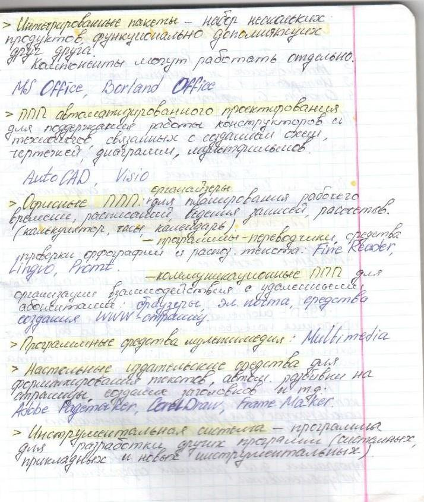
Reference
интегрированные пакеты набор нескольких продуктов функционально дополняющих друг друга компоненты могут работать отдельно ms office borland office ппп автоматизированного проектирования для поддержания работы конструкторов и технологов связанных с созданием схем чертежей диаграмм мультфильмов autocad visio органайзеры офисные ппп для планирования рабочего времени расписаний ведения записей рассчетов калькулятор часы календарь программы переводчики переводчики средства проверки орфографии и распоз текста fine reader lingvo promt коммуникационные ппп для организации взаимодействия с удаленными абонентами браузеры эл почта средства создания www страниц программные средства мультимедиа multimedia настольные издательские средства для форматирования текстов автом разбивки на страницы создания заголовков и т д adobe pagemaker coreldraw framemaker инструментальная система программа для разработки других программ системных прикладных и новых инструментальных
Hypothesis
nes Hele делегааеске
“gt es OE. ани боли
я В сеет pademerrs она,
MS Oftice, herlend Ие
> pan прага ynobariitoro specemipobarises
teh oer KANO,
Ной ee _— ae) os a Е
tepmnericerh ^ ge aceeetl, why nino id
Auto lA, Visio
LCREL CELLS $]
Mid: pes A paderer
Z асе , oie pee. sams price te
У Mabeen genre, TAH eee Doce),
hen Leen, с sae
hey = 20
lige, Gord geet} ел лавиеу. PH ECE: ие
pe SOP Cpe Е и PON Geer
Ae MEY LE pc cece ECE Ce Cte, tElECEGEcCe
ей, < 26%. ae LLU Ce, Gr Le aa
vei WWW ondary, ?
> [pcypaceieeipiote поет рееиеакауеии ^ я pred ia.
> Macnee 29 нае B ie ob
JUL А, se
FY Wing
LCELE aes he a “ZB ae
Be bbe: те [AGE
= ии: р прераьемь
АР Lee ME
yp феи РИА.
Alignment
[+nes]
[+Hele]
[+делегааеске]
[+“gt]
[+es]
[+OE.]
[+ани]
[+боли]
[+я]
[+В]
[+сеет]
[+pademerrs]
[+она,]
[+MS]
[+Oftice,]
[+herlend]
[+Ие]
[+>]
[+pan]
[+прага]
[+ynobariitoro]
[+specemipobarises]
[+teh]
[+oer]
[+KANO,]
[+Ной]
[+ee]
[интегрированные → _—]
[пакеты → ae)]
[набор → os]
[нескольких → a]
[продуктов → Е]
[функционально → tepmnericerh]
[дополняющих → ^]
[друг → ge]
[друга → aceeetl,]
[компоненты → why]
[могут → nino]
[работать → id]
[отдельно → Auto]
[ms → lA,]
[office → Visio]
[borland → LCREL]
[office → CELLS]
[ппп → $]]
[автоматизированного → Mid:]
[проектирования → pes]
[для → A]
[поддержания → paderer]
[работы → Z]
[конструкторов → асе]
[и → ,]
[технологов → oie]
[связанных → pee.]
[с → sams]
[созданием → price]
[схем → te]
[чертежей → У]
[диаграмм → Mabeen]
[мультфильмов → genre,]
[autocad → TAH]
[visio → eee]
[органайзеры → Doce),]
[офисные → hen]
[ппп → Leen,]
[для → с]
[планирования → sae]
[рабочего → hey]
[времени → =]
[расписаний → 20]
[ведения → lige,]
[записей → Gord]
[рассчетов → geet}]
[калькулятор → ел]
[часы → лавиеу.]
[календарь → PH]
[программы → ECE:]
[переводчики → ие]
[переводчики → pe]
[средства → SOP]
[проверки → Cpe]
[орфографии → Е]
и
[+PON]
[+Geer]
[+Ae]
[+MEY]
[+LE]
[+pc]
[+cece]
[+ECE]
[распоз → Ce]
[текста → Cte,]
[fine → tElECEGEcCe]
[reader → ей,]
[lingvo → <]
[promt → 26%.]
[коммуникационные → ae]
[ппп → LLU]
[для → Ce,]
[организации → Gr]
[взаимодействия → Le]
[с → aa]
[удаленными → vei]
[абонентами → WWW]
[браузеры → ondary,]
[эл → ?]
[почта → >]
[средства → [pcypaceieeipiote]
[создания → поет]
[www → рееиеакауеии]
[страниц → ^]
[программные → я]
[средства → pred]
[мультимедиа → ia.]
[multimedia → >]
[настольные → Macnee]
[издательские → 29]
[средства → нае]
[для → B]
[форматирования → ie]
[текстов → ob]
[автом → JUL]
[разбивки → А,]
[на → se]
[страницы → FY]
[создания → Wing]
[заголовков → LCELE]
[и → aes]
[т → he]
[д → a]
[adobe → “ZB]
[pagemaker → ae]
[coreldraw → Be]
[framemaker → bbe:]
[инструментальная → те]
[система → [AGE]
[программа → =]
[для → ии:]
[разработки → р]
[других → прераьемь]
[программ → АР]
[системных → Lee]
[прикладных → ME]
[и → yp]
[новых → феи]
[инструментальных → РИА.]
mws-1008-9efe01e1bb0f
Status: ocr_error
CER: 0.7989
WER: 0.9697
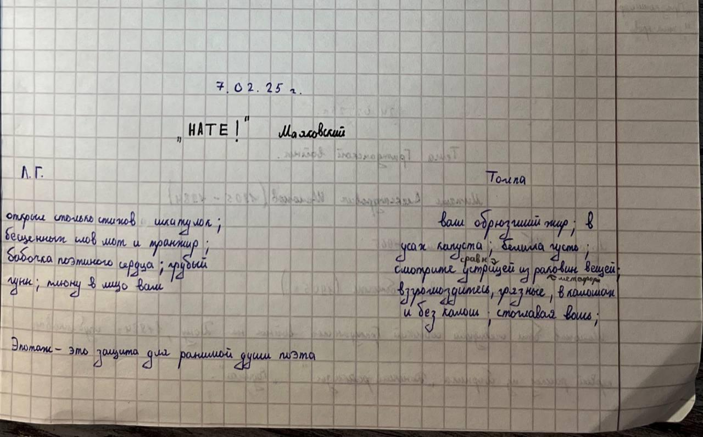
Reference
7 02 25 г нате маяковский л г открыл столько стихов шкатулок бесценных слов мот и транжир бабочка поэтиного сердца грубый гунн плюну в лицо вам эпотаж это защита для ранимой души поэта
Hypothesis
Ор дв
MATE |" оз [ЕТ
Ar. | Ja
опр СОК comin} малы,
Seuss tuine 0$ от. и. вк /
Sobor4a позишнько Cpguo 4 ta
Yim; mony $ abo, Фо
|
ых
Alignment
[-7]
[02 → Ор]
[25 → дв]
[г → MATE]
[нате → |"]
[маяковский → оз]
[л → [ЕТ]
[г → Ar.]
[открыл → |]
[столько → Ja]
[стихов → опр]
[шкатулок → СОК]
[бесценных → comin}]
[слов → малы,]
[мот → Seuss]
[и → tuine]
[транжир → 0$]
[бабочка → от.]
[поэтиного → и.]
[сердца → вк]
[грубый → /]
[гунн → Sobor4a]
[плюну → позишнько]
[в → Cpguo]
[лицо → 4]
[вам → ta]
[эпотаж → Yim;]
[это → mony]
[защита → $]
[для → abo,]
[ранимой → Фо]
[души → |]
[поэта → ых]
mws-1011-b06085c45540
Status: ocr_error
CER: 0.8615
WER: 0.9565
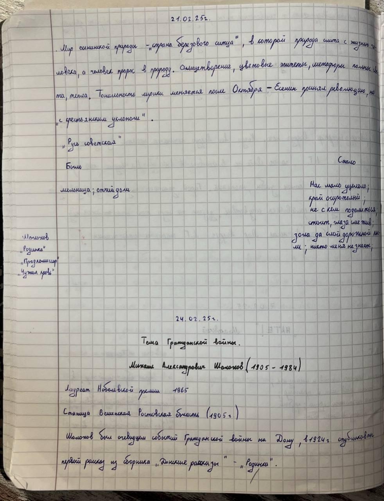
Reference
21 02 25г мир есенинской природы страна березового ситца в которой природа слита жизнью че ловека а человек пророс в природу олицетворение цветовые эпитеты метафоры полны све та тепла тональность лирики меняется после октября есенин принял революцию но с крестьянским уклоном русь советская было мельница отчий дом стало нас мало уцелело край осиротелый не с кем поделиться стоит глаза смежив зола да слой дорожной пы ли никто меня не знает шолохов родинка продкомиссар чужая кровь 24 02 25г тема гражданской войны михаил александрович шолохов 1905 1984 лауреат нобелевской премии 1965 станица вешенская ростовской области 1905 г шолохов был очевидцем событий гражданской войны на дону в 1924 г опубликован первый рассказ из сборника донские рассказы родинка
Hypothesis
21.02.25%
приди ustesemed мыш Оинря. = Exum мы рф
mo, ТАРА , Tonaonouns
| pane abun Seale bet
„Вуз одела"
[5277
Add. 5 oom gt
24,02, 254.
Тема Fpanug omcanii Дони .
Шима Аликс фил Mosoneb (4805 - 484)
Jaypeam ая pon 4065
Chautya inch идол: бин (ladles!)
А
Alignment
[-21]
[-02]
[-25г]
[-мир]
[-есенинской]
[-природы]
[-страна]
[-березового]
[-ситца]
[-в]
[-которой]
[-природа]
[-слита]
[-жизнью]
[-че]
[-ловека]
[-а]
[-человек]
[-пророс]
[-в]
[-природу]
[-олицетворение]
[-цветовые]
[-эпитеты]
[-метафоры]
[-полны]
[-све]
[-та]
[-тепла]
[-тональность]
[-лирики]
[-меняется]
[-после]
[-октября]
[-есенин]
[-принял]
[-революцию]
[-но]
[-с]
[-крестьянским]
[-уклоном]
[-русь]
[-советская]
[-было]
[-мельница]
[-отчий]
[-дом]
[-стало]
[-нас]
[-мало]
[-уцелело]
[-край]
[-осиротелый]
[-не]
[-с]
[-кем]
[-поделиться]
[-стоит]
[-глаза]
[-смежив]
[-зола]
[-да]
[-слой]
[-дорожной]
[-пы]
[-ли]
[никто → 21.02.25%]
[меня → приди]
[не → ustesemed]
[знает → мыш]
[шолохов → Оинря.]
[родинка → =]
[продкомиссар → Exum]
[чужая → мы]
[кровь → рф]
[24 → mo,]
[02 → ТАРА]
[25г → ,]
[тема → Tonaonouns]
[гражданской → |]
[войны → pane]
[михаил → abun]
[александрович → Seale]
[шолохов → bet]
[1905 → „Вуз]
[1984 → одела"]
[лауреат → [5277]
[нобелевской → Add.]
[премии → 5]
[1965 → oom]
[станица → gt]
[вешенская → 24,02,]
[ростовской → 254.]
[области → Тема]
[1905 → Fpanug]
[г → omcanii]
[шолохов → Дони]
[был → .]
[очевидцем → Шима]
[событий → Аликс]
[гражданской → фил]
[войны → Mosoneb]
[на → (4805]
[дону → -]
[в → 484)]
[1924 → Jaypeam]
[г → ая]
[опубликован → pon]
[первый → 4065]
[рассказ → Chautya]
[из → inch]
[сборника → идол:]
[донские → бин]
[рассказы → (ladles!)]
[родинка → А]
mws-102-380a873b1211
Status: ocr_error
CER: 0.0241
WER: 0.0875
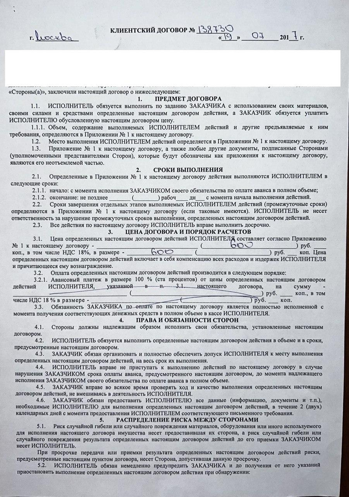
Reference
клиентский договор 138730 г москва 19 07 2017 г стороны а заключили настоящий договор о нижеследующем 1 предмет договора 1 1 исполнитель обязуется выполнить по заданию заказчика с использованием своих материалов своими силами и средствами определенные настоящим договором действия а заказчик обязуется уплатить исполнителю обусловленную настоящим договором цену 1 1 1 объем содержание выполняемых исполнителем действий и другие предъявляемые к ним требования определяются в приложении 1 к настоящему договору 1 2 место выполнения исполнителем действий определяется в приложении 1 к настоящему договору 1 3 приложение 1 к настоящему договору а также любые другие документы подписанные сторонами уполномоченными представителями сторон которые будут обозначены как приложения к настоящему договору являются его неотъемлемой частью 2 сроки выполнения 2 1 определенные в приложении 1 к настоящему договору действия выполняются исполнителем в следующие сроки 2 1 1 начало с момента исполнения заказчиком своего обязательства по оплате аванса в полном объеме 2 1 2 окончание не позднее рабоч дн с момента начала выполнения действий 2 2 срок завершения отдельных этапов выполняемых исполнителем действий промежуточные сроки определяются в приложении 1 к настоящему договору если таковые имеются исполнитель не несет ответственность за нарушение промежуточных сроков выполнения определенных настоящим договором действий 2 3 все действия по настоящему договору исполнитель вправе выполнить досрочно 3 цена договора и порядок расчетов 3 1 цена определенных настоящим договором действий исполнителя составляет согласно приложению 1 к настоящему договору 600 руб коп в том числе ндс 18 в размере 600 руб коп цена определенных настоящим договором действий включает в себя компенсацию всех расходов и издержек исполнителя и причитающееся ему вознаграждение 3 2 оплата определенных настоящим договором действий производится в следующем порядке 3 2 1 авансовый платеж в размере 100 ста процентов от цены определенных настоящим договором действий исполнителя указанной в п 3 1 настоящего договора на сумму руб коп в том числе ндс 18 в размере руб коп 3 3 обязанность заказчика по оплате по настоящему договору является полностью исполненной с момента получения соответствующих денежных средств в полном объеме в кассе исполнителя 4 права и обязанности сторон 4 1 стороны должны надлежащим образом исполнить свои обязательства установленные настоящим договором 4 2 исполнитель обязуется выполнить определенные настоящим договором действия в объеме и в сроки предусмотренные настоящим договором 4 3 заказчик обязан организовать и полностью обеспечить допуск исполнителя к месту выполнения определенных настоящим договором действий на весь срок их выполнения 4 4 исполнитель вправе не приступать к выполнению действий по настоящему договору в случае нарушения заказчиком срока оплаты аванса предусмотренного настоящим договором до момента надлежащего исполнения заказчиком своего обязательства по оплате аванса в полном объеме 4 5 заказчик в праве во всякое время проверять ход и качество выполнения определенных настоящим договором действий не вмешиваясь в деятельность исполнителя 4 6 заказчик обязан предоставить исполнителю все данные информацию документы и т п необходимые исполнителю для выполнения определенных настоящим договором действий в течение 2 двух календарных дней с момента предоставления исполнителем соответствующего письменного требования 5 распределение риска между сторонами 5 1 риск случайной гибели или случайного повреждения материалов оборудования или иного используемого для исполнения настоящего договора имущества несет предоставившая их сторона а риск случайной гибели или случайного повреждения результата определенных настоящим договором действий до его приемки заказчиком несет исполнитель при просрочке передачи или приемки результата определенных настоящим договором действий риски предусмотренные настоящим пунктом договора несет сторона допустившая данную просрочку 5 2 исполнитель обязан немедленно предупредить заказчика и до получения от него указаний приостановить выполнение определенных настоящим договором действия при обнаружении
Hypothesis
КЛИЕНТСКИЙ ДОГОВОР № |5 35
Ycertoa Ав, oleae
‘«Croponni(a)», заключили настоящий договор о нижеследующем:
1. — ПРЕДМЕТ ДОГОВОРА
1.1. ИСПОЛНИТЕЛЬ обязуется выполнить по заданию ЗАКАЗЧИКА с использованием своих материалов,
своими силами и средствами определенные настоящим договором действия, а ЗАКАЗЧИК обязуется уплатить
ИСПОЛНИТЕЛЮ обусловленную настоящим договором цену.
1.1.1. Объем, содержание выполняемых ИСПОЛНИТЕЛЕМ действий и другие предъявляемые к ним
требования, определяются в Приложении № 1 к настоящему договору.
1.2. Место выполнения ИСПОЛНИТЕЛЕМ действий определяется в Приложении № 1 к настоящему договору.
13. Приложение № 1 к настоящему договору, а также любые другие документы, подписанные Сторонами
(уполномоченными представителями Сторон), которые будут обозначены как приложения к настоящему договору,
являются его неотъемлемой частью.
2. — СРОКИ ВЫПОЛНЕНИЯ
2.1. Определенные в Приложении № 1 к настоящему договору действия выполняются ИСПОЛНИТЕЛЕМ в.
следующие сроки:
2.1.1. начало: с момента исполнения ЗАКАЗЧИКОМ своего обязательства по оплате аванса в полном объеме;
2.1.2. окончание: He позднее ( ) рабоч __ дн__ смомента начала выполнения действий.
2.2. Сроки завершения отдельных этапов выполняемых ИСПОЛНИТЕЛЕМ действий (промежуточные сроки)
определяются в Приложении № 1 к настоящему договору (если таковые имеются). ИСПОЛНИТЕЛЬ не несет
ответственность за нарушение промежуточных сроков выполнения, определенных настоящим договором действий.
2.3. Все действия по настоящему договору ИСПОЛНИТЕЛЬ вправе выполнить досрочно.
3. — ЦЕНА ДОГОВОРА И ПОРЯДОК РАСЧЕТОВ
3.1, Цена определенных настоящим договором действий ИСПОЛНИТЕЛЯ составляет согласно Приложению
№ 1 к настоящему договору - С 2) ) руб.
коп., в том числе НДС 18%, в размере - Gos Е ) руб. коп. Цена.
‘определенных настоящим договором действий включает в себя компенсацию всех расходов и издержек ИСПОЛНИТЕЛЯ
и причитающееся ему вознаграждение.
3.2. Оплата определенных настоящим договором действий производится в следующем порядке:
3.2.1. Авансовый платеж в размере 100 % (ста процентов) от цены определенных настоящим договором
действий — ИСПОЛНИТЕЛЯ, указаний вв 3. romero. договор, на сумму -
) руб. коп., в TOM
руб о Ир,
Ей (
числе НДС 18 % в размере -
333. Обязанность ЗАКАЗЧИКА 10-01 по настоящему договору является полностью исполненной с
момента получения соответствующих денежных средств в полном объеме в кассе ИСПОЛНИТЕЛЯ.
4. — ПРАВА И ОБЯЗАННОСТИ СТОРОН
41. Стороны должны надлежащим образом исполнить свои обязательства, установленные настоящим
‘договором.
42. ИСПОЛНИТЕЛЬ обязуется выполнить определенные настоящим договором действия в объеме и в сроки,
предусмотренные настоящим договором.
43. ЗАКАЗЧИК обязан организовать и полностью обеспечить допуск ИСПОЛНИТЕЛЯ к месту выполнения
‘определенных настоящим договором действий, на весь срок их выполнения,
44. ИСПОЛНИТЕЛЬ вправе не приступать к выполнению действий по настоящему договору в случае
нарушения ЗАКАЗЧИКОМ срока оплаты аванса, предусмотренного настоящим договором, до момента надлежащего
исполнения ЗАКАЗЧИКОМ своего обязательства по оплате аванса в полном объеме.
4.5. ЗАКАЗЧИК вправе во всякое время проверять ход и качество выполнения определенных настоящим
договором действий, не вмешиваясь в деятельность ИСПОЛНИТЕЛЯ,
46. ЗАКАЗЧИК обязан предоставить ИСПОЛНИТЕЛЮ все данные (информацию, документы и т.п.),
необходимые ИСПОЛНИТЕЛЮ для выполнения определенных настоящим договором действий, в течение 2 (двух)
календарных дней с момента предоставления ИСПОЛНИТЕЛЕМ соответствующего письменного требования,
5. — РАСПРЕДЕЛЕНИЕ РИСКА МЕЖДУ СТОРОНАМИ
5.1, Риск случайной гибели или случайного повреждения материалов, оборудования или иного используемого
для исполнения настоящего договора имущества несет предоставившая их сторона, a риск случайной гибели или’
‘случайного повреждения результата определенных настоящим договором действий до его приемки ЗАКАЗЧИКОМ
несет ИСПОЛНИТЕЛЬ.
При просрочке передачи или приемки результата определенных настоящим договором действий риски,
предусмотренные настоящим пунктом договора, несет Сторона, допустившая данную просрочку.
5-2. ИСПОЛНИТЕЛЬ обязан немедленно предупредить ЗАКАЗЧИКА и до получения от него указаний
приостановить выполнение определенных настоящим договором действия при обнаружении:
Alignment
[-клиентский]
[-договор]
[138730 → КЛИЕНТСКИЙ]
[г → ДОГОВОР]
[москва → №]
[19 → |5]
[07 → 35]
[2017 → Ycertoa]
[г → Ав,]
[стороны → oleae]
[а → ‘«Croponni(a)»,]
заключили
настоящий
договор
о
[нижеследующем → нижеследующем:]
[1 → 1.]
[предмет → —]
[договора → ПРЕДМЕТ]
[1 → ДОГОВОРА]
[1 → 1.1.]
[исполнитель → ИСПОЛНИТЕЛЬ]
обязуется
выполнить
по
заданию
[заказчика → ЗАКАЗЧИКА]
с
использованием
своих
[материалов → материалов,]
своими
силами
и
средствами
определенные
настоящим
договором
[действия → действия,]
а
[заказчик → ЗАКАЗЧИК]
обязуется
уплатить
[исполнителю → ИСПОЛНИТЕЛЮ]
обусловленную
настоящим
договором
[-цену]
[-1]
[1 → цену.]
[1 → 1.1.1.]
[объем → Объем,]
содержание
выполняемых
[исполнителем → ИСПОЛНИТЕЛЕМ]
действий
и
другие
предъявляемые
к
ним
[требования → требования,]
определяются
в
[+Приложении]
[приложении → №]
1
к
настоящему
[-договору]
[1 → договору.]
[2 → 1.2.]
[место → Место]
выполнения
[исполнителем → ИСПОЛНИТЕЛЕМ]
действий
определяется
в
[+Приложении]
[приложении → №]
1
к
настоящему
[договору → договору.]
[1 → 13.]
[3 → Приложение]
[приложение → №]
1
к
настоящему
[договору → договору,]
а
также
любые
другие
[документы → документы,]
подписанные
[сторонами → Сторонами]
[уполномоченными → (уполномоченными]
представителями
[сторон → Сторон),]
которые
будут
обозначены
как
приложения
к
настоящему
[договору → договору,]
являются
его
неотъемлемой
[частью → частью.]
[2 → 2.]
[сроки → —]
[выполнения → СРОКИ]
[2 → ВЫПОЛНЕНИЯ]
[1 → 2.1.]
[определенные → Определенные]
в
[+Приложении]
[приложении → №]
1
к
настоящему
договору
действия
выполняются
[исполнителем → ИСПОЛНИТЕЛЕМ]
[в → в.]
следующие
[-сроки]
[-2]
[1 → сроки:]
[1 → 2.1.1.]
[начало → начало:]
с
момента
исполнения
[заказчиком → ЗАКАЗЧИКОМ]
своего
обязательства
по
оплате
аванса
в
полном
[объеме → объеме;]
[2 → 2.1.2.]
[1 → окончание:]
[2 → He]
[окончание → позднее]
[не → (]
[позднее → )]
рабоч
[дн → __]
[с → дн__]
[момента → смомента]
начала
выполнения
[-действий]
[2 → действий.]
[2 → 2.2.]
[срок → Сроки]
завершения
отдельных
этапов
выполняемых
[исполнителем → ИСПОЛНИТЕЛЕМ]
действий
[промежуточные → (промежуточные]
[сроки → сроки)]
определяются
в
[+Приложении]
[приложении → №]
1
к
настоящему
договору
[если → (если]
таковые
[имеются → имеются).]
[исполнитель → ИСПОЛНИТЕЛЬ]
не
несет
ответственность
за
нарушение
промежуточных
сроков
[выполнения → выполнения,]
определенных
настоящим
договором
[-действий]
[2 → действий.]
[3 → 2.3.]
[все → Все]
действия
по
настоящему
договору
[исполнитель → ИСПОЛНИТЕЛЬ]
вправе
выполнить
[досрочно → досрочно.]
[3 → 3.]
[цена → —]
[договора → ЦЕНА]
[и → ДОГОВОРА]
[порядок → И]
[расчетов → ПОРЯДОК]
[3 → РАСЧЕТОВ]
[1 → 3.1,]
[цена → Цена]
определенных
настоящим
договором
действий
[исполнителя → ИСПОЛНИТЕЛЯ]
составляет
согласно
[+Приложению]
[приложению → №]
1
к
настоящему
договору
[+-]
[+С]
[+2)]
[600 → )]
[руб → руб.]
[коп → коп.,]
в
том
числе
[ндс → НДС]
[18 → 18%,]
в
размере
[+-]
[+Gos]
[+Е]
[600 → )]
[руб → руб.]
[коп → коп.]
[цена → Цена.]
[определенных → ‘определенных]
настоящим
договором
действий
включает
в
себя
компенсацию
всех
расходов
и
издержек
[исполнителя → ИСПОЛНИТЕЛЯ]
и
причитающееся
ему
[-вознаграждение]
[3 → вознаграждение.]
[2 → 3.2.]
[оплата → Оплата]
определенных
настоящим
договором
действий
производится
в
следующем
[-порядке]
[-3]
[2 → порядке:]
[1 → 3.2.1.]
[авансовый → Авансовый]
платеж
в
размере
100
[+%]
[ста → (ста]
[процентов → процентов)]
от
цены
определенных
настоящим
договором
действий
[-исполнителя]
[указанной → —]
[в → ИСПОЛНИТЕЛЯ,]
[п → указаний]
[3 → вв]
[1 → 3.]
[настоящего → romero.]
[договора → договор,]
на
сумму
[+-]
[+)]
[+руб.]
[+коп.,]
[+в]
[+TOM]
руб
[+о]
[коп → Ир,]
[в → Ей]
[том → (]
числе
[ндс → НДС]
18
[+%]
в
размере
[-руб]
[-коп]
[-3]
[3 → -]
[обязанность → 333.]
[заказчика → Обязанность]
[по → ЗАКАЗЧИКА]
[оплате → 10-01]
по
настоящему
договору
является
полностью
исполненной
с
момента
получения
соответствующих
денежных
средств
в
полном
объеме
в
кассе
[исполнителя → ИСПОЛНИТЕЛЯ.]
[4 → 4.]
[права → —]
[и → ПРАВА]
[обязанности → И]
[сторон → ОБЯЗАННОСТИ]
[4 → СТОРОН]
[1 → 41.]
[стороны → Стороны]
должны
надлежащим
образом
исполнить
свои
[обязательства → обязательства,]
установленные
настоящим
[-договором]
[4 → ‘договором.]
[2 → 42.]
[исполнитель → ИСПОЛНИТЕЛЬ]
обязуется
выполнить
определенные
настоящим
договором
действия
в
объеме
и
в
[сроки → сроки,]
предусмотренные
настоящим
[-договором]
[4 → договором.]
[3 → 43.]
[заказчик → ЗАКАЗЧИК]
обязан
организовать
и
полностью
обеспечить
допуск
[исполнителя → ИСПОЛНИТЕЛЯ]
к
месту
выполнения
[определенных → ‘определенных]
настоящим
договором
[действий → действий,]
на
весь
срок
их
[-выполнения]
[4 → выполнения,]
[4 → 44.]
[исполнитель → ИСПОЛНИТЕЛЬ]
вправе
не
приступать
к
выполнению
действий
по
настоящему
договору
в
случае
нарушения
[заказчиком → ЗАКАЗЧИКОМ]
срока
оплаты
[аванса → аванса,]
предусмотренного
настоящим
[договором → договором,]
до
момента
надлежащего
исполнения
[заказчиком → ЗАКАЗЧИКОМ]
своего
обязательства
по
оплате
аванса
в
полном
[-объеме]
[-4]
[5 → объеме.]
[заказчик → 4.5.]
[в → ЗАКАЗЧИК]
[праве → вправе]
во
всякое
время
проверять
ход
и
качество
выполнения
определенных
настоящим
договором
[действий → действий,]
не
вмешиваясь
в
деятельность
[-исполнителя]
[4 → ИСПОЛНИТЕЛЯ,]
[6 → 46.]
[заказчик → ЗАКАЗЧИК]
обязан
предоставить
[исполнителю → ИСПОЛНИТЕЛЮ]
все
данные
[информацию → (информацию,]
документы
и
[-т]
[п → т.п.),]
необходимые
[исполнителю → ИСПОЛНИТЕЛЮ]
для
выполнения
определенных
настоящим
договором
[действий → действий,]
в
течение
2
[двух → (двух)]
календарных
дней
с
момента
предоставления
[исполнителем → ИСПОЛНИТЕЛЕМ]
соответствующего
письменного
[требования → требования,]
[5 → 5.]
[распределение → —]
[риска → РАСПРЕДЕЛЕНИЕ]
[между → РИСКА]
[сторонами → МЕЖДУ]
[5 → СТОРОНАМИ]
[1 → 5.1,]
[риск → Риск]
случайной
гибели
или
случайного
повреждения
[материалов → материалов,]
оборудования
или
иного
используемого
для
исполнения
настоящего
договора
имущества
несет
предоставившая
их
[сторона → сторона,]
[а → a]
риск
случайной
гибели
[или → или’]
[случайного → ‘случайного]
повреждения
результата
определенных
настоящим
договором
действий
до
его
приемки
[заказчиком → ЗАКАЗЧИКОМ]
несет
[исполнитель → ИСПОЛНИТЕЛЬ.]
[при → При]
просрочке
передачи
или
приемки
результата
определенных
настоящим
договором
действий
[риски → риски,]
предусмотренные
настоящим
пунктом
[договора → договора,]
несет
[сторона → Сторона,]
допустившая
данную
[-просрочку]
[5 → просрочку.]
[2 → 5-2.]
[исполнитель → ИСПОЛНИТЕЛЬ]
обязан
немедленно
предупредить
[заказчика → ЗАКАЗЧИКА]
и
до
получения
от
него
указаний
приостановить
выполнение
определенных
настоящим
договором
действия
при
[обнаружении → обнаружении:]
mws-1026-2b44effd4bec
Status: ocr_error
CER: 0.4943
WER: 0.6000
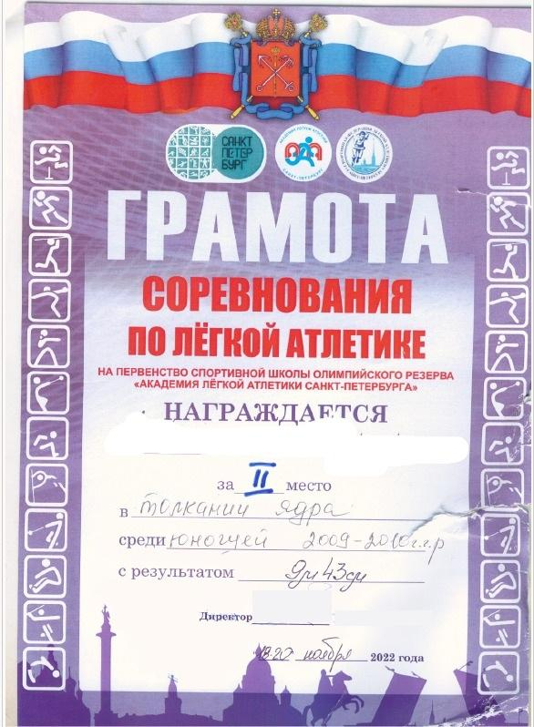
Reference
грамота соревнования по легкой атлетике на первенство спортивной школы олимпийского резерва академия легкой атлетики санкт петербурга награждается за ii место в толкании ядра среди юношей 2009 2010 г р с результатом 9м 43см директор подпись 18 20 ноября 2022 года
Hypothesis
ЦЕ"
НА ПЕРВЕНСТВО СПОРТИВНОЙ ШКОЛЫ Onur
«АКАДЕМИЯ ЛЁГКОЙ АТЛЕТИКИ САНКТ-
НАГРАЖДАЕТСЯ
за М. место
в ббдканий Sopa
среди оно чем НР
с результатом Jae beep
УИ 2022 года
J “
Alignment
[-грамота]
[-соревнования]
[-по]
[-легкой]
[-атлетике]
[-на]
[первенство → ЦЕ"]
[спортивной → НА]
[школы → ПЕРВЕНСТВО]
[олимпийского → СПОРТИВНОЙ]
[резерва → ШКОЛЫ]
[академия → Onur]
[легкой → «АКАДЕМИЯ]
[атлетики → ЛЁГКОЙ]
[санкт → АТЛЕТИКИ]
[петербурга → САНКТ-]
[награждается → НАГРАЖДАЕТСЯ]
за
[ii → М.]
место
в
[толкании → ббдканий]
[ядра → Sopa]
среди
[-юношей]
[-2009]
[2010 → оно]
[г → чем]
[р → НР]
с
результатом
[-9м]
[-43см]
[директор → Jae]
[подпись → beep]
[18 → УИ]
[20 → 2022]
[ноября → года]
[2022 → J]
[года → “]
mws-1053-bb68e4f9ff9d
Status: ocr_error
CER: 0.7949
WER: 0.9658
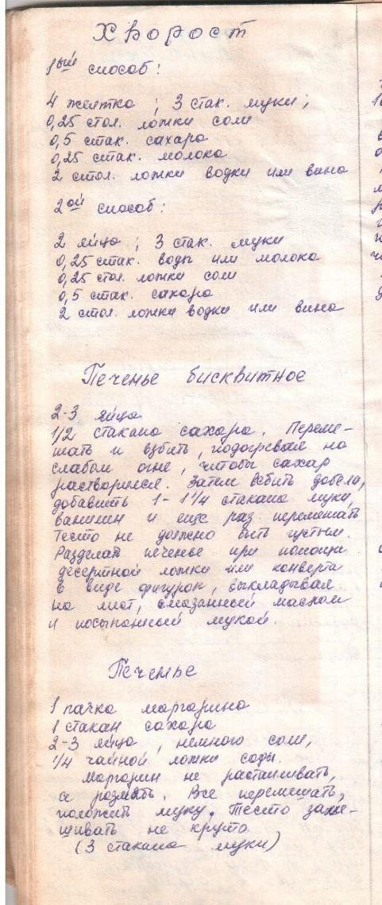
Reference
хворост 1ый способ 4 желтка 3 стак муки 0 25 стол ложки соли 0 5 стак сахара 0 25 стак молока 2 стол ложки водки или вина 2ой способ 2 яйца 3 стак муки 0 25 стак воды или молока 0 25 стол ложки соли 0 5 стак сахара 2 стол ложки водки или вина печенье бисквитное 2 3 яйца 1 2 стакана сахара перемешать и взбить подогревая на слабом огне чтобы сахар растворился затем взбить добела добавить 1 1 1 4 стакана муки ванилин и еще раз перемешать тесто не должно быть густым разделать печенье при помощи десертной ложки или конверта в виде фигурок выкладывая на лист смазанный маслом и посыпанный мукой печенье 1 пачка маргарина 1 стакан сахара 2 3 яйца немного соли 1 4 чайной лодки соды маргарин не растапливать а размять все перемешать положить муку тесто замешивать не круто 3 стакана муки
Hypothesis
LRpopoenm
184 euccot!
4 necameo | Зе. Leytcel }
Gd ето. панки Cone =
GF ewer. сахаре. : |
OAS вбок. LO LORE 12
4 euros, доме води Чаи В
|
|
dues | 3 car.
9 45 ибак. bog Yau uoLone
Gk OL “omnes COL
05 wer. eaxepe $
4 масл. soncen Зори Чаи dusea- |
Terese bier buaitoe
AF syn
Yi, сокме ветер, (epee |
в ге is SORT uo |
ми, Ге Ал fon
. gata бий plete,
брбавшев = 1- И враки Lagee”
Gali ¢ ве le Mopeccinte
Tee Ke yelneeo a iyestie,
PaggecaR uereuece afr wberoupe |
f Go 20m di KoUbesie-
С We, 8
Ц ublrnassced чека
Te ешеье.
> /лалко, eed frre fuctseO-
/ бакей Cane,
Map ue еее ее ,
а am, Bee eneeera Ze y
neh Lyfe, ево sage -
wuben me ру
Alignment
[хворост → LRpopoenm]
[1ый → 184]
[способ → euccot!]
4
[-желтка]
[-3]
[-стак]
[-муки]
[0 → necameo]
[25 → |]
[стол → Зе.]
[ложки → Leytcel]
[соли → }]
[0 → Gd]
[5 → ето.]
[стак → панки]
[сахара → Cone]
[0 → =]
[25 → GF]
[стак → ewer.]
[молока → сахаре.]
[2 → :]
[стол → |]
[ложки → OAS]
[водки → вбок.]
[или → LO]
[вина → LORE]
[2ой → 12]
[способ → 4]
[2 → euros,]
[яйца → доме]
[3 → води]
[стак → Чаи]
[муки → В]
[0 → |]
[25 → |]
[стак → dues]
[воды → |]
[или → 3]
[молока → car.]
[0 → 9]
[25 → 45]
[стол → ибак.]
[ложки → bog]
[соли → Yau]
[0 → uoLone]
[5 → Gk]
[стак → OL]
[сахара → “omnes]
[2 → COL]
[стол → 05]
[ложки → wer.]
[водки → eaxepe]
[или → $]
[вина → 4]
[печенье → масл.]
[бисквитное → soncen]
[2 → Зори]
[3 → Чаи]
[яйца → dusea-]
[1 → |]
[2 → Terese]
[стакана → bier]
[сахара → buaitoe]
[перемешать → AF]
[и → syn]
[взбить → Yi,]
[подогревая → сокме]
[на → ветер,]
[слабом → (epee]
[огне → |]
[чтобы → в]
[сахар → ге]
[растворился → is]
[затем → SORT]
[взбить → uo]
[добела → |]
[добавить → ми,]
[1 → Ге]
[1 → Ал]
[1 → fon]
[4 → .]
[стакана → gata]
[муки → бий]
[ванилин → plete,]
[и → брбавшев]
[еще → =]
[раз → 1-]
[перемешать → И]
[тесто → враки]
[не → Lagee”]
[должно → Gali]
[быть → ¢]
[густым → ве]
[разделать → le]
[печенье → Mopeccinte]
[при → Tee]
[помощи → Ke]
[десертной → yelneeo]
[ложки → a]
[или → iyestie,]
[конверта → PaggecaR]
[в → uereuece]
[виде → afr]
[фигурок → wberoupe]
[выкладывая → |]
[на → f]
[лист → Go]
[смазанный → 20m]
[маслом → di]
[и → KoUbesie-]
[посыпанный → С]
[мукой → We,]
[печенье → 8]
[1 → Ц]
[пачка → ublrnassced]
[маргарина → чека]
[1 → Te]
[стакан → ешеье.]
[сахара → >]
[2 → /лалко,]
[3 → eed]
[яйца → frre]
[немного → fuctseO-]
[соли → /]
[1 → бакей]
[4 → Cane,]
[чайной → Map]
[лодки → ue]
[соды → еее]
[маргарин → ее]
[не → ,]
[растапливать → а]
[а → am,]
[размять → Bee]
[все → eneeera]
[перемешать → Ze]
[положить → y]
[муку → neh]
[тесто → Lyfe,]
[замешивать → ево]
[не → sage]
[круто → -]
[3 → wuben]
[стакана → me]
[муки → ру]
mws-1062-a397ec13b637
Status: ocr_error
CER: 0.8228
WER: 1.0000
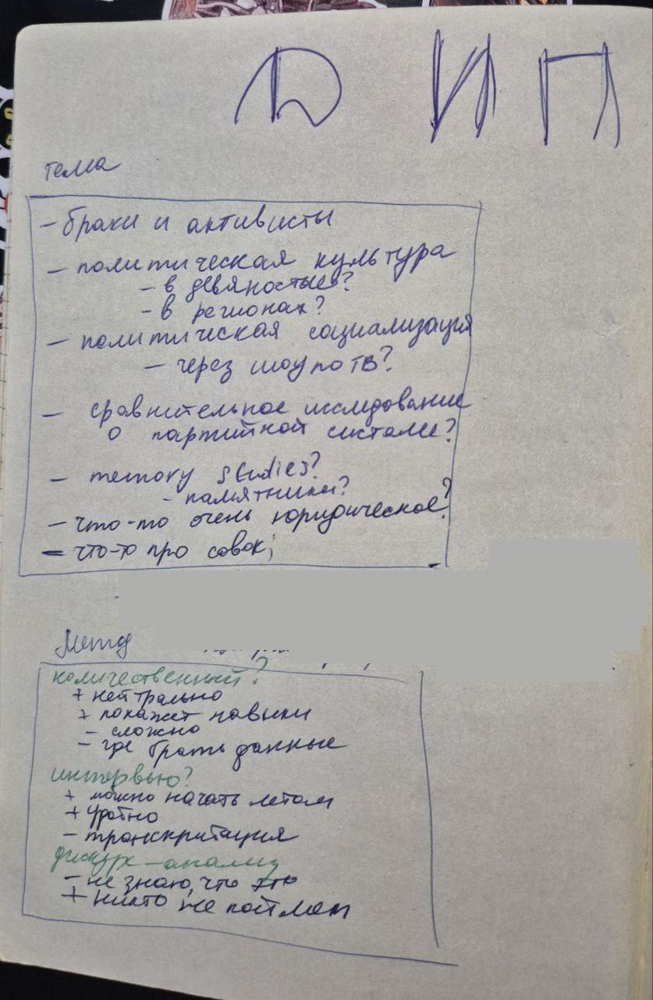
Reference
дип тема браки и активисты политическая культура в девяностые в регионах политическая социализация через шоу по тв сравнительное исследование и партийной системе memory studies памятники что то очень юридическое что то про совок метод количественный нейтрально покажет навыки сложно где брать данные интервью можно начать летом удобно транскрибация дискурс анализ не знаю что это никто не поймет
Hypothesis
она
ГИР
‘
base
у 1
}
f.
| aot
| о me reeiak keel Tp
| S co Har? |
| | — peu пил еее Я соло
| — Upeg мед ло 7B” ]
Fe я при HOM сета 7)
|
~ hats x ]
| mo-mo лем Vp |
| — wr о с) — a
[| Kee Leer’ Curincey 2 ra
a A054 рее ИАА
2 Gomes geste
| Е
пили? |
ro
Alignment
[+она]
[+ГИР]
[+‘]
[+base]
[+у]
[+1]
[+}]
[+f.]
[+|]
[+aot]
[+|]
[+о]
[+me]
[+reeiak]
[+keel]
[+Tp]
[+|]
[+S]
[+co]
[+Har?]
[дип → |]
[тема → |]
[браки → |]
[и → —]
[активисты → peu]
[политическая → пил]
[культура → еее]
[в → Я]
[девяностые → соло]
[в → |]
[регионах → —]
[политическая → Upeg]
[социализация → мед]
[через → ло]
[шоу → 7B”]
[по → ]]
[тв → Fe]
[сравнительное → я]
[исследование → при]
[и → HOM]
[партийной → сета]
[системе → 7)]
[memory → |]
[studies → ~]
[памятники → hats]
[что → x]
[то → ]]
[очень → |]
[юридическое → mo-mo]
[что → лем]
[то → Vp]
[про → |]
[совок → |]
[метод → —]
[количественный → wr]
[нейтрально → о]
[покажет → с)]
[навыки → —]
[сложно → a]
[где → [|]
[брать → Kee]
[данные → Leer’]
[интервью → Curincey]
[можно → 2]
[начать → ra]
[летом → a]
[удобно → A054]
[транскрибация → рее]
[дискурс → ИАА]
[анализ → 2]
[не → Gomes]
[знаю → geste]
[что → |]
[это → Е]
[никто → пили?]
[не → |]
[поймет → ro]
mws-107-3770f8ccac19
Status: ocr_error
CER: 0.0467
WER: 0.1329
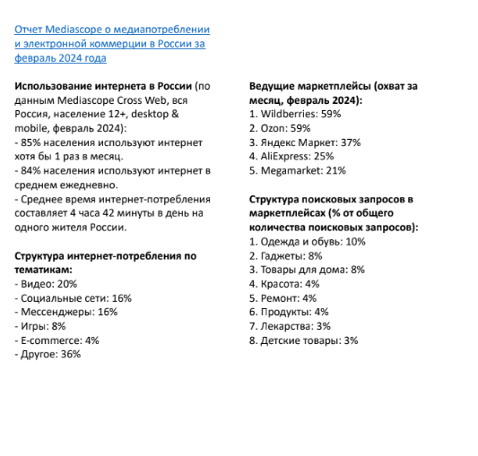
Reference
отчет mediascope о медиапотреблении и электронной коммерции в россии за февраль 2024 года использование интернета в россии по данным mediascope cross web вся россия население 12 desktop mobile февраль 2024 85 населения используют интернет хотя бы 1 раз в месяц 84 населения используют интернет в среднем ежедневно среднее время интернет потребления составляет 4 часа 42 минуты в день на одного жителя россии структура интернет потребления по тематикам видео 20 социальные сети 16 мессенджеры 16 игры 8 e commerce 4 другое 36 ведущие маркетплейсы охват за месяц февраль 2024 1 wildberries 59 2 ozon 59 3 яндекс маркет 37 4 aliexpress 25 5 megamarket 21 структура поисковых запросов в маркетплейсах от общего количества поисковых запросов 1 одежда и обувь 10 2 гаджеты 8 3 товары для дома 8 4 красота 4 5 ремонт 4 6 продукты 4 7 лекарства 3 8 детские товары 3
Hypothesis
‘Отчет Mediascope о медиапотреблении
и электронной номмерции в России за
‘февраль 2024 года
‘использование интернета в России (по
‘данным Mediascope Cross Web, вся
Россия, население 12+, desktop &
mobile, февраль 2024)
- 85% населения используют интернет
хотя бы 1 pas в месяц.
- 84% населения используют интернет 6
cpeanem ежедневно.
= Среднее время интернет-потребления
составляет 4 часа 42 минуты в день на
одного жителя России.
Структура интернет-потребления no
тематикам:
= Видео: 20%
- Социальные сети: 16%
- Мессенджеры: 16%
Игры: 8%
- Ecommerce: 4%
- Другое: 36%
Ведущие маркетплейсы (охват за
‘mecau, февраль 2024):
1. Wildberries: 59%
2. Oz0n: 59%
3. Яндекс Маркет: 37%
4. AliExpress: 25%
5. Megamarket: 21%
Структура поисковых запросов:
`маркетплейсах (% от общего
ноличества поисковых запросов):
- Одежда и обувь: 10%
. Гаджеты: 8%
. Товары для дома: 8%
Красота: 4%
. Ремонт: 4%
. Продукты: 4%
. Лекарства: 3%
. Детские товары: 3%
Alignment
[отчет → ‘Отчет]
[mediascope → Mediascope]
о
медиапотреблении
и
электронной
[коммерции → номмерции]
в
[россии → России]
за
[февраль → ‘февраль]
2024
года
[использование → ‘использование]
интернета
в
[россии → России]
[по → (по]
[данным → ‘данным]
[mediascope → Mediascope]
[cross → Cross]
[web → Web,]
вся
[россия → Россия,]
население
[12 → 12+,]
desktop
[+&]
[mobile → mobile,]
февраль
[+2024)]
[2024 → -]
[85 → 85%]
населения
используют
интернет
хотя
бы
1
[раз → pas]
в
[+месяц.]
[месяц → -]
[84 → 84%]
населения
используют
интернет
[в → 6]
[среднем → cpeanem]
[ежедневно → ежедневно.]
[среднее → =]
[время → Среднее]
[интернет → время]
[потребления → интернет-потребления]
составляет
4
часа
42
минуты
в
день
на
одного
жителя
[+России.]
[+Структура]
[+интернет-потребления]
[россии → no]
[структура → тематикам:]
[интернет → =]
[потребления → Видео:]
[по → 20%]
[тематикам → -]
[видео → Социальные]
[20 → сети:]
[социальные → 16%]
[сети → -]
[16 → Мессенджеры:]
[мессенджеры → 16%]
[16 → Игры:]
[игры → 8%]
[8 → -]
[e → Ecommerce:]
[commerce → 4%]
[4 → -]
[другое → Другое:]
[36 → 36%]
[ведущие → Ведущие]
маркетплейсы
[охват → (охват]
за
[месяц → ‘mecau,]
февраль
[2024 → 2024):]
[1 → 1.]
[wildberries → Wildberries:]
[59 → 59%]
[2 → 2.]
[ozon → Oz0n:]
[59 → 59%]
[3 → 3.]
[яндекс → Яндекс]
[маркет → Маркет:]
[37 → 37%]
[4 → 4.]
[aliexpress → AliExpress:]
[25 → 25%]
[5 → 5.]
[megamarket → Megamarket:]
[21 → 21%]
[структура → Структура]
поисковых
[запросов → запросов:]
[в → `маркетплейсах]
[маркетплейсах → (%]
от
общего
[количества → ноличества]
поисковых
[запросов → запросов):]
[1 → -]
[одежда → Одежда]
и
[обувь → обувь:]
[10 → 10%]
[2 → .]
[гаджеты → Гаджеты:]
[8 → 8%]
[3 → .]
[товары → Товары]
для
[-дома]
[8 → дома:]
[4 → 8%]
[красота → Красота:]
[4 → 4%]
[5 → .]
[ремонт → Ремонт:]
[4 → 4%]
[6 → .]
[продукты → Продукты:]
[4 → 4%]
[7 → .]
[лекарства → Лекарства:]
[3 → 3%]
[8 → .]
[детские → Детские]
[товары → товары:]
[3 → 3%]
mws-1070-3eb2edcd0fc2
Status: ocr_error
CER: 1.0000
WER: 1.0000
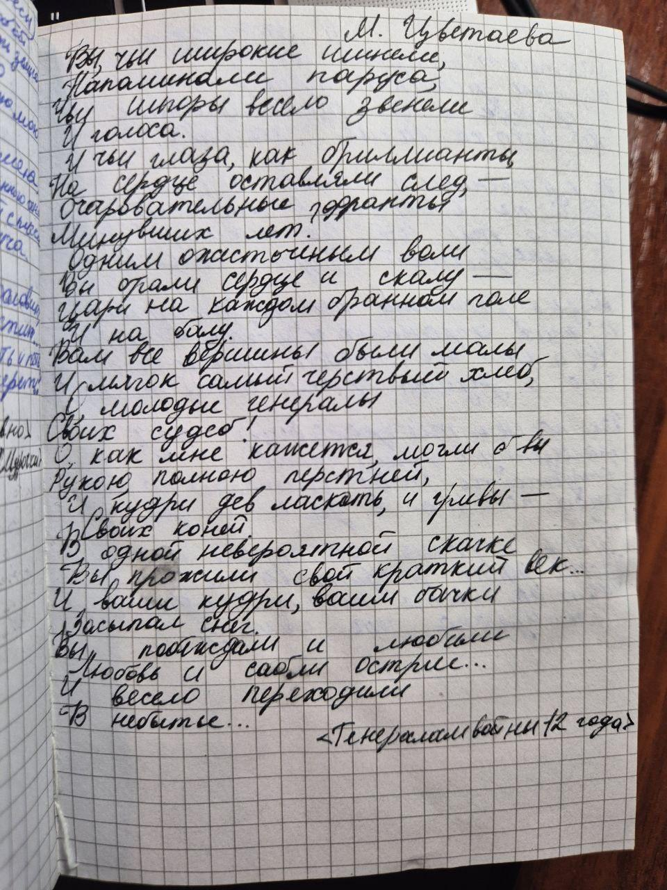
Reference
м цветаева вы чьи широкие шинели напоминали паруса чьи шпоры весело звенели и голоса и чьи глаза как бриллианты на сердце оставляли след очаровательные франты минувших лет одним ожесточеньем воли вы брали сердце и скалу цари на каждом бранном поле и на балу вам все вершины были малы и мягок самый черствый хлеб о молодые генералы своих судеб о как мне кажется могли б вы рукою полною перстней и кудри дев ласкать и гривы своих коней в одной невероятной скачке вы прожили свой краткий век и ваши кудри ваши бачки засыпал снег вы побеждали и любили любовь и сабли острие и весело переходили в небытье генералам войны 12 года
Hypothesis
Alignment
[-м]
[-цветаева]
[-вы]
[-чьи]
[-широкие]
[-шинели]
[-напоминали]
[-паруса]
[-чьи]
[-шпоры]
[-весело]
[-звенели]
[-и]
[-голоса]
[-и]
[-чьи]
[-глаза]
[-как]
[-бриллианты]
[-на]
[-сердце]
[-оставляли]
[-след]
[-очаровательные]
[-франты]
[-минувших]
[-лет]
[-одним]
[-ожесточеньем]
[-воли]
[-вы]
[-брали]
[-сердце]
[-и]
[-скалу]
[-цари]
[-на]
[-каждом]
[-бранном]
[-поле]
[-и]
[-на]
[-балу]
[-вам]
[-все]
[-вершины]
[-были]
[-малы]
[-и]
[-мягок]
[-самый]
[-черствый]
[-хлеб]
[-о]
[-молодые]
[-генералы]
[-своих]
[-судеб]
[-о]
[-как]
[-мне]
[-кажется]
[-могли]
[-б]
[-вы]
[-рукою]
[-полною]
[-перстней]
[-и]
[-кудри]
[-дев]
[-ласкать]
[-и]
[-гривы]
[-своих]
[-коней]
[-в]
[-одной]
[-невероятной]
[-скачке]
[-вы]
[-прожили]
[-свой]
[-краткий]
[-век]
[-и]
[-ваши]
[-кудри]
[-ваши]
[-бачки]
[-засыпал]
[-снег]
[-вы]
[-побеждали]
[-и]
[-любили]
[-любовь]
[-и]
[-сабли]
[-острие]
[-и]
[-весело]
[-переходили]
[-в]
[-небытье]
[-генералам]
[-войны]
[-12]
[-года]
mws-1074-97b8ca325d6b
Status: ocr_error
CER: 0.8137
WER: 1.1038
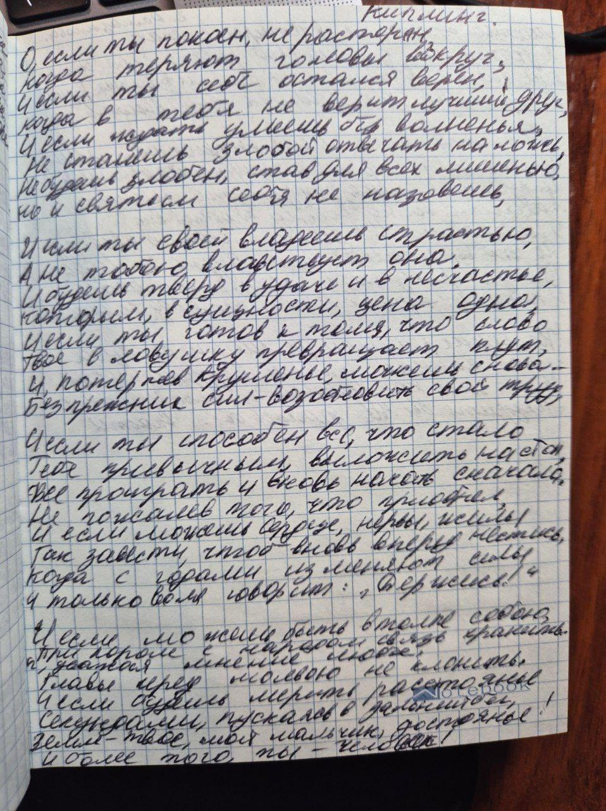
Reference
киплинг о если ты спокоен не растерян когда теряют головы вокруг и если ты себе остался верен когда в тебя не верит лучший друг и если ждать умеешь без волненья не станешь злобой отвечать на ложь не будешь злобен став для всех мишенью но и святым себя не назовешь и если ты своей владеешь страстью а не тобою властвует она и будешь тверд в удаче и в несчастье которым в сущности цена одна и если ты готов к тому что слово твое в ловушку превращает плут и потерпев крушенье можешь снова без прежних сил возобновить свой труд и если ты способен все что стало тебе привычным выложить на стол все проиграть и вновь начать сначала не пожалев того что приобрел и если можешь сердце нервы жилы так завести чтобы вперед нестись когда с годами изменяют силы и только воля говорит держись и если можешь быть в толпе собою при короле с народом связь хранить и уважая мнение любое главы перед молвою не клонить и если будешь мерить расстоянье секундами пускаясь в дальний бег земля твое мой мальчик достоянье и более того ты человек
Hypothesis
UL jet Wie ACR, Mel, Даа if РУ
г LG rob ft 40772 г 4.724 22%
би aan Lhe | Hrmteve? ес
y W77 7.74 PA y2é АР. ACE BLA РА ety UL, я
< ем вы АСАН CA ве м
Le обе cf р САНЯ (tp ont,
tive diced
Wi деи АР HAE, faded a2 РЕДКО
кф 64 барак | COM eh AG elt l,
Y bites ede fete НЫ Я ATES LO
Bee, Livy tf 2D eee,
UZ, ptt A. bify # ge Ub therlettbe,
(CZ Plies, Yipee! OE LOZ
Me AEG, ty? р tnd АИ
7 OEY bythe ip Cele, 2227,
г: bond А РЕЯ ИА LABE—
АСИ. ПМР Cb age
ее it id BOOP AEE 2 “Hyg
ACO tte и РА 7 CAF Ll, WHO СРР
7/72 2224 777727272 Ei zoveiane ей,
VEL 4 72727474 род» Karta Cele 7272
Hi 20 ай ее, РА | Gace жа
7742272797222 iif ‘Pe, bt 2157777
[a fey, wade bec whe Lied tif т aaa
a C\ 2772222229 Leg се а
Poa KE bb gb fue? Ogg ence! *
ИУ
п: bee ое СК Ра
р, пореае-
Bone [222274
CHB
as два,
fot eck СОРИ, “ee
ae wey ¢ ас <
ВН Я ty —
Lie, г не, AL |
Alignment
[+UL]
[+jet]
[+Wie]
[+ACR,]
[+Mel,]
[+Даа]
[+if]
[+РУ]
[+г]
[+LG]
[+rob]
[+ft]
[+40772]
[+г]
[+4.724]
[+22%]
[+би]
[+aan]
[+Lhe]
[+|]
[+Hrmteve?]
[+ес]
[+y]
[+W77]
[+7.74]
[+PA]
[киплинг → y2é]
[о → АР.]
[если → ACE]
[ты → BLA]
[спокоен → РА]
[не → ety]
[растерян → UL,]
[когда → я]
[теряют → <]
[головы → ем]
[вокруг → вы]
[и → АСАН]
[если → CA]
[ты → ве]
[себе → м]
[остался → Le]
[верен → обе]
[когда → cf]
[в → р]
[тебя → САНЯ]
[не → (tp]
[верит → ont,]
[лучший → tive]
[друг → diced]
[и → Wi]
[если → деи]
[ждать → АР]
[умеешь → HAE,]
[без → faded]
[волненья → a2]
[не → РЕДКО]
[станешь → кф]
[злобой → 64]
[отвечать → барак]
[на → |]
[ложь → COM]
[не → eh]
[будешь → AG]
[злобен → elt]
[став → l,]
[для → Y]
[всех → bites]
[мишенью → ede]
[но → fete]
[и → НЫ]
[святым → Я]
[себя → ATES]
[не → LO]
[назовешь → Bee,]
[и → Livy]
[если → tf]
[ты → 2D]
[своей → eee,]
[владеешь → UZ,]
[страстью → ptt]
[а → A.]
[не → bify]
[тобою → #]
[властвует → ge]
[она → Ub]
[и → therlettbe,]
[будешь → (CZ]
[тверд → Plies,]
[в → Yipee!]
[удаче → OE]
[и → LOZ]
[в → Me]
[несчастье → AEG,]
[которым → ty?]
[в → р]
[сущности → tnd]
[цена → АИ]
[одна → 7]
[и → OEY]
[если → bythe]
[ты → ip]
[готов → Cele,]
[к → 2227,]
[тому → г:]
[что → bond]
[слово → А]
[твое → РЕЯ]
[в → ИА]
[ловушку → LABE—]
[превращает → АСИ.]
[плут → ПМР]
[и → Cb]
[потерпев → age]
[крушенье → ее]
[можешь → it]
[снова → id]
[без → BOOP]
[прежних → AEE]
[сил → 2]
[возобновить → “Hyg]
[свой → ACO]
[труд → tte]
и
[+РА]
[если → 7]
[ты → CAF]
[способен → Ll,]
[все → WHO]
[что → СРР]
[стало → 7/72]
[тебе → 2224]
[привычным → 777727272]
[выложить → Ei]
[на → zoveiane]
[стол → ей,]
[все → VEL]
[проиграть → 4]
[и → 72727474]
[вновь → род»]
[начать → Karta]
[сначала → Cele]
[не → 7272]
[пожалев → Hi]
[того → 20]
[что → ай]
[приобрел → ее,]
[и → РА]
[если → |]
[можешь → Gace]
[сердце → жа]
[нервы → 7742272797222]
[жилы → iif]
[так → ‘Pe,]
[завести → bt]
[чтобы → 2157777]
[вперед → [a]
[нестись → fey,]
[когда → wade]
[с → bec]
[годами → whe]
[изменяют → Lied]
[силы → tif]
[и → т]
[только → aaa]
[воля → a]
[говорит → C\]
[держись → 2772222229]
[и → Leg]
[если → се]
[можешь → а]
[быть → Poa]
[в → KE]
[толпе → bb]
[собою → gb]
[при → fue?]
[короле → Ogg]
[с → ence!]
[народом → *]
[связь → ИУ]
[хранить → п:]
[и → bee]
[уважая → ое]
[мнение → СК]
[любое → Ра]
[главы → р,]
[перед → пореае-]
[молвою → Bone]
[не → [222274]
[клонить → CHB]
[и → as]
[если → два,]
[будешь → fot]
[мерить → eck]
[расстоянье → СОРИ,]
[секундами → “ee]
[пускаясь → ae]
[в → wey]
[дальний → ¢]
[бег → ас]
[земля → <]
[твое → ВН]
[мой → Я]
[мальчик → ty]
[достоянье → —]
[и → Lie,]
[более → г]
[того → не,]
[ты → AL]
[человек → |]
mws-1078-277f3a9ee996
Status: ocr_error
CER: 0.8521
WER: 0.9699
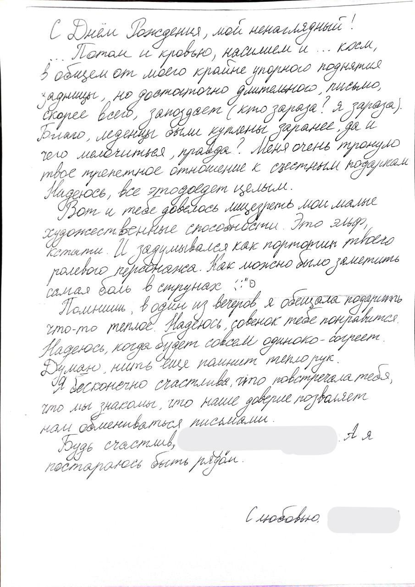
Reference
с днем рождения мой ненаглядный потом и кровью насилием и кхм в общем от моего крайне упорного поднятия задницы но достаточно длительного письмо скорее всего запоздает кто зараза я зараза благо леденцы были куплены заранее да и чего мелочиться правда меня очень тронуло твое трепетное отношение к съестным подаркам надеюсь все это доедет целым вот и тебе довелось лицезреть мои малые художественные способности это эльф кстати и задумывался как портотип твоего ролевого персонажа как можно было заметить самая боль в струнах помнишь в один из вечеров я обещала подарить что то теплое надеюсь совенок тебе понравится надеюсь когда будет совсем одиноко согреет думаю нить еще помнит тепло рук я бесконечно счастлива что повстречала тебя что мы знакомы что наше доверие позволяет нам обмениваться письмами будь счастлив а я постараюсь быть рядом с любовью
Hypothesis
‚.. Jaman в до, Hilti И... КИ,
CK CZ
Fa ape ve (imagen yg?)
Релае, Le ре ДРИ ffl, We |
wo » in ом Рриенумо
р ие РОМ © ДИАНЫ поем
syponeecbepefaee Cro uu Jono РР
E mane. Д Jt uebales Вар VG рее
£ fgg, Te dios
7 a
dno-"e
Ly bape, ив аи РИА fel.
Я dacworccno Ceacralide, WO ревела ess,
yo dist, qpiacoite, (to Halil popbasdirr
Had barscy ПРА
Page ре, A я
MOCO AOC Suir as
lL wodbohueo
Alignment
[-с]
[-днем]
[-рождения]
[-мой]
[-ненаглядный]
[-потом]
[-и]
[-кровью]
[-насилием]
[и → ‚..]
[кхм → Jaman]
в
[-общем]
[-от]
[-моего]
[-крайне]
[-упорного]
[-поднятия]
[-задницы]
[-но]
[-достаточно]
[-длительного]
[-письмо]
[-скорее]
[-всего]
[-запоздает]
[-кто]
[-зараза]
[-я]
[-зараза]
[-благо]
[-леденцы]
[-были]
[-куплены]
[-заранее]
[да → до,]
[и → Hilti]
[чего → И...]
[мелочиться → КИ,]
[правда → CK]
[меня → CZ]
[очень → Fa]
[тронуло → ape]
[твое → ve]
[трепетное → (imagen]
[отношение → yg?)]
[к → Релае,]
[съестным → Le]
[подаркам → ре]
[надеюсь → ДРИ]
[все → ffl,]
[это → We]
[доедет → |]
[целым → wo]
[вот → »]
[и → in]
[тебе → ом]
[довелось → Рриенумо]
[лицезреть → р]
[мои → ие]
[малые → РОМ]
[художественные → ©]
[способности → ДИАНЫ]
[это → поем]
[эльф → syponeecbepefaee]
[кстати → Cro]
[и → uu]
[задумывался → Jono]
[как → РР]
[портотип → E]
[твоего → mane.]
[ролевого → Д]
[персонажа → Jt]
[как → uebales]
[можно → Вар]
[было → VG]
[заметить → рее]
[самая → £]
[боль → fgg,]
[в → Te]
[струнах → dios]
[помнишь → 7]
[в → a]
[один → dno-"e]
[из → Ly]
[вечеров → bape,]
[я → ив]
[обещала → аи]
[подарить → РИА]
[что → fel.]
[то → Я]
[теплое → dacworccno]
[надеюсь → Ceacralide,]
[совенок → WO]
[тебе → ревела]
[понравится → ess,]
[надеюсь → yo]
[когда → dist,]
[будет → qpiacoite,]
[совсем → (to]
[одиноко → Halil]
[согреет → popbasdirr]
[думаю → Had]
[нить → barscy]
[еще → ПРА]
[помнит → Page]
[тепло → ре,]
[рук → A]
я
[-бесконечно]
[-счастлива]
[-что]
[-повстречала]
[-тебя]
[-что]
[-мы]
[-знакомы]
[-что]
[-наше]
[-доверие]
[-позволяет]
[-нам]
[-обмениваться]
[-письмами]
[-будь]
[-счастлив]
[-а]
[я → MOCO]
[постараюсь → AOC]
[быть → Suir]
[рядом → as]
[с → lL]
[любовью → wodbohueo]
mws-1083-3ceedfa0056c
Status: ocr_error
CER: 0.8491
WER: 0.9924
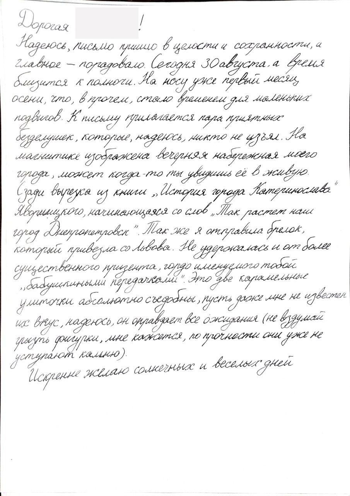
Reference
дорогая надеюсь письмо пришло в целости и сохранности и главное порадовало сегодня 30 августа а время близится к полночи на носу уже первый месяц осени что впрочем стало временем для маленьких подвигов к письму прилагается пара приятных безделушек которые надеюсь никто не изъял на магнитике изображена вечерняя набережная моего города может когда то ты увидишь ее в живую сзади вырезка из книги история города катеринослава яворницкого начинающаяся со слов так растет наш город днепропетровск так же я отправила брелок который привезла со львова не удержалась и от более существенного призента гордо именуемого тобой бабушкиными передачками это две карамельные улиточки абсолютно съедобны пусть даже мне не известен их вкус надеюсь он оправдает все ожидания не вздумай грызть фигурки мне кажется по прочности они уже не уступают камню искренне желаю солнечных и веселых дней
Hypothesis
4p
G21OCE, (UAC LLO & GALLI Ue CORPAMM OT,
re с ародуе бла ео SOabycpra. a Gees
бета х noun, Hea Hoey YHce nepbnit 224
OCb#eL, wo, блоге, срам? еле а ра
despasgeeteh, homepute, magiztes, поете He и Hea
соленииетиее oS tae Форли Madyumiad СРР
typoge › ноте поедете (st убив eb В ме
С 24 Lo Aa w Kyte » тия Wega
;
24 Ey G Е ZO / L
YO adcaasoriio crepodois, yet рее ate He сел
Wa bye, Hagen, HW oypabgren bee oncugai (ke Sypyeaie
Alignment
[-дорогая]
[-надеюсь]
[-письмо]
[-пришло]
[-в]
[-целости]
[-и]
[-сохранности]
[-и]
[-главное]
[-порадовало]
[-сегодня]
[-30]
[-августа]
[-а]
[-время]
[-близится]
[-к]
[-полночи]
[-на]
[-носу]
[-уже]
[-первый]
[-месяц]
[-осени]
[-что]
[-впрочем]
[-стало]
[-временем]
[-для]
[-маленьких]
[-подвигов]
[-к]
[-письму]
[-прилагается]
[-пара]
[-приятных]
[-безделушек]
[-которые]
[-надеюсь]
[-никто]
[-не]
[-изъял]
[-на]
[магнитике → 4p]
[изображена → G21OCE,]
[вечерняя → (UAC]
[набережная → LLO]
[моего → &]
[города → GALLI]
[может → Ue]
[когда → CORPAMM]
[то → OT,]
[ты → re]
[увидишь → с]
[ее → ародуе]
[в → бла]
[живую → ео]
[сзади → SOabycpra.]
[вырезка → a]
[из → Gees]
[книги → бета]
[история → х]
[города → noun,]
[катеринослава → Hea]
[яворницкого → Hoey]
[начинающаяся → YHce]
[со → nepbnit]
[слов → 224]
[так → OCb#eL,]
[растет → wo,]
[наш → блоге,]
[город → срам?]
[днепропетровск → еле]
[так → а]
[же → ра]
[я → despasgeeteh,]
[отправила → homepute,]
[брелок → magiztes,]
[который → поете]
[привезла → He]
[со → и]
[львова → Hea]
[не → соленииетиее]
[удержалась → oS]
[и → tae]
[от → Форли]
[более → Madyumiad]
[существенного → СРР]
[призента → typoge]
[гордо → ›]
[именуемого → ноте]
[тобой → поедете]
[бабушкиными → (st]
[передачками → убив]
[это → eb]
[две → В]
[карамельные → ме]
[улиточки → С]
[абсолютно → 24]
[съедобны → Lo]
[пусть → Aa]
[даже → w]
[мне → Kyte]
[не → »]
[известен → тия]
[их → Wega]
[вкус → ;]
[надеюсь → 24]
[он → Ey]
[оправдает → G]
[все → Е]
[ожидания → ZO]
[не → /]
[вздумай → L]
[грызть → YO]
[фигурки → adcaasoriio]
[мне → crepodois,]
[кажется → yet]
[по → рее]
[прочности → ate]
[они → He]
[уже → сел]
[не → Wa]
[уступают → bye,]
[камню → Hagen,]
[искренне → HW]
[желаю → oypabgren]
[солнечных → bee]
[и → oncugai]
[веселых → (ke]
[дней → Sypyeaie]
mws-1085-d78d87ac803c
Status: ocr_error
CER: 0.8256
WER: 1.0708
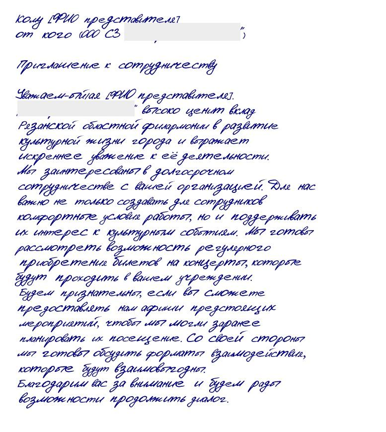
Reference
кому фио представителя от кого ооо сз приглашение к сотрудничеству уважаем ый ая фио представителя высоко ценит вклад рязанской областной филармонии в развитие культурной жизни города и выражает искреннее уважение к ее деятельности мы заинтересованы в долгосрочном сотрудничестве с вашей организацией для нас важно не только создавать для сотрудников комфортные условия работы но и поддерживать их интерес к культурным событиям мы готовы рассмотреть возможность регулярного приобретения билетов на концерты которые будут проходить в вашем учреждении будем признательны если вы сможете предоставлять нам афиши предстоящих мероприятий чтобы мы могли заранее планировать их посещение со своей стороны мы готовы обсудить форматы взаимодействия которые будут взаимовыгодны благодарим вас за внимание и будем рады возможности продолжить диалог
Hypothesis
hog [FU npegerididnesl
on! woo a C3 , )
Uppvredat(e Hue © compyguree cry
komaca-r7nijae [FU предста тела,
| - * Brow ценит бу
Peganctott CbaaCtnnolh gppuisypicctiar 6 pagttintre
т Hot We) 2Opopa uv bpamaenm
исррелнее еле. к ег = ИЕНОСИТЕ
Mr Banne pe CAME? $ ремегереено
coy с Quel oprampayuel, Rae wae
мен? We mossto содрали gue сотр”
MOLppgpVinEre gouOblie. PQECINE?, Ho © nopgeprthaine
Oh. итерес © IYAETYPHEAY CODE TITUhel, M67 гот
paceuiompern bogetione HOLME Pe eyeypnozo
ciperme tiie едете Wa кондер, петель
и” tepoxopiine b baited Yopenge nett
Буре npignatiedster, ес &7 cuomeme
APEPOCHIBALINE Hatt AGDIMIL MipeZCHIOLLEL UK
wccponpusrnin, 070057 MEP MODAL Bpuce
AhablippAMns их NOCe Lege Hire. Co се chapon:
cr Lorne? beygeané pp вание деталь,
womapere брт ао тгонят
Бега GC Za Gundqnnre Iygow рат
Вет носите MpapOtmrIme guator.
Alignment
[+hog]
[+[FU]
[+npegerididnesl]
[+on!]
[+woo]
[+a]
[кому → C3]
[фио → ,]
[представителя → )]
[от → Uppvredat(e]
[кого → Hue]
[ооо → ©]
[сз → compyguree]
[приглашение → cry]
[к → komaca-r7nijae]
[сотрудничеству → [FU]
[уважаем → предста]
[ый → тела,]
[ая → |]
[фио → -]
[представителя → *]
[высоко → Brow]
ценит
[+бу]
[вклад → Peganctott]
[рязанской → CbaaCtnnolh]
[областной → gppuisypicctiar]
[филармонии → 6]
[в → pagttintre]
[развитие → т]
[культурной → Hot]
[жизни → We)]
[города → 2Opopa]
[и → uv]
[выражает → bpamaenm]
[искреннее → исррелнее]
[уважение → еле.]
к
[+ег]
[+=]
[+ИЕНОСИТЕ]
[ее → Mr]
[деятельности → Banne]
[мы → pe]
[заинтересованы → CAME?]
[в → $]
[долгосрочном → ремегереено]
[сотрудничестве → coy]
с
[+Quel]
[+oprampayuel,]
[+Rae]
[+wae]
[+мен?]
[+We]
[вашей → mossto]
[организацией → содрали]
[для → gue]
[нас → сотр”]
[важно → MOLppgpVinEre]
[не → gouOblie.]
[только → PQECINE?,]
[создавать → Ho]
[для → ©]
[сотрудников → nopgeprthaine]
[комфортные → Oh.]
[условия → итерес]
[работы → ©]
[но → IYAETYPHEAY]
[и → CODE]
[поддерживать → TITUhel,]
[их → M67]
[интерес → гот]
[к → paceuiompern]
[культурным → bogetione]
[событиям → HOLME]
[мы → Pe]
[готовы → eyeypnozo]
[рассмотреть → ciperme]
[возможность → tiie]
[регулярного → едете]
[приобретения → Wa]
[билетов → кондер,]
[на → петель]
[концерты → и”]
[которые → tepoxopiine]
[будут → b]
[проходить → baited]
[в → Yopenge]
[вашем → nett]
[учреждении → Буре]
[будем → npignatiedster,]
[признательны → ес]
[если → &7]
[вы → cuomeme]
[сможете → APEPOCHIBALINE]
[предоставлять → Hatt]
[нам → AGDIMIL]
[афиши → MipeZCHIOLLEL]
[предстоящих → UK]
[мероприятий → wccponpusrnin,]
[чтобы → 070057]
[мы → MEP]
[могли → MODAL]
[заранее → Bpuce]
[планировать → AhablippAMns]
их
[+NOCe]
[+Lege]
[+Hire.]
[+Co]
[посещение → се]
[со → chapon:]
[своей → cr]
[стороны → Lorne?]
[мы → beygeané]
[готовы → pp]
[обсудить → вание]
[форматы → деталь,]
[взаимодействия → womapere]
[которые → брт]
[будут → ао]
[взаимовыгодны → тгонят]
[благодарим → Бега]
[вас → GC]
[за → Za]
[внимание → Gundqnnre]
[и → Iygow]
[будем → рат]
[рады → Вет]
[возможности → носите]
[продолжить → MpapOtmrIme]
[диалог → guator.]
mws-111-284c9b160131
Status: ocr_error
CER: 0.0166
WER: 0.0458
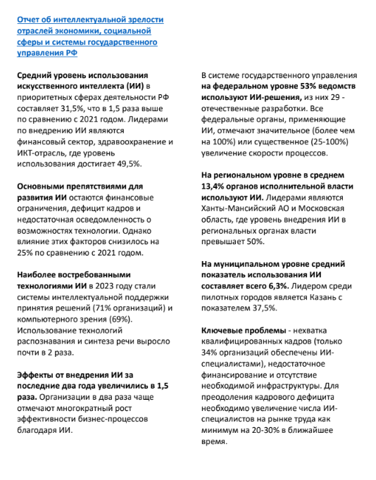
Reference
отчет об интеллектуальной зрелости отраслей экономики социальной сферы и системы государственного управления рф средний уровень использования искусственного интеллекта ии в приоритетных сферах деятельности рф составляет 31 5 что в 1 5 раза выше по сравнению с 2021 годом лидерами по внедрению ии являются финансовый сектор здравоохранение и икт отрасль где уровень использования достигает 49 5 основными препятствиями для развития ии остаются финансовые ограничения дефицит кадров и недостаточная осведомленность о возможностях технологии однако влияние этих факторов снизилось на 25 по сравнению с 2021 годом наиболее востребованными технологиями ии в 2023 году стали системы интеллектуальной поддержки принятия решений 71 организаций и компьютерного зрения 69 использование технологий распознавания и синтеза речи выросло почти в 2 раза эффекты от внедрения ии за последние два года увеличились в 1 5 раза организации в два раза чаще отмечают многократный рост эффективности бизнес процессов благодаря ии в системе государственного управления на федеральном уровне 53 ведомств используют ии решения из них 29 отечественные разработки все федеральные органы применяющие ии отмечают значительное более чем на 100 или существенное 25 100 увеличение скорости процессов на региональном уровне в среднем 13 4 органов исполнительной власти используют ии лидерами являются ханты мансийский ао и московская область где уровень внедрения ии в региональных органах власти превышает 50 на муниципальном уровне средний показатель использования ии составляет всего 6 3 лидером среди пилотных городов является казань с показателем 37 5 ключевые проблемы нехватка квалифицированных кадров только 34 организаций обеспечены ии специалистами недостаточное финансирование и отсутствие необходимой инфраструктуры для преодоления кадрового дефицита необходимо увеличение числа ии специалистов на рынке труда как минимум на 20 30 в ближайшее время
Hypothesis
отчет 06 интеллектуальной зрелости
‘отраслей экономики, социальной
и системы, нного
управления РФ
Средний уровень использования
искусственного интеллекта (ИИ) в
приоритетных сферах деятельности PO
составляет 31,5%, что в 1,5 pasa выше
по сравнению с 2021 годом. Лидерами
повнедрению ИИ являются
финансовый сектор, здравоохранение и
ИКТ-отрасль, где уровень
использования достигает 49,5%.
Основными препятствиями для
развития ИИ остаются финансовые:
ограничения, дефицит кадров и
недостаточная осведомленность о
возможностях технологии. Однако.
влияние этих факторов снизилось на
25% по сравнению с 2021 годом.
Наиболее востребованными
технологиями ИИ в 2023 году стали.
системы интеллектуальной поддержки
принятия решений (71% организаций) и
компьютерного зрения (69%).
Использование технологий
распознавания и синтеза речи выросло.
почти в2 раза.
эффекты от внедрения ИИ за
последние два года увеличились в 1,5
раза. Организации в два раза чаще
отмечают многократный рост
эффективности бизнес-процессов
благодаря ИИ.
В системе государственного управления
на федеральном уровне 53% ведомств
‘используют ИИ-решения, из них 29 -
отечественные разработки. Все
федеральные органы, применяющие
ИИ, отмечают значительное (более чем
на 100%) или существенное (25-10%)
увеличение скорости процессов.
Ha региональном уровне в среднем,
13,4% органов исполнительной власти
‘используют ИИ. Лидерами являются
Ханты-Мансийский AO и Московская
область, где уровень внедрения ИИ в
региональных органах власти,
превышает 50%.
на муниципальном уровне средний
показатель использования ИИ
составляет всего 6,3%. Лидером среди
пилотных городов является Казань с
показателем 37,5%.
Ключевые проблемы - нехватка
квалифицированных кадров (только
34% организаций обеспечены ИИ-
специалистами), недостаточное
финансирование и отсутствие
необходимой инфраструктуры. Для
преодоления кадрового дефицита
необходимо увеличение числа ИИ-
специалистов на рынке труда как.
минимум на 20-30% в ближайшее
время,
Alignment
отчет
[об → 06]
интеллектуальной
зрелости
[отраслей → ‘отраслей]
[экономики → экономики,]
социальной
[-сферы]
и
[системы → системы,]
[государственного → нного]
управления
[рф → РФ]
[средний → Средний]
уровень
использования
искусственного
интеллекта
[ии → (ИИ)]
в
приоритетных
сферах
деятельности
[рф → PO]
составляет
[-31]
[5 → 31,5%,]
что
в
[-1]
[5 → 1,5]
[раза → pasa]
выше
по
сравнению
с
2021
[-годом]
[лидерами → годом.]
[по → Лидерами]
[внедрению → повнедрению]
[ии → ИИ]
являются
финансовый
[сектор → сектор,]
здравоохранение
и
[-икт]
[отрасль → ИКТ-отрасль,]
где
уровень
использования
достигает
[-49]
[5 → 49,5%.]
[основными → Основными]
препятствиями
для
развития
[ии → ИИ]
остаются
[финансовые → финансовые:]
[ограничения → ограничения,]
дефицит
кадров
и
недостаточная
осведомленность
о
возможностях
[технологии → технологии.]
[однако → Однако.]
влияние
этих
факторов
снизилось
на
[25 → 25%]
по
сравнению
с
2021
[годом → годом.]
[наиболее → Наиболее]
востребованными
технологиями
[ии → ИИ]
в
2023
году
[стали → стали.]
системы
интеллектуальной
поддержки
принятия
решений
[71 → (71%]
[организаций → организаций)]
и
компьютерного
зрения
[69 → (69%).]
[использование → Использование]
технологий
распознавания
и
синтеза
речи
[выросло → выросло.]
почти
[-в]
[2 → в2]
[раза → раза.]
эффекты
от
внедрения
[ии → ИИ]
за
последние
два
года
увеличились
в
[-1]
[5 → 1,5]
[раза → раза.]
[организации → Организации]
в
два
раза
чаще
отмечают
многократный
рост
эффективности
[-бизнес]
[процессов → бизнес-процессов]
благодаря
[ии → ИИ.]
[в → В]
системе
государственного
управления
на
федеральном
уровне
[53 → 53%]
ведомств
[-используют]
[ии → ‘используют]
[решения → ИИ-решения,]
из
них
29
[+-]
отечественные
[разработки → разработки.]
[все → Все]
федеральные
[органы → органы,]
применяющие
[ии → ИИ,]
отмечают
значительное
[более → (более]
чем
на
[100 → 100%)]
или
существенное
[-25]
[100 → (25-10%)]
увеличение
скорости
[процессов → процессов.]
[на → Ha]
региональном
уровне
в
[-среднем]
[13 → среднем,]
[4 → 13,4%]
органов
исполнительной
власти
[используют → ‘используют]
[ии → ИИ.]
[лидерами → Лидерами]
являются
[-ханты]
[мансийский → Ханты-Мансийский]
[ао → AO]
и
[московская → Московская]
[область → область,]
где
уровень
внедрения
[ии → ИИ]
в
региональных
органах
[власти → власти,]
превышает
[50 → 50%.]
на
муниципальном
уровне
средний
показатель
использования
[ии → ИИ]
составляет
всего
[-6]
[3 → 6,3%.]
[лидером → Лидером]
среди
пилотных
городов
является
[казань → Казань]
с
показателем
[37 → 37,5%.]
[5 → Ключевые]
[ключевые → проблемы]
[проблемы → -]
нехватка
квалифицированных
кадров
[только → (только]
[34 → 34%]
организаций
обеспечены
[ии → ИИ-]
[специалистами → специалистами),]
недостаточное
финансирование
и
отсутствие
необходимой
[инфраструктуры → инфраструктуры.]
[для → Для]
преодоления
кадрового
дефицита
необходимо
увеличение
числа
[ии → ИИ-]
специалистов
на
рынке
труда
[как → как.]
минимум
на
[-20]
[30 → 20-30%]
в
ближайшее
[время → время,]
mws-1129-cc46a6f7b2ba
Status: ocr_error
CER: 1.0000
WER: 1.0000
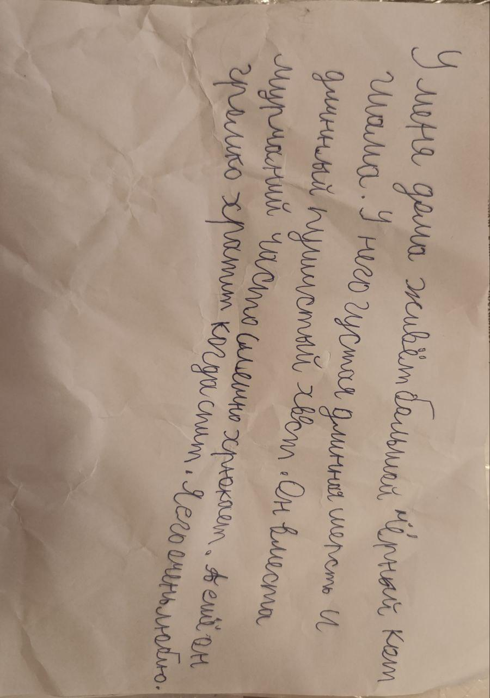
Reference
у меня дома живет большой черный кот шама у него густая длинная шерсть и длинный пушистый хвост он вместа мурчаний часто смешно хрюкает а еще он громко храпит когда спит я его очень люблю
Hypothesis
Alignment
[-у]
[-меня]
[-дома]
[-живет]
[-большой]
[-черный]
[-кот]
[-шама]
[-у]
[-него]
[-густая]
[-длинная]
[-шерсть]
[-и]
[-длинный]
[-пушистый]
[-хвост]
[-он]
[-вместа]
[-мурчаний]
[-часто]
[-смешно]
[-хрюкает]
[-а]
[-еще]
[-он]
[-громко]
[-храпит]
[-когда]
[-спит]
[-я]
[-его]
[-очень]
[-люблю]
mws-1140-84bb883fe960
Status: ocr_error
CER: 3.5840
WER: 5.7857
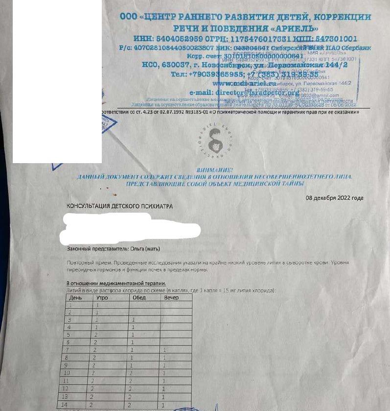
Reference
внимание данный документ содержит сведения в отношении несовершеннолетнего лица представляющие собой объект медицинской тайны
Hypothesis
№ |=
|: ООб«ЦцЕнтР РАННЕГО РАЗВИТИЯ ДЕТЕЙ, КОРРЕКЦИИ
РЕЧИ И ПОВЕДЕНИЯ «АРИЕЛЬ»
ИНН: 5404052959 ОГРН: 1175476017351 КИП: 547301001
'Р/с: 40702810844050025807 оаз0оа6ат. ‘бибирекй ВЕИЯ ПАО Сбербанк
Корр ИН ан
‘HCO, 680037, г. radia <a eo
И 14402
‘Ten: +78059: 5986; НОВ" se |
|
1
ЕР Ч
_ ДАННЫЙ ЛОКУМЕНТ СОДЕРЖИТ СВЕДЕНИЯ В ОТНОШЕНИИ НЕСОВЕРШЕННОЛЕТНЕГО ЛА
_ ПРЕЖАВАЯЮЩИЕ СОБОЙ ОБЪЕКТ МЕДИЦИНСКОЙ ТАЙНЫ
Dis у (08 декабря 2022 года
ЬТАЦИЯ ДЕТСКОГО ПСИХИАТРА
и Проведенные иоследозания указали на крайче Низкий уровень лития 8 скорое крови. Уровни
pons re почек 8 предела норы
енот re аби = 1S menu лозы:
Вед,
Alignment
[+№]
[+|=]
[+|:]
[+ООб«ЦцЕнтР]
[+РАННЕГО]
[+РАЗВИТИЯ]
[+ДЕТЕЙ,]
[+КОРРЕКЦИИ]
[+РЕЧИ]
[+И]
[+ПОВЕДЕНИЯ]
[+«АРИЕЛЬ»]
[+ИНН:]
[+5404052959]
[+ОГРН:]
[+1175476017351]
[+КИП:]
[+547301001]
[+'Р/с:]
[+40702810844050025807]
[+оаз0оа6ат.]
[+‘бибирекй]
[+ВЕИЯ]
[+ПАО]
[+Сбербанк]
[+Корр]
[+ИН]
[+ан]
[+‘HCO,]
[+680037,]
[+г.]
[+radia]
[+<a]
[+eo]
[+И]
[+14402]
[+‘Ten:]
[++78059:]
[+5986;]
[+НОВ"]
[+se]
[+|]
[+|]
[+1]
[+ЕР]
[+Ч]
[+_]
[+ДАННЫЙ]
[+ЛОКУМЕНТ]
[+СОДЕРЖИТ]
[+СВЕДЕНИЯ]
[+В]
[+ОТНОШЕНИИ]
[+НЕСОВЕРШЕННОЛЕТНЕГО]
[+ЛА]
[+_]
[+ПРЕЖАВАЯЮЩИЕ]
[+СОБОЙ]
[+ОБЪЕКТ]
[+МЕДИЦИНСКОЙ]
[+ТАЙНЫ]
[+Dis]
[+у]
[+(08]
[+декабря]
[+2022]
[+года]
[+ЬТАЦИЯ]
[+ДЕТСКОГО]
[+ПСИХИАТРА]
[+и]
[+Проведенные]
[+иоследозания]
[+указали]
[+на]
[+крайче]
[+Низкий]
[+уровень]
[+лития]
[+8]
[+скорое]
[+крови.]
[+Уровни]
[внимание → pons]
[данный → re]
[документ → почек]
[содержит → 8]
[сведения → предела]
[в → норы]
[отношении → енот]
[несовершеннолетнего → re]
[лица → аби]
[представляющие → =]
[собой → 1S]
[объект → menu]
[медицинской → лозы:]
[тайны → Вед,]
mws-1145-717d0ee53887
Status: ocr_error
CER: 0.3891
WER: 0.6970
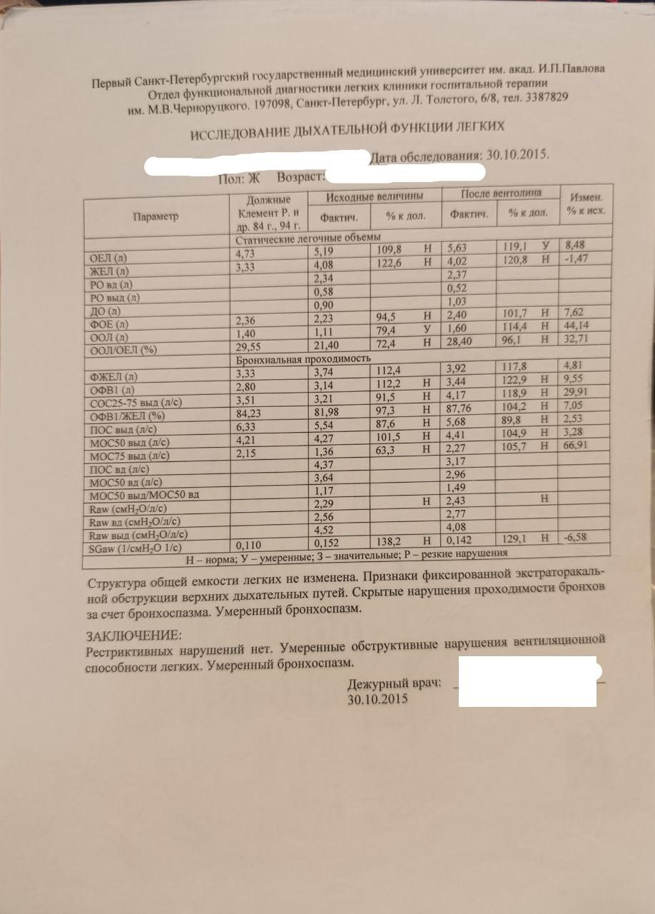
Reference
первый санкт петербургский государственный медицинский университет им акад и п павлова отдел функциональной диагностики легких клиники госпитальной терапии им м в черноруцкого 197098 санкт петербург ул л толстого 6 8 тел 3387829 исследование дыхательной функции легких дата обследования 30 10 2015 пол ж возраст параметр должные исходные величины после вентолина измен клемент р и др 84 г 94 г фактич в дол фактич в дол статические легочные объемы оел л 4 73 5 18 109 8 н 5 63 119 1 у 8 48 жел л 3 33 4 08 122 6 н 4 02 120 8 н 1 47 ро вд л 2 54 ро выд л 2 64 до л 0 50 0 93 186 0 н 0 82 164 0 н 11 83 фое л 2 36 2 54 107 6 н 2 40 101 7 н 5 51 оол 49 9 49 0 98 2 н 42 6 96 1 н 44 14 бронхиальная проходимость фжел л 3 33 3 74 112 4 н 3 92 117 8 у 4 81 офв1 л 2 84 2 14 75 4 3 2 47 87 0 у 15 42 сос25 75 выд л с 3 14 1 92 61 1 3 2 43 77 4 у 26 56 офв1 жел 84 23 51 98 87 5 3 62 9 61 4 3 21 15 пос выд л с 5 34 3 87 72 5 3 4 41 82 6 у 13 95 мос50 выд л с 3 64 1 47 40 4 3 2 43 66 7 у 65 31 мос75 выд л с 2 15 0 34 15 8 3 0 41 19 1 3 20 59 пос вд л с 3 47 мос50 вд л с 3 64 мос50 выд мос50 вд 2 17 1 49 raw смh2o л с 2 29 2 43 н raw вд смh2o л с 2 56 2 77 н raw выд смh2o л с 2 02 2 08 н sgaw 1 смh2o 1 с 0 110 0 152 138 2 н 0 142 129 1 н 6 58 н норма у умеренные 3 значительные p резкие нарушения структура общей емкости легких не изменена признаки фиксированной экстраторакальной обструкции верхних дыхательных путей скрытые нарушения проходимости бронхов за счет бронхоспазма умеренный бронхоспазм заключение рестриктивных нарушений нет умеренные обструктивные нарушения вентиляционной способности легких умеренный бронхоспазм дежурный врач 30 10 2015
Hypothesis
ре -- и. = д те нае
| государственный медицинский университет им. акад. И.П. Павлова
легких клиники госпитальной терапии
того, 6/8, тел, 3387829
Первый 'Санкт-Петербургски
Отдел функциональной диагностики 7
им. М В.Черноруцкого, 197098, Санкт-Петербург, ул. Л Tos
ИССЛЕДОВАНИЕ ДЫХАТ 'ЕЛЬНОЙ ФУНКЦИИ ЛЕГКИХ
Дата обследования: 30.10.2015.
Пол: Ж Возраст:
Ложные [ Исходныевеличииы _[ Послевентолина | измен
неее ме "| earn. | %x aon. | ann | % x 200 an Hex.
‘Crarmecxate легочные объемы ]
ЕЛ) 473 5,19 0 [563] 119,1_¥ [848
KEN (a) 333 4,08 726 [402 [1208 н | -1.47
POs) 2,34 227
PO вых (a) 0.58 0,52.
TO@), 0,90 1,03
ФЕ) 236 223 5 Ню Пл | 7.62
`ООЛ (a) 1,40. Lu 79,4 У [1.60 114,4_Н | 44,14 ]
`ООЛ/ОЕЛ (%) 29,55, 21,40 72,4 Н [28,40 96.1 н [3271
Бронхиальная проходимость
ФЖЕЛ (a) 3,33 3,74 112,4 3,92 117,8. 4,81
ОФВ] (x) 2,80. 3,14 112,2 Н | 3,44 122,9 Н [9.55
'С0С25-7$ выл (a/c) 3,51 3,21 91,5 Н [4,17 118,9 H | 29,91
`ОФВИЖЕЛ (%) 84,23 81,98 97,3 Н | 87,76 1042_Н [7.05
TIOC выд (a/c) 6,33 5,54 87,6 Н | 5,68 89,8 H [| 253
`МОС$50 выд (a/c) 421 427 101,5 Н [441 1049_Н | 3,28
MOC75 выд (a/c) 2,15 1,36. 63,3 Н | 227 105,7_Н | 66,91
[OC sa Gaic) 437 3,17
MOCSO вд (275) 3,64 2.96
`МОС50 выл/МОС50 Ba ГИУ 149
‘Raw (cmH;O/a/c) 2,29 H | 2,43 H
Raw ва (omH,O/a/6) 2.56 217
Raw выд (emH,O/w/c) 4,52 4,08
‘SGaw (ИсмН:О Ме) 0,110 0,152, 138,2. H [0,142 129,1 A | -6,58
Н поме; ¥ — умеренные: 3 = значительные; P— резкие нарушения
не изменена. Признаки фиксированной экстраторакаль-
Структура общей емкости легких
ния проходимости бронхов.
ной обструкции верхних дыхательных путей. Скрытые наруше!
за счет бронхоспазма. Умеренный ‘бронхоспазм.
ЗАКЛЮЧЕНИЕ:
Рестриктивных нарушений нет. `Умеренные обструктивные нарушения вентиляционной
способности легких. Умеренный бронхоспазм,
Дежурный врач: _ é
30.10.2015
Alignment
[+ре]
[первый → --]
[санкт → и.]
[петербургский → =]
[государственный → д]
[медицинский → те]
[университет → нае]
[им → |]
[акад → государственный]
[и → медицинский]
[п → университет]
[павлова → им.]
[отдел → акад.]
[функциональной → И.П.]
[диагностики → Павлова]
легких
клиники
госпитальной
терапии
[-им]
[-м]
[-в]
[-черноруцкого]
[-197098]
[-санкт]
[-петербург]
[-ул]
[-л]
[-толстого]
[6 → того,]
[8 → 6/8,]
[тел → тел,]
3387829
[-исследование]
[-дыхательной]
[-функции]
[-легких]
[-дата]
[-обследования]
[-30]
[-10]
[-2015]
[-пол]
[-ж]
[-возраст]
[-параметр]
[-должные]
[-исходные]
[-величины]
[-после]
[-вентолина]
[-измен]
[-клемент]
[-р]
[-и]
[-др]
[-84]
[-г]
[-94]
[г → Первый]
[фактич → 'Санкт-Петербургски]
[в → Отдел]
[дол → функциональной]
[фактич → диагностики]
[в → 7]
[дол → им.]
[статические → М]
[легочные → В.Черноруцкого,]
[объемы → 197098,]
[оел → Санкт-Петербург,]
[л → ул.]
[4 → Л]
[73 → Tos]
[5 → ИССЛЕДОВАНИЕ]
[18 → ДЫХАТ]
[109 → 'ЕЛЬНОЙ]
[8 → ФУНКЦИИ]
[н → ЛЕГКИХ]
[5 → Дата]
[63 → обследования:]
[119 → 30.10.2015.]
[1 → Пол:]
[у → Ж]
[8 → Возраст:]
[48 → Ложные]
[жел → []
[л → Исходныевеличииы]
[3 → _[]
[33 → Послевентолина]
[4 → |]
[08 → измен]
[122 → неее]
[6 → ме]
[н → "|]
[4 → earn.]
[02 → |]
[120 → %x]
[8 → aon.]
[н → |]
[1 → ann]
[47 → |]
[ро → %]
[вд → x]
[л → 200]
[2 → an]
[54 → Hex.]
[ро → ‘Crarmecxate]
[выд → легочные]
[л → объемы]
[2 → ]]
[64 → ЕЛ)]
[до → 473]
[л → 5,19]
0
[50 → [563]]
[0 → 119,1_¥]
[93 → [848]
[186 → KEN]
[0 → (a)]
[н → 333]
[0 → 4,08]
[82 → 726]
[164 → [402]
[0 → [1208]
н
[11 → |]
[83 → -1.47]
[фое → POs)]
[л → 2,34]
[2 → 227]
[36 → PO]
[2 → вых]
[54 → (a)]
[107 → 0.58]
[6 → 0,52.]
[н → TO@),]
[2 → 0,90]
[40 → 1,03]
[101 → ФЕ)]
[7 → 236]
[н → 223]
5
[-51]
[-оол]
[-49]
[9 → Ню]
[49 → Пл]
[0 → |]
[98 → 7.62]
[2 → `ООЛ]
[н → (a)]
[42 → 1,40.]
[6 → Lu]
[96 → 79,4]
[1 → У]
[н → [1.60]
[44 → 114,4_Н]
[14 → |]
[бронхиальная → 44,14]
[проходимость → ]]
[фжел → `ООЛ/ОЕЛ]
[л → (%)]
[3 → 29,55,]
[33 → 21,40]
[3 → 72,4]
[74 → Н]
[112 → [28,40]
[4 → 96.1]
н
[-3]
[-92]
[-117]
[-8]
[-у]
[-4]
[-81]
[-офв1]
[-л]
[-2]
[-84]
[-2]
[-14]
[-75]
[4 → [3271]
[3 → Бронхиальная]
[2 → проходимость]
[47 → ФЖЕЛ]
[87 → (a)]
[0 → 3,33]
[у → 3,74]
[15 → 112,4]
[42 → 3,92]
[сос25 → 117,8.]
[75 → 4,81]
[выд → ОФВ]]
[л → (x)]
[с → 2,80.]
[3 → 3,14]
[14 → 112,2]
[1 → Н]
[92 → |]
[61 → 3,44]
[1 → 122,9]
[3 → Н]
[2 → [9.55]
[43 → 'С0С25-7$]
[77 → выл]
[4 → (a/c)]
[у → 3,51]
[26 → 3,21]
[56 → 91,5]
[офв1 → Н]
[жел → [4,17]
[84 → 118,9]
[23 → H]
[51 → |]
[98 → 29,91]
[87 → `ОФВИЖЕЛ]
[5 → (%)]
[3 → 84,23]
[62 → 81,98]
[9 → 97,3]
[61 → Н]
[4 → |]
[3 → 87,76]
[21 → 1042_Н]
[15 → [7.05]
[пос → TIOC]
выд
[-л]
[-с]
[-5]
[-34]
[-3]
[87 → (a/c)]
[72 → 6,33]
[5 → 5,54]
[3 → 87,6]
[4 → Н]
[41 → |]
[82 → 5,68]
[6 → 89,8]
[у → H]
[13 → [|]
[95 → 253]
[мос50 → `МОС$50]
выд
[-л]
[-с]
[-3]
[-64]
[-1]
[-47]
[-40]
[4 → (a/c)]
[3 → 421]
[2 → 427]
[43 → 101,5]
[66 → Н]
[7 → [441]
[у → 1049_Н]
[65 → |]
[31 → 3,28]
[мос75 → MOC75]
выд
[-л]
[-с]
[-2]
[-15]
[-0]
[-34]
[-15]
[-8]
[-3]
[-0]
[-41]
[-19]
[-1]
[-3]
[-20]
[59 → (a/c)]
[пос → 2,15]
[вд → 1,36.]
[л → 63,3]
[с → Н]
[3 → |]
[47 → 227]
[мос50 → 105,7_Н]
[вд → |]
[л → 66,91]
[с → [OC]
[3 → sa]
[64 → Gaic)]
[мос50 → 437]
[выд → 3,17]
[мос50 → MOCSO]
вд
[-2]
[-17]
[-1]
[49 → (275)]
[raw → 3,64]
[смh2o → 2.96]
[л → `МОС50]
[с → выл/МОС50]
[2 → Ba]
[29 → ГИУ]
[2 → 149]
[43 → ‘Raw]
[н → (cmH;O/a/c)]
[raw → 2,29]
[вд → H]
[смh2o → |]
[л → 2,43]
[с → H]
[2 → Raw]
[56 → ва]
[2 → (omH,O/a/6)]
[77 → 2.56]
[н → 217]
[raw → Raw]
выд
[-смh2o]
[-л]
[-с]
[-2]
[-02]
[2 → (emH,O/w/c)]
[08 → 4,52]
[н → 4,08]
[sgaw → ‘SGaw]
[1 → (ИсмН:О]
[смh2o → Ме)]
[1 → 0,110]
[с → 0,152,]
[0 → 138,2.]
[110 → H]
[0 → [0,142]
[152 → 129,1]
[138 → A]
[2 → |]
[н → -6,58]
[0 → Н]
[142 → поме;]
[129 → ¥]
[1 → —]
[н → умеренные:]
[6 → 3]
[58 → =]
[н → значительные;]
[норма → P—]
[у → резкие]
[умеренные → нарушения]
[3 → не]
[значительные → изменена.]
[p → Признаки]
[резкие → фиксированной]
[нарушения → экстраторакаль-]
[структура → Структура]
общей
емкости
легких
[-не]
[изменена → ния]
[признаки → проходимости]
[фиксированной → бронхов.]
[экстраторакальной → ной]
обструкции
верхних
дыхательных
[-путей]
[-скрытые]
[нарушения → путей.]
[проходимости → Скрытые]
[бронхов → наруше!]
за
счет
[бронхоспазма → бронхоспазма.]
[умеренный → Умеренный]
[бронхоспазм → ‘бронхоспазм.]
[заключение → ЗАКЛЮЧЕНИЕ:]
[рестриктивных → Рестриктивных]
нарушений
[нет → нет.]
[умеренные → `Умеренные]
обструктивные
нарушения
вентиляционной
способности
[легких → легких.]
[умеренный → Умеренный]
[бронхоспазм → бронхоспазм,]
[дежурный → Дежурный]
[врач → врач:]
[30 → _]
[10 → é]
[2015 → 30.10.2015]
mws-1148-e48f6fb47528
Status: ocr_error
CER: 2.3495
WER: 2.6410
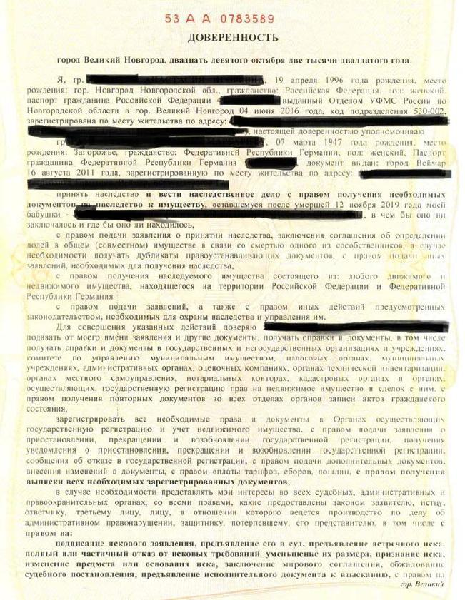
Reference
принять наследство и вести наследственное дело с правом получения необходимых документов на наследство к имуществу оставшихся после умершей 12 ноября 2019 года моей бабушки фио бабушки в чем бы они ни заключалось и где бы оно ни находилось с правом подачи заявления о принятии наследства заключения соглашения об определении долей в общем совместном имуществе в связи со смертью одного из сособственников в случае необходимости получать дубликаты правоустанавливающих документов с правом подачи иных заявлений необходимых для получения наследства с правом получения наследуемого имущества состоящего из любого движимого и недвижимого имущества находящегося на территории российской федерации и федеративной республики германия с правом подачи заявлений а также с правом иных действий предусмотренных законодательством необходимых для охраны наследства и управления им
Hypothesis
53 A A 0783589
ДОВЕРЕННОСТЬ.
горо Великий Новгород, двадиать левятого октября две тысячи 2
тр 07 март 1947 года рожления. мае
рождения: Запороиио тражданство: Федеративной Республики Германии, пол: женский. Паспорт
'ржданииа Федеративной Республики Германия покумени вылаи: торэл Веймр,
16 августа 2011 гол, зарегистрирояанную по месту жителю 10 злрес ОИ
принять ПаследТВО и вост наследстве
паследетво к имущесть),
ю © правом получении и
LoKywenron, ославшемуся после умершей 12 ноября 2019 тода моей
заключалось м где бы ово
© правом пода
полей в общем (совместном) имушестве в связи со смертыю одного из сособотвенниковь в =
необходимости получать дубликаты правоустанавливиющих документов, © правом abet ви
юм получения наследуемого имущества состоящего из
находящегося а территории Российской Фелершии и Фелеративной
и ноХОДИлось,
заявления о принятии наследства, заключения соглашения об определении
ор
недвижимого
© прыюм подачи заявлений, а также © правом иных действий предусмотрени
законодательством, необходимых для охраны наследства м упраоления им.
Для со ня указанных действий доверяю
подавать от моего имени заявления и другие документы. получать сиЗВКИ И локументы, в том чис
подучать справки и документы в государственных н негосударственных организациях в учрежлжения
Комитете по управлению муниципальным имуществом, налоговых органах. мунинии
учреждениях, административных органах, оценочных компаниях. органах лехнической нивентари ами,
opr местного самоуправления, нотариальных конторах, кадастровых в
ло регистрацию прав на недвижимое имущество и слелок © ним. ©
юкументов в0 LEX отделах органов записи актов гражданского
оеуществляющих, государства
правом получения повторных
состояния
зарегистрировать sce необходимые права и документы № Оурганах осущестиляюнни
государственную регистрацию и учет недвижимого имущества. © прыюм подачи вяплении
приостановлении, прекращении и возобновлении государственной регистрации. получении
уведомления © приостановлении, прекращении н зоюбновлении тосудирстнениой регистрали
оюбщения об отказе в государственной регистрации, © правом подачи дополинуельных довумениоь
онесения номенений © документы, © правом оплаты тарифов, сборов, пошлин, е и
выписки всех необходимых зарегистрированных документов
в случае необходимости представлять мои интерес
правоохранительных органах, со всеми правами, какие пр
ответчику, третьему лицу, лицу, в отношении которого ведется произволетво по делу об
алминистративном правонарушении, зашитнику, потерпевшему. его ппелстаяителю, в том числе с
траливных и
не сто п вул, прелуявление встречного Hers:
У ные их размера, признание иска.
Ka, Заключение мирового соглашении, обжаловани
© np
останопления, предъявление исполнительного документа к вичеканн, © Hp
ур. Ветки
Alignment
[+53]
[+A]
[+A]
[+0783589]
[+ДОВЕРЕННОСТЬ.]
[+горо]
[+Великий]
[+Новгород,]
[+двадиать]
[+левятого]
[+октября]
[+две]
[+тысячи]
[+2]
[+тр]
[+07]
[+март]
[+1947]
[+года]
[+рожления.]
[+мае]
[+рождения:]
[+Запороиио]
[+тражданство:]
[+Федеративной]
[+Республики]
[+Германии,]
[+пол:]
[+женский.]
[+Паспорт]
[+'ржданииа]
[+Федеративной]
[+Республики]
[+Германия]
[+покумени]
[+вылаи:]
[+торэл]
[+Веймр,]
[+16]
[+августа]
[+2011]
[+гол,]
[+зарегистрирояанную]
[+по]
[+месту]
[+жителю]
[+10]
[+злрес]
[+ОИ]
принять
[наследство → ПаследТВО]
и
[-вести]
[наследственное → вост]
[дело → наследстве]
[с → паследетво]
[правом → к]
[получения → имущесть),]
[необходимых → ю]
[документов → ©]
[на → правом]
[наследство → получении]
[к → и]
[имуществу → LoKywenron,]
[оставшихся → ославшемуся]
после
умершей
12
ноября
2019
[года → тода]
моей
[+заключалось]
[+м]
[+где]
[+бы]
[+ово]
[+©]
[+правом]
[+пода]
[+полей]
[+в]
[бабушки → общем]
[фио → (совместном)]
[бабушки → имушестве]
в
[+связи]
[+со]
[чем → смертыю]
[бы → одного]
[они → из]
[ни → сособотвенниковь]
[заключалось → в]
[и → =]
[где → необходимости]
[бы → получать]
[оно → дубликаты]
[ни → правоустанавливиющих]
[находилось → документов,]
[с → ©]
правом
[+abet]
[+ви]
[+юм]
[+получения]
[+наследуемого]
[+имущества]
[+состоящего]
[+из]
[+находящегося]
[+а]
[+территории]
[+Российской]
[+Фелершии]
[+и]
[+Фелеративной]
[+и]
[подачи → ноХОДИлось,]
заявления
о
принятии
[наследства → наследства,]
заключения
соглашения
об
определении
[+ор]
[+недвижимого]
[+©]
[+прыюм]
[+подачи]
[+заявлений,]
[+а]
[+также]
[+©]
[+правом]
[+иных]
[+действий]
[+предусмотрени]
[+законодательством,]
[+необходимых]
[+для]
[+охраны]
[+наследства]
[+м]
[+упраоления]
[+им.]
[+Для]
[+со]
[+ня]
[+указанных]
[+действий]
[+доверяю]
[+подавать]
[+от]
[+моего]
[+имени]
[+заявления]
[+и]
[+другие]
[+документы.]
[+получать]
[+сиЗВКИ]
[+И]
[+локументы,]
[+в]
[+том]
[+чис]
[+подучать]
[+справки]
[+и]
[долей → документы]
в
[+государственных]
[общем → н]
[совместном → негосударственных]
[имуществе → организациях]
в
[+учрежлжения]
[+Комитете]
[+по]
[+управлению]
[+муниципальным]
[+имуществом,]
[+налоговых]
[+органах.]
[+мунинии]
[+учреждениях,]
[+административных]
[+органах,]
[+оценочных]
[+компаниях.]
[+органах]
[+лехнической]
[+нивентари]
[+ами,]
[связи → opr]
[со → местного]
[смертью → самоуправления,]
[одного → нотариальных]
[из → конторах,]
[сособственников → кадастровых]
в
[+ло]
[+регистрацию]
[+прав]
[+на]
[+недвижимое]
[случае → имущество]
[необходимости → и]
[получать → слелок]
[дубликаты → ©]
[правоустанавливающих → ним.]
[документов → ©]
[с → юкументов]
[правом → в0]
[подачи → LEX]
[иных → отделах]
[заявлений → органов]
[необходимых → записи]
[для → актов]
[получения → гражданского]
[наследства → оеуществляющих,]
[с → государства]
правом
получения
[+повторных]
[+состояния]
[+зарегистрировать]
[+sce]
[+необходимые]
[+права]
[+и]
[наследуемого → документы]
[имущества → №]
[состоящего → Оурганах]
[из → осущестиляюнни]
[любого → государственную]
[движимого → регистрацию]
и
[+учет]
недвижимого
[+имущества.]
[имущества → ©]
[находящегося → прыюм]
[на → подачи]
[территории → вяплении]
[российской → приостановлении,]
[федерации → прекращении]
и
[+возобновлении]
[+государственной]
[+регистрации.]
[+получении]
[+уведомления]
[+©]
[+приостановлении,]
[+прекращении]
[+н]
[+зоюбновлении]
[+тосудирстнениой]
[+регистрали]
[+оюбщения]
[+об]
[+отказе]
[федеративной → в]
[республики → государственной]
[германия → регистрации,]
[с → ©]
правом
подачи
[+дополинуельных]
[+довумениоь]
[+онесения]
[заявлений → номенений]
[а → ©]
[также → документы,]
[с → ©]
правом
[+оплаты]
[+тарифов,]
[+сборов,]
[+пошлин,]
[иных → е]
[действий → и]
[предусмотренных → выписки]
[законодательством → всех]
необходимых
[+зарегистрированных]
[+документов]
[+в]
[+случае]
[+необходимости]
[+представлять]
[+мои]
[+интерес]
[+правоохранительных]
[+органах,]
[+со]
[+всеми]
[+правами,]
[+какие]
[+пр]
[+ответчику,]
[+третьему]
[+лицу,]
[+лицу,]
[+в]
[+отношении]
[+которого]
[+ведется]
[+произволетво]
[+по]
[+делу]
[+об]
[+алминистративном]
[+правонарушении,]
[+зашитнику,]
[+потерпевшему.]
[+его]
[+ппелстаяителю,]
[+в]
[+том]
[для → числе]
[охраны → с]
[наследства → траливных]
и
[+не]
[+сто]
[+п]
[+вул,]
[+прелуявление]
[+встречного]
[+Hers:]
[+У]
[+ные]
[+их]
[+размера,]
[+признание]
[+иска.]
[+Ka,]
[+Заключение]
[+мирового]
[+соглашении,]
[+обжаловани]
[+©]
[+np]
[+останопления,]
[+предъявление]
[+исполнительного]
[+документа]
[+к]
[+вичеканн,]
[+©]
[+Hp]
[управления → ур.]
[им → Ветки]
mws-115-e065603f66f1
Status: ocr_error
CER: 0.1917
WER: 0.2445
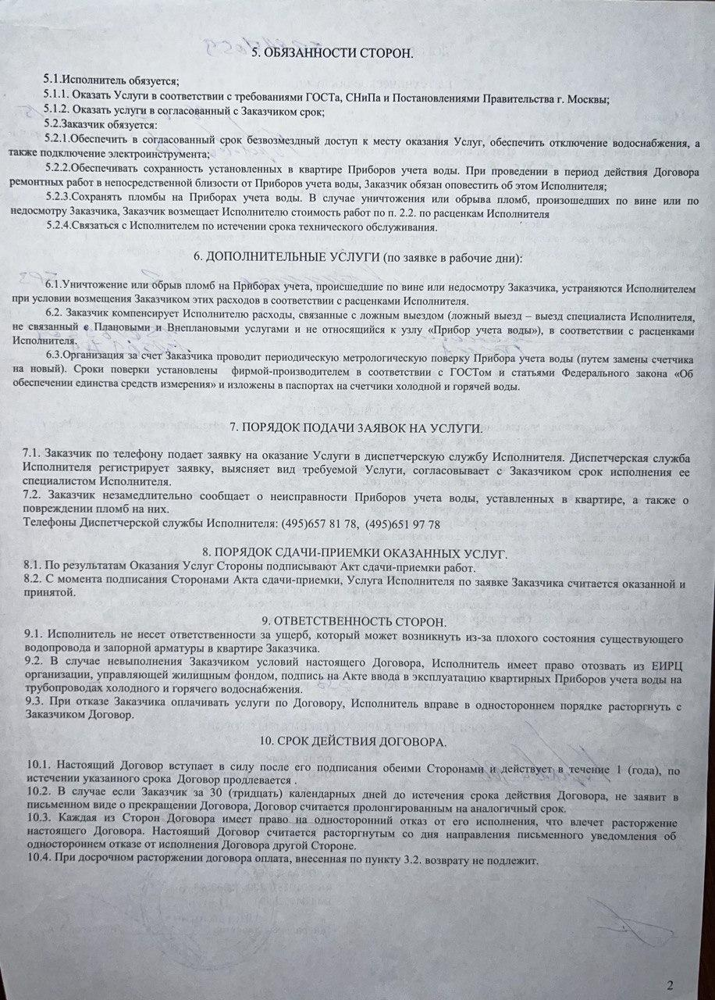
Reference
5 обязанности сторон 5 1 исполнитель обязуется 5 1 1 оказать услуги в соответствии с требованиями госта снипа и постановлениями правительства г москвы 5 1 2 оказать услуги в согласованный с заказчиком срок 5 2 заказчик обязуется 5 2 1 обеспечить в согласованный срок безвозмездный доступ к месту оказания услуг обеспечить отключение водоснабжения а также подключение электроинструмента 5 2 2 обеспечить сохранность установленных в квартире приборов учета воды при проведении в период действия договора ремонтных работ непосредственно близости от приборов учета воды заказчик обязан оповестить об этом исполнителя 5 2 3 сохранять пломбы на приборах учета воды в случае уничтожения или обрыва пломб произошедших по вине или по недосмотру заказчика заказчик возмещает исполнителю стоимость работ по п 2 2 по расценкам исполнителя 5 2 4 связаться с исполнителем по истечении срока технического обслуживания 6 дополнительные услуги по заявке в рабочие дни 6 1 уничтожение или обрыв пломб на приборах учета происшедшие по вине или недосмотру заказчика устраняются исполнителем при условии возмещения заказчиком этих расходов в соответствии с расценками исполнителя 6 2 заказчик компенсирует исполнителю расходы связанные с ложным выездом ложный выезд вызов специалиста исполнителя не связанный с плановыми и внеплановыми услугами и не относящийся к узлу прибор учета воды в соответствии с расценками исполнителя 6 3 организация за счет заказчика проводит периодическую метрологическую поверку прибора учета воды путем замены счетчика на новый сроки поверки установлены фирмой производителем в соответствии с гостом и статьями федерального закона об обеспечении единства средств измерения и изложены в паспортах на счетчики холодной и горячей воды 7 порядок подачи заявок на услуги 7 1 заказчик по телефону подает заявку на оказание услуги в диспетчерскую службу исполнителя диспетчерская служба исполнителя регистрирует заявку выясняет вид требуемой услуги согласовывает с заказчиком срок исполнения ее специалистом исполнителя 7 2 заказчик незамедлительно сообщает о неисправности приборов учета воды установленных в квартире а также о повреждении пломб на них телефоны диспетчерской службы исполнителя 495 651 81 78 495 651 97 78 8 порядок сдачи приемки оказанных услуг 8 1 по результатам оказания услуг стороны подписывают акт сдачи приемки работ 8 2 с момента подписания сторонами акта сдачи приемки услуга исполнителя по заявке заказчика считается оказанной и принятой 9 ответственность сторон 9 1 исполнитель не несет ответственности за ущерб который может возникнуть из за плохого состояния существующего водопровода и запорной арматуры в квартире заказчика 9 2 в случае невыполнения заказчиком условий настоящего договора исполнитель имеет право отозвать из еирц организации управляющей жилищным фондом подпись на акте ввода в эксплуатацию квартирных приборов учета воды на трубопроводах холодного и горячего водоснабжения 9 3 при отказе заказчика оплачивать услуги по договору исполнитель вправе в одностороннем порядке расторгнуть с заказчиком договор 10 срок действия договора 10 1 настоящий договор вступает в силу после его подписания обеими сторонами и действует в течение 1 года по истечении указанного срока договор продлевается 10 2 в случае если заказчик за 30 тридцать календарных дней до истечения срока действия договора не заявит в письменном виде о прекращении договора договор считается пролонгированным на аналогичный срок 10 3 каждая из сторон договора имеет право на односторонний отказ от его исполнения что влечет расторжение настоящего договора настоящий договор считается расторгнутым со дня направления письменного уведомления об одностороннем отказе от исполнения договора другой стороне 10 4 при досрочном расторжении договора оплата внесенная по пункту 3 2 возврату не подлежит 2
Hypothesis
`5. ОБЯЗАННОСТИ СТОРОН.
5-1.Исполнитель обязуется;
5-1. Оказать Услуги в соответствии с требованиями ГОСТа, СНиПа и Постановлениями Правительства г. Москвы; é
5.1.2. Оказать услуги в согласованный с Заказчиком срок;
5.2 Заказчик обязуется:
5.2.1.Обеспечить в согласованный срок безвозмездный доступ к месту оказания Услуг, обеспечить отключение водоснабжения, а.
также подключение электроинструмента; i
5.2.2.Обеспечивать сохранность установленных в квартире Приборов учета воды. При проведении в период действия Jlorosopa
ремонтных работ в непосредственной близости от Приборов учета воды, Заказчик обязан оповестить об этом Исполнителя;
5.2.3.Сохранять пломбы на Приборах учета воды. В случае уничтожения или обрыва пломб, произошедших по вине или nO
недосмотру Заказчика, Заказчик возмещает Исполнителю стоимость работ по п. 2.2. по расценкам Исполнителя
5.2.4.Связаться с Исполнителем по истечении срока технического обслуживания.
6. ДОПОЛНИТЕЛЬНЫЕ УСЛУГИ (по заявке в рабочие дни):
6.1. Уничтожение или обрыв пломб на Приборах учета, проиёшедшие по вине или недосмотру Заказчика, устраняются Исполнителем.
при условии возмещения Заказчиком этих расходов в соответствии с расценками Исполнителя. р
62. Заказчик компенсирует Исполнителю расходы, связанные с ложным выездом (ложный выезд — выезд специалиста Исполнителя,
не связанный ¢ Плановыми-и Внеплановыми услугами и не относящийся к узлу «Прибор учета воды»), в соответствии © расценками |
'Испойнителя.. * ee Е z
63.Организация за`счет Заказчика проводит периодическую метрологическую поверку Прибора учета воды (путем замены счетчика:
на новый). Сроки поверки установлены фирмой-производителем в соответствии с ГОСТом и статьями Федерального закона «0б
‘обеспечении единства средств измерения» и изложены в. ‘паспортах на счетчики холодной и горячей воды.
7. ПОРЯДОК ПОДАЧИ ЗАЯВОК НА УСЛУГИ.
7.1, Заказчик по телефону подает заявку на оказание Услуги в диспетчерскую службу Исполнителя. Диспетчерская служба.
Исполнителя регистрирует заявку, выясняет вид требуемой Услуги, согласовывает © Заказчиком срок исполнения ее
специалистом Исполнителя.
722. Заказчик незамедлительно сообщает о неисправности Приборов учета воды, уставленных в квартире, а также 0
повреждении пломб на них. ‘
Телефоны Диспетчерской службы Исполнителя: (495)657 81 78, (495)651 97 78 а
8. ПОРЯДОК СДАЧИ-ПРИЕМКИ ОКАЗАННЫХ УСЛУГ.
8.1, По результатам Оказания Услуг Стороны подписывают Акт сдачи-приемки работ.
82. С момента подписания Сторонами Акта сдачи-приемки, Услуга Исполнителя по заявке Заказчика считается 01
принятой,
9. ОТВЕТСТВЕННОСТЬ СТОРОН. Bs
9.1. Исполнитель не несет ответственности за ущерб, который может возникнугь из-за плохого состояния
водопровода и запорной арматуры в квартире Заказчика. г
92. В случае невыполнения Заказчиком условий настоящего Договора, Исполнитель имеет право
организации, управляющей жилищным фондом, подпись на Акте ввода в эксплуатацию квартирных При
трубопроводах холодного и горячего водоснабжения. an
9.3. При отказе Заказчика оплачивать услуги по Договору, Исполнитель вправе в одностороннем порядке.
Заказчиком Договор. i
10, СРОК ДЕЙСТВИЯ ДОГОВОРА.
10.1, Настоящий Договор вступает в силу после ero подписания обенми Cro
_10.2. В случае если Заказчик за 30 (тридиать) к oe ‘дней до истечения срока.
Alignment
[-5]
[-обязанности]
[-сторон]
[-5]
[1 → `5.]
[исполнитель → ОБЯЗАННОСТИ]
[обязуется → СТОРОН.]
[5 → 5-1.Исполнитель]
[1 → обязуется;]
[1 → 5-1.]
[оказать → Оказать]
[услуги → Услуги]
в
соответствии
с
требованиями
[госта → ГОСТа,]
[снипа → СНиПа]
и
[-постановлениями]
[правительства → Постановлениями]
[г → Правительства]
[москвы → г.]
[5 → Москвы;]
[1 → é]
[2 → 5.1.2.]
[оказать → Оказать]
услуги
в
согласованный
с
[-заказчиком]
[-срок]
[-5]
[-2]
[заказчик → Заказчиком]
[обязуется → срок;]
[5 → 5.2]
[2 → Заказчик]
[1 → обязуется:]
[обеспечить → 5.2.1.Обеспечить]
в
согласованный
срок
безвозмездный
доступ
к
месту
оказания
[услуг → Услуг,]
обеспечить
отключение
[водоснабжения → водоснабжения,]
[а → а.]
также
подключение
[-электроинструмента]
[-5]
[2 → электроинструмента;]
[2 → i]
[обеспечить → 5.2.2.Обеспечивать]
сохранность
установленных
в
квартире
[приборов → Приборов]
учета
[воды → воды.]
[при → При]
проведении
в
период
действия
[договора → Jlorosopa]
ремонтных
работ
[+в]
[непосредственно → непосредственной]
близости
от
[приборов → Приборов]
учета
[воды → воды,]
[заказчик → Заказчик]
обязан
оповестить
об
этом
[-исполнителя]
[-5]
[-2]
[3 → Исполнителя;]
[сохранять → 5.2.3.Сохранять]
пломбы
на
[приборах → Приборах]
учета
[воды → воды.]
[в → В]
случае
уничтожения
или
обрыва
[пломб → пломб,]
произошедших
по
вине
или
[по → nO]
недосмотру
[заказчика → Заказчика,]
[заказчик → Заказчик]
возмещает
[исполнителю → Исполнителю]
стоимость
работ
по
[-п]
[2 → п.]
[2 → 2.2.]
по
расценкам
[-исполнителя]
[-5]
[-2]
[4 → Исполнителя]
[связаться → 5.2.4.Связаться]
с
[исполнителем → Исполнителем]
по
истечении
срока
технического
[обслуживания → обслуживания.]
[6 → 6.]
[дополнительные → ДОПОЛНИТЕЛЬНЫЕ]
[услуги → УСЛУГИ]
[по → (по]
заявке
в
рабочие
[-дни]
[6 → дни):]
[1 → 6.1.]
[уничтожение → Уничтожение]
или
обрыв
пломб
на
[приборах → Приборах]
[учета → учета,]
[происшедшие → проиёшедшие]
по
вине
или
недосмотру
[заказчика → Заказчика,]
устраняются
[исполнителем → Исполнителем.]
при
условии
возмещения
[заказчиком → Заказчиком]
этих
расходов
в
соответствии
с
расценками
[исполнителя → Исполнителя.]
[6 → р]
[2 → 62.]
[заказчик → Заказчик]
компенсирует
[исполнителю → Исполнителю]
[расходы → расходы,]
связанные
с
ложным
выездом
[ложный → (ложный]
выезд
[+—]
[вызов → выезд]
специалиста
[исполнителя → Исполнителя,]
не
связанный
[-с]
[плановыми → ¢]
[и → Плановыми-и]
[внеплановыми → Внеплановыми]
услугами
и
не
относящийся
к
узлу
[прибор → «Прибор]
учета
[воды → воды»),]
в
соответствии
[с → ©]
расценками
[+|]
[+'Испойнителя..]
[исполнителя → *]
[6 → ee]
[3 → Е]
[организация → z]
[за → 63.Организация]
[счет → за`счет]
[заказчика → Заказчика]
проводит
периодическую
метрологическую
поверку
[прибора → Прибора]
учета
воды
[путем → (путем]
замены
[счетчика → счетчика:]
на
[новый → новый).]
[сроки → Сроки]
поверки
установлены
[-фирмой]
[производителем → фирмой-производителем]
в
соответствии
с
[гостом → ГОСТом]
и
статьями
[федерального → Федерального]
закона
[об → «0б]
[обеспечении → ‘обеспечении]
единства
средств
[измерения → измерения»]
и
изложены
[в → в.]
[паспортах → ‘паспортах]
на
счетчики
холодной
и
горячей
[-воды]
[7 → воды.]
[порядок → 7.]
[подачи → ПОРЯДОК]
[заявок → ПОДАЧИ]
[на → ЗАЯВОК]
[услуги → НА]
[7 → УСЛУГИ.]
[1 → 7.1,]
[заказчик → Заказчик]
по
телефону
подает
заявку
на
оказание
[услуги → Услуги]
в
диспетчерскую
службу
[исполнителя → Исполнителя.]
[диспетчерская → Диспетчерская]
[служба → служба.]
[исполнителя → Исполнителя]
регистрирует
[заявку → заявку,]
выясняет
вид
требуемой
[услуги → Услуги,]
согласовывает
[с → ©]
[заказчиком → Заказчиком]
срок
исполнения
ее
специалистом
[-исполнителя]
[7 → Исполнителя.]
[2 → 722.]
[заказчик → Заказчик]
незамедлительно
сообщает
о
неисправности
[приборов → Приборов]
учета
[воды → воды,]
[установленных → уставленных]
в
[квартире → квартире,]
а
также
[о → 0]
повреждении
пломб
на
[них → них.]
[телефоны → ‘]
[диспетчерской → Телефоны]
[службы → Диспетчерской]
[исполнителя → службы]
[495 → Исполнителя:]
[651 → (495)657]
81
[-78]
[495 → 78,]
[651 → (495)651]
97
78
[-8]
[порядок → а]
[сдачи → 8.]
[приемки → ПОРЯДОК]
[оказанных → СДАЧИ-ПРИЕМКИ]
[услуг → ОКАЗАННЫХ]
[8 → УСЛУГ.]
[1 → 8.1,]
[по → По]
результатам
[оказания → Оказания]
[услуг → Услуг]
[стороны → Стороны]
подписывают
[-акт]
[-сдачи]
[приемки → Акт]
[работ → сдачи-приемки]
[8 → работ.]
[2 → 82.]
[с → С]
момента
подписания
[-сторонами]
[акта → Сторонами]
[сдачи → Акта]
[приемки → сдачи-приемки,]
[услуга → Услуга]
[исполнителя → Исполнителя]
по
заявке
[заказчика → Заказчика]
считается
[-оказанной]
[и → 01]
[принятой → принятой,]
[9 → 9.]
[ответственность → ОТВЕТСТВЕННОСТЬ]
[сторон → СТОРОН.]
[9 → Bs]
[1 → 9.1.]
[исполнитель → Исполнитель]
не
несет
ответственности
за
[ущерб → ущерб,]
который
может
[-возникнуть]
[из → возникнугь]
[за → из-за]
плохого
состояния
[-существующего]
водопровода
и
запорной
арматуры
в
квартире
[заказчика → Заказчика.]
[9 → г]
[2 → 92.]
[в → В]
случае
невыполнения
[заказчиком → Заказчиком]
условий
настоящего
[договора → Договора,]
[исполнитель → Исполнитель]
имеет
право
[-отозвать]
[-из]
[-еирц]
[организации → организации,]
управляющей
жилищным
[фондом → фондом,]
подпись
на
[акте → Акте]
ввода
в
эксплуатацию
квартирных
[-приборов]
[-учета]
[-воды]
[на → При]
трубопроводах
холодного
и
горячего
[водоснабжения → водоснабжения.]
[9 → an]
[3 → 9.3.]
[при → При]
отказе
[заказчика → Заказчика]
оплачивать
услуги
по
[договору → Договору,]
[исполнитель → Исполнитель]
вправе
в
одностороннем
[-порядке]
[-расторгнуть]
[с → порядке.]
[заказчиком → Заказчиком]
[договор → Договор.]
[10 → i]
[срок → 10,]
[действия → СРОК]
[договора → ДЕЙСТВИЯ]
[10 → ДОГОВОРА.]
[1 → 10.1,]
[настоящий → Настоящий]
[договор → Договор]
вступает
в
силу
после
[его → ero]
подписания
[-обеими]
[-сторонами]
[-и]
[-действует]
[-в]
[-течение]
[-1]
[-года]
[-по]
[-истечении]
[-указанного]
[-срока]
[-договор]
[продлевается → обенми]
[10 → Cro]
[2 → _10.2.]
[в → В]
случае
если
[заказчик → Заказчик]
за
30
[+(тридиать)]
[тридцать → к]
[календарных → oe]
[дней → ‘дней]
до
истечения
[-срока]
[-действия]
[-договора]
[-не]
[-заявит]
[-в]
[-письменном]
[-виде]
[-о]
[-прекращении]
[-договора]
[-договор]
[-считается]
[-пролонгированным]
[-на]
[-аналогичный]
[-срок]
[-10]
[-3]
[-каждая]
[-из]
[-сторон]
[-договора]
[-имеет]
[-право]
[-на]
[-односторонний]
[-отказ]
[-от]
[-его]
[-исполнения]
[-что]
[-влечет]
[-расторжение]
[-настоящего]
[-договора]
[-настоящий]
[-договор]
[-считается]
[-расторгнутым]
[-со]
[-дня]
[-направления]
[-письменного]
[-уведомления]
[-об]
[-одностороннем]
[-отказе]
[-от]
[-исполнения]
[-договора]
[-другой]
[-стороне]
[-10]
[-4]
[-при]
[-досрочном]
[-расторжении]
[-договора]
[-оплата]
[-внесенная]
[-по]
[-пункту]
[-3]
[-2]
[-возврату]
[-не]
[-подлежит]
[2 → срока.]
mws-1153-55c2a21e2cd0
Status: ocr_error
CER: 1.9383
WER: 2.3600
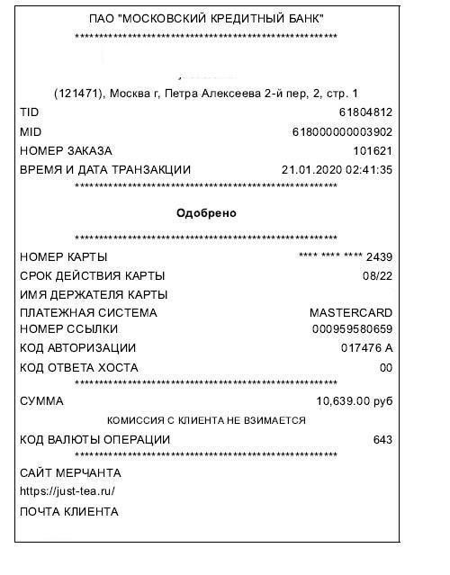
Reference
номер карты 2439 срок действия карты 08 22 имя держателя карты платежная система mastercard номер ссылки 000959580659 код авторизации 017476 a код ответа хоста 00
Hypothesis
ПАО
ОСКОВСКИЙ КРЕДИТНЫЙ БАН!
(121471), Москва г, Петра Алексеева 2-й пер, 2, стр. 1
то 61804812
мо 618000000003902
НОМЕР ЗАКАЗА. 101621
ВРЕМЯ И ДАТА ТРАНЗАКЦИИ 21.01.2020 02:41:35
Одобрено
НОМЕР КАРТЫ sence mene 2430
СРОК ДЕЙСТВИЯ КАРТЫ 08/22
ИМЯ ДЕРЖАТЕЛЯ КАРТЫ
ПЛАТЕЖНАЯ СИСТЕМА MASTERCARD
НОМЕР ССЫЛКИ 000959580659
КОД АВТОРИЗАЦИИ 017476 А.
КОД ОТВЕТА ХОСТА 0
СУММА 10,639.00 руб
КОМИССИЯ C КЛИЕНТА НЕ ВЗИМАЕТСЯ
КОД ВАЛЮТЫ ОПЕРАЦИИ 643
САЙТ МЕРЧАНТА.
htips:/just-tea.ru/
ПОЧТА КЛИЕНТА
Alignment
[+ПАО]
[+ОСКОВСКИЙ]
[+КРЕДИТНЫЙ]
[+БАН!]
[+(121471),]
[+Москва]
[+г,]
[+Петра]
[+Алексеева]
[+2-й]
[+пер,]
[+2,]
[+стр.]
[+1]
[+то]
[+61804812]
[+мо]
[+618000000003902]
[+НОМЕР]
[+ЗАКАЗА.]
[+101621]
[+ВРЕМЯ]
[+И]
[+ДАТА]
[+ТРАНЗАКЦИИ]
[+21.01.2020]
[+02:41:35]
[+Одобрено]
[+НОМЕР]
[номер → КАРТЫ]
[карты → sence]
[2439 → mene]
[срок → 2430]
[действия → СРОК]
[карты → ДЕЙСТВИЯ]
[08 → КАРТЫ]
[22 → 08/22]
[имя → ИМЯ]
[держателя → ДЕРЖАТЕЛЯ]
[карты → КАРТЫ]
[платежная → ПЛАТЕЖНАЯ]
[система → СИСТЕМА]
[mastercard → MASTERCARD]
[номер → НОМЕР]
[ссылки → ССЫЛКИ]
000959580659
[код → КОД]
[авторизации → АВТОРИЗАЦИИ]
017476
[+А.]
[+КОД]
[+ОТВЕТА]
[+ХОСТА]
[+0]
[+СУММА]
[+10,639.00]
[+руб]
[+КОМИССИЯ]
[+C]
[+КЛИЕНТА]
[+НЕ]
[+ВЗИМАЕТСЯ]
[+КОД]
[+ВАЛЮТЫ]
[+ОПЕРАЦИИ]
[+643]
[a → САЙТ]
[код → МЕРЧАНТА.]
[ответа → htips:/just-tea.ru/]
[хоста → ПОЧТА]
[00 → КЛИЕНТА]
mws-1002-1086d5fd48c2__grayscale
Status: ocr_error
CER: 0.8245
WER: 0.9911
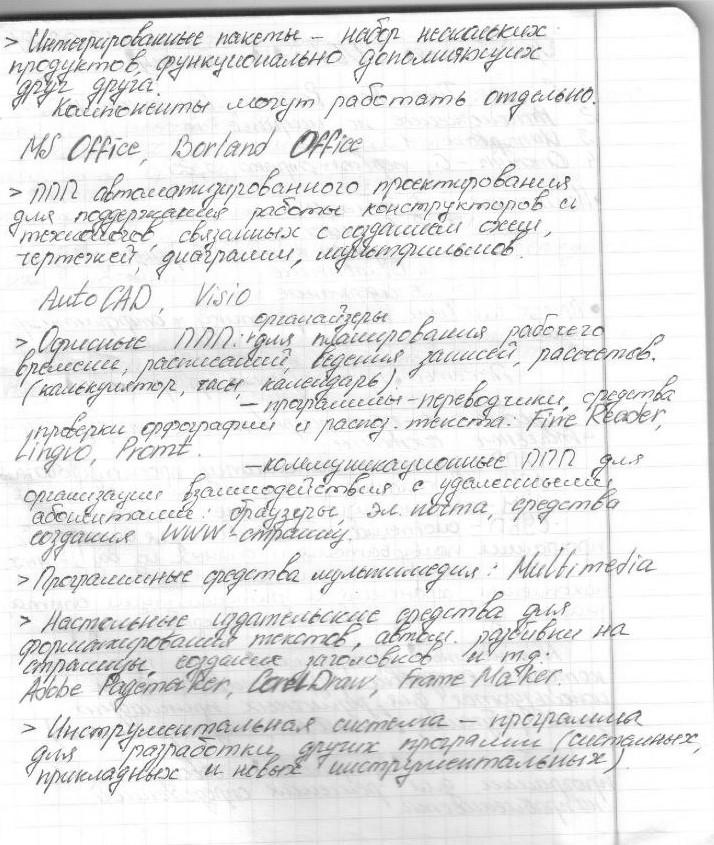
Reference
интегрированные пакеты набор нескольких продуктов функционально дополняющих друг друга компоненты могут работать отдельно ms office borland office ппп автоматизированного проектирования для поддержания работы конструкторов и технологов связанных с созданием схем чертежей диаграмм мультфильмов autocad visio органайзеры офисные ппп для планирования рабочего времени расписаний ведения записей рассчетов калькулятор часы календарь программы переводчики переводчики средства проверки орфографии и распоз текста fine reader lingvo promt коммуникационные ппп для организации взаимодействия с удаленными абонентами браузеры эл почта средства создания www страниц программные средства мультимедиа multimedia настольные издательские средства для форматирования текстов автом разбивки на страницы создания заголовков и т д adobe pagemaker coreldraw framemaker инструментальная система программа для разработки других программ системных прикладных и новых инструментальных
Hypothesis
> Шер potable Waker — бт Keli
OBE Gy И rein рее
Я’
Е Lee pademarrs gee,
US Office, berlerd Ole
> pn поете ураваниеого Пете оне
teh parent Kencmprkrmepob в |
НЫЙ ee ине C6 Ss)
Ciel,
tepmnericerh © ge Spracttett, we aio id
Ве, Visto
Spitie
2 ие (Ud ted | SE al?
Lear = пере
cence, pepe
Lit ме gry oe [ORG HCE, Е йе Books
Yee, bo
ace peejeeer олени coder @ ибачегсеевескй
eh ae ae dy (2 6t. ыы РР, ggpente
aad HWW ¢ ей)
> |pcyaceee cent прет горе CG « — р
> ордене yy, ее LY =="
pee ae
\ Cmte — Hp tipbucteatee
holley wumayoooniste [HIN ee :
omer eee
Alignment
[+>]
[+Шер]
[+potable]
[+Waker]
[+—]
[+бт]
[+Keli]
[интегрированные → OBE]
[пакеты → Gy]
[набор → И]
[нескольких → rein]
[продуктов → рее]
[функционально → Я’]
[дополняющих → Е]
[друг → Lee]
[друга → pademarrs]
[компоненты → gee,]
[могут → US]
[работать → Office,]
[отдельно → berlerd]
[ms → Ole]
[office → >]
[borland → pn]
[office → поете]
[ппп → ураваниеого]
[автоматизированного → Пете]
[проектирования → оне]
[для → teh]
[поддержания → parent]
[работы → Kencmprkrmepob]
[конструкторов → в]
[и → |]
[технологов → НЫЙ]
[связанных → ee]
[с → ине]
[созданием → C6]
[схем → Ss)]
[чертежей → Ciel,]
[диаграмм → tepmnericerh]
[мультфильмов → ©]
[autocad → ge]
[visio → Spracttett,]
[органайзеры → we]
[офисные → aio]
[ппп → id]
[для → Ве,]
[планирования → Visto]
[рабочего → Spitie]
[времени → 2]
[расписаний → ие]
[ведения → (Ud]
[записей → ted]
[рассчетов → |]
[калькулятор → SE]
[часы → al?]
[календарь → Lear]
[программы → =]
[переводчики → пере]
[переводчики → cence,]
[средства → pepe]
[проверки → Lit]
[орфографии → ме]
[и → gry]
[распоз → oe]
[текста → [ORG]
[fine → HCE,]
[reader → Е]
[lingvo → йе]
[promt → Books]
[коммуникационные → Yee,]
[ппп → bo]
[для → ace]
[организации → peejeeer]
[взаимодействия → олени]
[с → coder]
[удаленными → @]
[абонентами → ибачегсеевескй]
[браузеры → eh]
[эл → ae]
[почта → ae]
[средства → dy]
[создания → (2]
[www → 6t.]
[страниц → ыы]
[программные → РР,]
[средства → ggpente]
[мультимедиа → aad]
[multimedia → HWW]
[настольные → ¢]
[издательские → ей)]
[средства → >]
[для → |pcyaceee]
[форматирования → cent]
[текстов → прет]
[автом → горе]
[разбивки → CG]
[на → «]
[страницы → —]
[создания → р]
[заголовков → >]
[и → ордене]
[т → yy,]
[д → ее]
[adobe → LY]
[pagemaker → =="]
[coreldraw → pee]
[framemaker → ae]
[инструментальная → \]
[система → Cmte]
[программа → —]
[для → Hp]
[разработки → tipbucteatee]
[других → holley]
[программ → wumayoooniste]
[системных → [HIN]
[прикладных → ee]
[и → :]
[новых → omer]
[инструментальных → eee]
mws-1008-9efe01e1bb0f__grayscale
Status: ocr_error
CER: 0.9837
WER: 0.9697
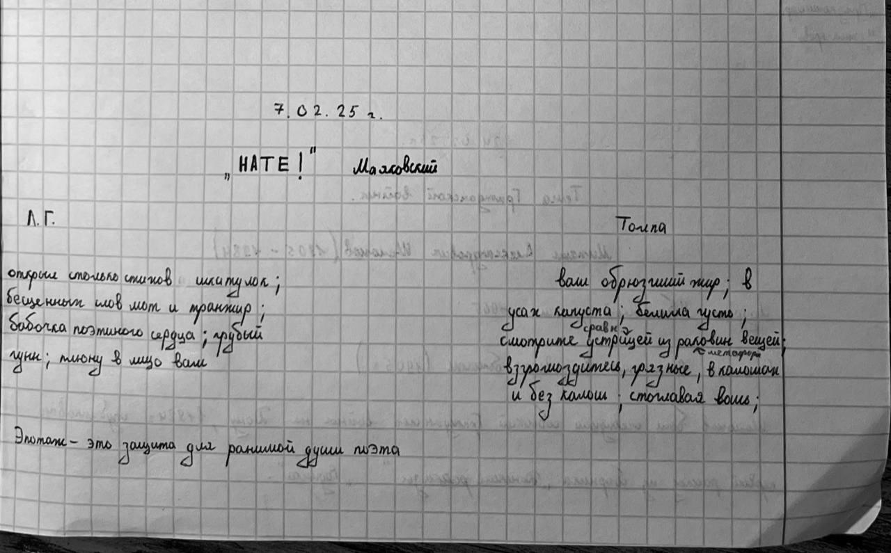
Reference
7 02 25 г нате маяковский л г открыл столько стихов шкатулок бесценных слов мот и транжир бабочка поэтиного сердца грубый гунн плюну в лицо вам эпотаж это защита для ранимой души поэта
Hypothesis
А.Г.
Alignment
[-7]
[-02]
[-25]
[-г]
[-нате]
[-маяковский]
[-л]
[-г]
[-открыл]
[-столько]
[-стихов]
[-шкатулок]
[-бесценных]
[-слов]
[-мот]
[-и]
[-транжир]
[-бабочка]
[-поэтиного]
[-сердца]
[-грубый]
[-гунн]
[-плюну]
[-в]
[-лицо]
[-вам]
[-эпотаж]
[-это]
[-защита]
[-для]
[-ранимой]
[-души]
[поэта → А.Г.]
mws-1011-b06085c45540__grayscale
Status: ocr_error
CER: 0.8179
WER: 0.9565
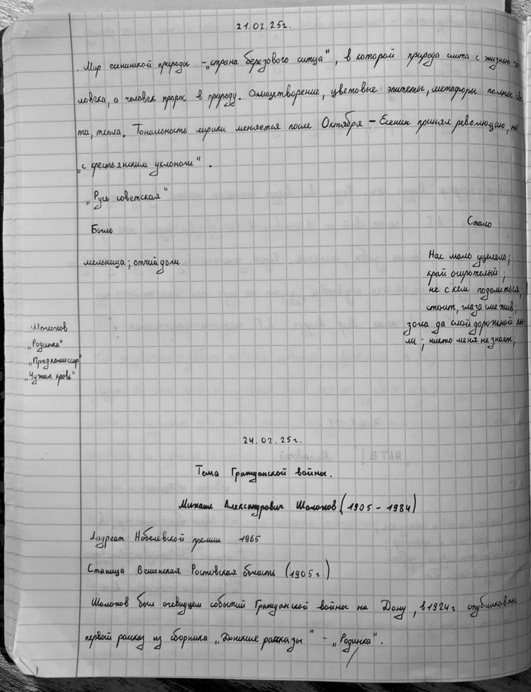
Reference
21 02 25г мир есенинской природы страна березового ситца в которой природа слита жизнью че ловека а человек пророс в природу олицетворение цветовые эпитеты метафоры полны све та тепла тональность лирики меняется после октября есенин принял революцию но с крестьянским уклоном русь советская было мельница отчий дом стало нас мало уцелело край осиротелый не с кем поделиться стоит глаза смежив зола да слой дорожной пы ли никто меня не знает шолохов родинка продкомиссар чужая кровь 24 02 25г тема гражданской войны михаил александрович шолохов 1905 1984 лауреат нобелевской премии 1965 станица вешенская ростовской области 1905 г шолохов был очевидцем событий гражданской войны на дону в 1924 г опубликован первый рассказ из сборника донские рассказы родинка
Hypothesis
21.02.25%
‚ор о yoga тром Spee carga” Чате р еще там
паба зы пера рр. Onsager, лен зил тр ай
ma., mania, —Tonaunanoume faa шеноаетея. noise Oundips. ~ Ean, ys ро
Lc ane ne Z
1 Poa themes”
Bey
Add. 5 oma godt
24. 02. 254.
Тема Fpanug oncanii Дони .
Шири, Алакеои ил Mouswbl( 440512 Чад]
Jay ЕР мы 41965
Спашща Brmencaar Pormbites Swans АРА
Alignment
[-21]
[-02]
[-25г]
[-мир]
[-есенинской]
[-природы]
[-страна]
[-березового]
[-ситца]
[-в]
[-которой]
[-природа]
[-слита]
[-жизнью]
[-че]
[-ловека]
[-а]
[-человек]
[-пророс]
[-в]
[-природу]
[-олицетворение]
[-цветовые]
[-эпитеты]
[-метафоры]
[-полны]
[-све]
[-та]
[-тепла]
[-тональность]
[-лирики]
[-меняется]
[-после]
[-октября]
[-есенин]
[-принял]
[-революцию]
[-но]
[-с]
[-крестьянским]
[-уклоном]
[-русь]
[-советская]
[-было]
[-мельница]
[-отчий]
[-дом]
[-стало]
[-нас]
[мало → 21.02.25%]
[уцелело → ‚ор]
[край → о]
[осиротелый → yoga]
[не → тром]
[с → Spee]
[кем → carga”]
[поделиться → Чате]
[стоит → р]
[глаза → еще]
[смежив → там]
[зола → паба]
[да → зы]
[слой → пера]
[дорожной → рр.]
[пы → Onsager,]
[ли → лен]
[никто → зил]
[меня → тр]
[не → ай]
[знает → ma.,]
[шолохов → mania,]
[родинка → —Tonaunanoume]
[продкомиссар → faa]
[чужая → шеноаетея.]
[кровь → noise]
[24 → Oundips.]
[02 → ~]
[25г → Ean,]
[тема → ys]
[гражданской → ро]
[войны → Lc]
[михаил → ane]
[александрович → ne]
[шолохов → Z]
[1905 → 1]
[1984 → Poa]
[лауреат → themes”]
[нобелевской → Bey]
[премии → Add.]
[1965 → 5]
[станица → oma]
[вешенская → godt]
[ростовской → 24.]
[области → 02.]
[1905 → 254.]
[г → Тема]
[шолохов → Fpanug]
[был → oncanii]
[очевидцем → Дони]
[событий → .]
[гражданской → Шири,]
[войны → Алакеои]
[на → ил]
[дону → Mouswbl(]
[в → 440512]
[1924 → Чад]]
[г → Jay]
[опубликован → ЕР]
[первый → мы]
[рассказ → 41965]
[из → Спашща]
[сборника → Brmencaar]
[донские → Pormbites]
[рассказы → Swans]
[родинка → АРА]
mws-102-380a873b1211__grayscale
Status: ocr_error
CER: 0.0161
WER: 0.0679
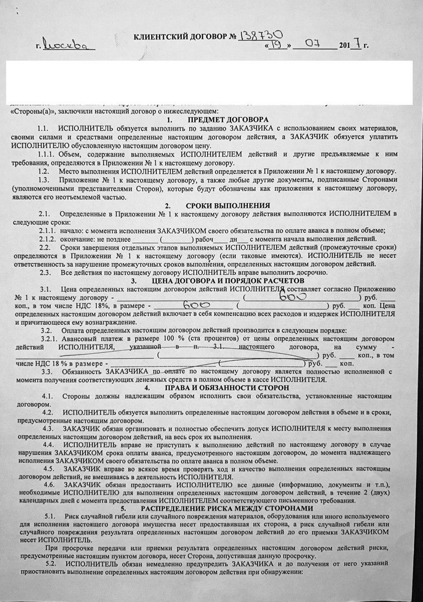
Reference
клиентский договор 138730 г москва 19 07 2017 г стороны а заключили настоящий договор о нижеследующем 1 предмет договора 1 1 исполнитель обязуется выполнить по заданию заказчика с использованием своих материалов своими силами и средствами определенные настоящим договором действия а заказчик обязуется уплатить исполнителю обусловленную настоящим договором цену 1 1 1 объем содержание выполняемых исполнителем действий и другие предъявляемые к ним требования определяются в приложении 1 к настоящему договору 1 2 место выполнения исполнителем действий определяется в приложении 1 к настоящему договору 1 3 приложение 1 к настоящему договору а также любые другие документы подписанные сторонами уполномоченными представителями сторон которые будут обозначены как приложения к настоящему договору являются его неотъемлемой частью 2 сроки выполнения 2 1 определенные в приложении 1 к настоящему договору действия выполняются исполнителем в следующие сроки 2 1 1 начало с момента исполнения заказчиком своего обязательства по оплате аванса в полном объеме 2 1 2 окончание не позднее рабоч дн с момента начала выполнения действий 2 2 срок завершения отдельных этапов выполняемых исполнителем действий промежуточные сроки определяются в приложении 1 к настоящему договору если таковые имеются исполнитель не несет ответственность за нарушение промежуточных сроков выполнения определенных настоящим договором действий 2 3 все действия по настоящему договору исполнитель вправе выполнить досрочно 3 цена договора и порядок расчетов 3 1 цена определенных настоящим договором действий исполнителя составляет согласно приложению 1 к настоящему договору 600 руб коп в том числе ндс 18 в размере 600 руб коп цена определенных настоящим договором действий включает в себя компенсацию всех расходов и издержек исполнителя и причитающееся ему вознаграждение 3 2 оплата определенных настоящим договором действий производится в следующем порядке 3 2 1 авансовый платеж в размере 100 ста процентов от цены определенных настоящим договором действий исполнителя указанной в п 3 1 настоящего договора на сумму руб коп в том числе ндс 18 в размере руб коп 3 3 обязанность заказчика по оплате по настоящему договору является полностью исполненной с момента получения соответствующих денежных средств в полном объеме в кассе исполнителя 4 права и обязанности сторон 4 1 стороны должны надлежащим образом исполнить свои обязательства установленные настоящим договором 4 2 исполнитель обязуется выполнить определенные настоящим договором действия в объеме и в сроки предусмотренные настоящим договором 4 3 заказчик обязан организовать и полностью обеспечить допуск исполнителя к месту выполнения определенных настоящим договором действий на весь срок их выполнения 4 4 исполнитель вправе не приступать к выполнению действий по настоящему договору в случае нарушения заказчиком срока оплаты аванса предусмотренного настоящим договором до момента надлежащего исполнения заказчиком своего обязательства по оплате аванса в полном объеме 4 5 заказчик в праве во всякое время проверять ход и качество выполнения определенных настоящим договором действий не вмешиваясь в деятельность исполнителя 4 6 заказчик обязан предоставить исполнителю все данные информацию документы и т п необходимые исполнителю для выполнения определенных настоящим договором действий в течение 2 двух календарных дней с момента предоставления исполнителем соответствующего письменного требования 5 распределение риска между сторонами 5 1 риск случайной гибели или случайного повреждения материалов оборудования или иного используемого для исполнения настоящего договора имущества несет предоставившая их сторона а риск случайной гибели или случайного повреждения результата определенных настоящим договором действий до его приемки заказчиком несет исполнитель при просрочке передачи или приемки результата определенных настоящим договором действий риски предусмотренные настоящим пунктом договора несет сторона допустившая данную просрочку 5 2 исполнитель обязан немедленно предупредить заказчика и до получения от него указаний приостановить выполнение определенных настоящим договором действия при обнаружении
Hypothesis
КЛИЕНТСКИЙ ДОГОВОР № |535
ее а К.
«Стороны(а)», заключили настоящий договор о нижеследующем:
1. — ПРЕДМЕТ ДОГОВОРА
1.1. ИСПОЛНИТЕЛЬ обязуется выполнить по заданию ЗАКАЗЧИКА с использованием своих материалов,
своими силами и средствами определенные настоящим договором действия, а ЗАКАЗЧИК обязуется уплатить
ИСПОЛНИТЕЛЮ обусловленную настоящим договором цену.
1.1.1. Объем, содержание выполняемых ИСПОЛНИТЕЛЕМ действий и другие предъявляемые к ним
требования, определяются в Приложении № | к настоящему договору.
12. Место выполнения ИСПОЛНИТЕЛЕМ действий определяется в Приложении № 1 к настоящему договору.
13. Приложение № 1 к настоящему договору, а также любые другие документы, подписанные Сторонами
(уполномоченными представителями Сторон), которые будут обозначены как приложения к настоящему договору,
являются его неотъемлемой частью.
2. — СРОКИ ВЫПОЛНЕНИЯ
2.1. Определенные в Приложении № 1 к настоящему договору действия выполняются ИСПОЛНИТЕЛЕМ в.
следующие сроки:
2.1.1. начало: с момента исполнения ЗАКАЗЧИКОМ своего обязательства по оплате аванса в полном объеме;
2.1.2. окончание: не позднее ( ) рабоч __ дн__ смомента начала выполнения действий.
2.2. Сроки завершения отдельных этапов выполняемых ИСПОЛНИТЕЛЕМ действий (промежуточные сроки)
определяются в Приложении № 1 к настоящему договору (если таковые имеются). ИСПОЛНИТЕЛЬ не несет
ответственность за нарушение промежуточных сроков выполнения, определенных настоящим договором действий.
2.3. Все действия по настоящему договору ИСПОЛНИТЕЛЬ вправе выполнить досрочно.
3. — ЦЕНА ДОГОВОРА И ПОРЯДОК РАСЧЕТОВ
3.1, Цена определенных настоящим договором действий ИСПОЛНИТЕЛЯ составляет согласно Приложению
№ 1 к настоящему договору - ( ох ) руб.
коп., в том числе НДС 18%, в размере - Gos ie ) руб: коп. Цена.
определенных настоящим договором действий включает в себя компенсацию всех расходов и издержек ИСПОЛНИТЕЛЯ
и причитающееся ему вознаграждение.
3.2. Оплата определенных настоящим договором действий производится в следующем порядке:
3.2.1, Авансовый платеж в размере 100 % (ста процентов) от цены определенных настоящим договором
действий ИСПОЛНИТЕЛЯ, указанной — ви. —3. romero договор, на сумму -
ЕЕ ( ) руб. коп., в том
числе НДС 18 % в размере - Руб. _ коп.
3.3. Обязанность ЗАКАЗЧИКА по оплате по настоящему договору является полностью исполненной ©
момента получения соответствующих денежных средств в полном объеме в кассе ИСПОЛНИТЕЛЯ.
4. — ПРАВА И ОБЯЗАННОСТИ СТОРОН
41. Стороны должны надлежащим образом исполнить свои обязательства, установленные настоящим
‘договором.
42. ИСПОЛНИТЕЛЬ обязуется выполнить определенные настоящим договором действия в объеме и в сроки,
предусмотренные настоящим договором.
43. ЗАКАЗЧИК обязан организовать и полностью обеспечить допуск ИСПОЛНИТЕЛЯ к месту выполнения
‘определенных настоящим договором действий, на весь срок их выполнения,
44. ИСПОЛНИТЕЛЬ вправе не приступать к выполнению действий по настоящему договору в случае
нарушения ЗАКАЗЧИКОМ срока оплаты аванса, предусмотренного настоящим договором, до момента надлежащего
исполнения ЗАКАЗЧИКОМ своего обязательства по оплате аванса в полном объеме.
4.5. ЗАКАЗЧИК вправе во всякое время проверять ход и качество выполнения определенных настоящим
договором действий, не вмешиваясь в деятельность ИСПОЛНИТЕЛЯ.
46. ЗАКАЗЧИК обязан предоставить ИСПОЛНИТЕЛЮ все данные (информацию, документы и т.п.),
необходимые ИСПОЛНИТЕЛЮ для выполнения определенных настоящим договором действий, в течение 2 (двух)
календарных дней с момента предоставления ИСПОЛНИТЕЛЕМ соответствующего письменного требования,
5. — РАСПРЕДЕЛЕНИЕ РИСКА МЕЖДУ СТОРОНАМИ
$1. Риск случайной гибели или случайного повреждения материалов, оборудования или иного используемого
для исполнения настоящего договора имущества несет предоставившая их сторона, а риск случайной гибели или’
‘случайного повреждения результата определенных настоящим договором действий до его приемки ЗАКАЗЧИКОМ
несет ИСПОЛНИТЕЛЬ.
При просрочке передачи или приемки результата определенных настоящим договором действий риски,
предусмотренные настоящим пунктом договора, несет Сторона, допустившая данную просрочку.
5-2. ИСПОЛНИТЕЛЬ обязан немедленно предупредить ЗАКАЗЧИКА и до получения от него указаний
приостановить выполнение определенных настоящим договором действия при обнаружении:
Alignment
[-клиентский]
[-договор]
[-138730]
[г → КЛИЕНТСКИЙ]
[москва → ДОГОВОР]
[19 → №]
[07 → |535]
[2017 → ее]
[г → а]
[стороны → К.]
[а → «Стороны(а)»,]
заключили
настоящий
договор
о
[нижеследующем → нижеследующем:]
[1 → 1.]
[предмет → —]
[договора → ПРЕДМЕТ]
[1 → ДОГОВОРА]
[1 → 1.1.]
[исполнитель → ИСПОЛНИТЕЛЬ]
обязуется
выполнить
по
заданию
[заказчика → ЗАКАЗЧИКА]
с
использованием
своих
[материалов → материалов,]
своими
силами
и
средствами
определенные
настоящим
договором
[действия → действия,]
а
[заказчик → ЗАКАЗЧИК]
обязуется
уплатить
[исполнителю → ИСПОЛНИТЕЛЮ]
обусловленную
настоящим
договором
[-цену]
[-1]
[1 → цену.]
[1 → 1.1.1.]
[объем → Объем,]
содержание
выполняемых
[исполнителем → ИСПОЛНИТЕЛЕМ]
действий
и
другие
предъявляемые
к
ним
[требования → требования,]
определяются
в
[+Приложении]
[приложении → №]
[1 → |]
к
настоящему
[-договору]
[1 → договору.]
[2 → 12.]
[место → Место]
выполнения
[исполнителем → ИСПОЛНИТЕЛЕМ]
действий
определяется
в
[+Приложении]
[приложении → №]
1
к
настоящему
[договору → договору.]
[1 → 13.]
[3 → Приложение]
[приложение → №]
1
к
настоящему
[договору → договору,]
а
также
любые
другие
[документы → документы,]
подписанные
[сторонами → Сторонами]
[уполномоченными → (уполномоченными]
представителями
[сторон → Сторон),]
которые
будут
обозначены
как
приложения
к
настоящему
[договору → договору,]
являются
его
неотъемлемой
[частью → частью.]
[2 → 2.]
[сроки → —]
[выполнения → СРОКИ]
[2 → ВЫПОЛНЕНИЯ]
[1 → 2.1.]
[определенные → Определенные]
в
[+Приложении]
[приложении → №]
1
к
настоящему
договору
действия
выполняются
[исполнителем → ИСПОЛНИТЕЛЕМ]
[в → в.]
следующие
[-сроки]
[-2]
[1 → сроки:]
[1 → 2.1.1.]
[начало → начало:]
с
момента
исполнения
[заказчиком → ЗАКАЗЧИКОМ]
своего
обязательства
по
оплате
аванса
в
полном
[объеме → объеме;]
[2 → 2.1.2.]
[1 → окончание:]
[2 → не]
[окончание → позднее]
[не → (]
[позднее → )]
рабоч
[дн → __]
[с → дн__]
[момента → смомента]
начала
выполнения
[-действий]
[2 → действий.]
[2 → 2.2.]
[срок → Сроки]
завершения
отдельных
этапов
выполняемых
[исполнителем → ИСПОЛНИТЕЛЕМ]
действий
[промежуточные → (промежуточные]
[сроки → сроки)]
определяются
в
[+Приложении]
[приложении → №]
1
к
настоящему
договору
[если → (если]
таковые
[имеются → имеются).]
[исполнитель → ИСПОЛНИТЕЛЬ]
не
несет
ответственность
за
нарушение
промежуточных
сроков
[выполнения → выполнения,]
определенных
настоящим
договором
[-действий]
[2 → действий.]
[3 → 2.3.]
[все → Все]
действия
по
настоящему
договору
[исполнитель → ИСПОЛНИТЕЛЬ]
вправе
выполнить
[досрочно → досрочно.]
[3 → 3.]
[цена → —]
[договора → ЦЕНА]
[и → ДОГОВОРА]
[порядок → И]
[расчетов → ПОРЯДОК]
[3 → РАСЧЕТОВ]
[1 → 3.1,]
[цена → Цена]
определенных
настоящим
договором
действий
[исполнителя → ИСПОЛНИТЕЛЯ]
составляет
согласно
[+Приложению]
[приложению → №]
1
к
настоящему
договору
[+-]
[+(]
[+ох]
[600 → )]
[руб → руб.]
[коп → коп.,]
в
том
числе
[ндс → НДС]
[18 → 18%,]
в
размере
[+-]
[+Gos]
[+ie]
[600 → )]
[руб → руб:]
[коп → коп.]
[цена → Цена.]
определенных
настоящим
договором
действий
включает
в
себя
компенсацию
всех
расходов
и
издержек
[исполнителя → ИСПОЛНИТЕЛЯ]
и
причитающееся
ему
[-вознаграждение]
[3 → вознаграждение.]
[2 → 3.2.]
[оплата → Оплата]
определенных
настоящим
договором
действий
производится
в
следующем
[-порядке]
[-3]
[2 → порядке:]
[1 → 3.2.1,]
[авансовый → Авансовый]
платеж
в
размере
100
[+%]
[ста → (ста]
[процентов → процентов)]
от
цены
определенных
настоящим
договором
действий
[исполнителя → ИСПОЛНИТЕЛЯ,]
указанной
[-в]
[п → —]
[3 → ви.]
[1 → —3.]
[настоящего → romero]
[договора → договор,]
на
сумму
[+-]
[+ЕЕ]
[+(]
[+)]
[руб → руб.]
[коп → коп.,]
в
том
числе
[ндс → НДС]
18
[+%]
в
размере
[+-]
[руб → Руб.]
[коп → _]
[3 → коп.]
[3 → 3.3.]
[обязанность → Обязанность]
[заказчика → ЗАКАЗЧИКА]
по
оплате
по
настоящему
договору
является
полностью
исполненной
[с → ©]
момента
получения
соответствующих
денежных
средств
в
полном
объеме
в
кассе
[исполнителя → ИСПОЛНИТЕЛЯ.]
[4 → 4.]
[права → —]
[и → ПРАВА]
[обязанности → И]
[сторон → ОБЯЗАННОСТИ]
[4 → СТОРОН]
[1 → 41.]
[стороны → Стороны]
должны
надлежащим
образом
исполнить
свои
[обязательства → обязательства,]
установленные
настоящим
[-договором]
[4 → ‘договором.]
[2 → 42.]
[исполнитель → ИСПОЛНИТЕЛЬ]
обязуется
выполнить
определенные
настоящим
договором
действия
в
объеме
и
в
[сроки → сроки,]
предусмотренные
настоящим
[-договором]
[4 → договором.]
[3 → 43.]
[заказчик → ЗАКАЗЧИК]
обязан
организовать
и
полностью
обеспечить
допуск
[исполнителя → ИСПОЛНИТЕЛЯ]
к
месту
выполнения
[определенных → ‘определенных]
настоящим
договором
[действий → действий,]
на
весь
срок
их
[-выполнения]
[4 → выполнения,]
[4 → 44.]
[исполнитель → ИСПОЛНИТЕЛЬ]
вправе
не
приступать
к
выполнению
действий
по
настоящему
договору
в
случае
нарушения
[заказчиком → ЗАКАЗЧИКОМ]
срока
оплаты
[аванса → аванса,]
предусмотренного
настоящим
[договором → договором,]
до
момента
надлежащего
исполнения
[заказчиком → ЗАКАЗЧИКОМ]
своего
обязательства
по
оплате
аванса
в
полном
[-объеме]
[-4]
[5 → объеме.]
[заказчик → 4.5.]
[в → ЗАКАЗЧИК]
[праве → вправе]
во
всякое
время
проверять
ход
и
качество
выполнения
определенных
настоящим
договором
[действий → действий,]
не
вмешиваясь
в
деятельность
[-исполнителя]
[4 → ИСПОЛНИТЕЛЯ.]
[6 → 46.]
[заказчик → ЗАКАЗЧИК]
обязан
предоставить
[исполнителю → ИСПОЛНИТЕЛЮ]
все
данные
[информацию → (информацию,]
документы
и
[-т]
[п → т.п.),]
необходимые
[исполнителю → ИСПОЛНИТЕЛЮ]
для
выполнения
определенных
настоящим
договором
[действий → действий,]
в
течение
2
[двух → (двух)]
календарных
дней
с
момента
предоставления
[исполнителем → ИСПОЛНИТЕЛЕМ]
соответствующего
письменного
[требования → требования,]
[5 → 5.]
[распределение → —]
[риска → РАСПРЕДЕЛЕНИЕ]
[между → РИСКА]
[сторонами → МЕЖДУ]
[5 → СТОРОНАМИ]
[1 → $1.]
[риск → Риск]
случайной
гибели
или
случайного
повреждения
[материалов → материалов,]
оборудования
или
иного
используемого
для
исполнения
настоящего
договора
имущества
несет
предоставившая
их
[сторона → сторона,]
а
риск
случайной
гибели
[или → или’]
[случайного → ‘случайного]
повреждения
результата
определенных
настоящим
договором
действий
до
его
приемки
[заказчиком → ЗАКАЗЧИКОМ]
несет
[исполнитель → ИСПОЛНИТЕЛЬ.]
[при → При]
просрочке
передачи
или
приемки
результата
определенных
настоящим
договором
действий
[риски → риски,]
предусмотренные
настоящим
пунктом
[договора → договора,]
несет
[сторона → Сторона,]
допустившая
данную
[-просрочку]
[5 → просрочку.]
[2 → 5-2.]
[исполнитель → ИСПОЛНИТЕЛЬ]
обязан
немедленно
предупредить
[заказчика → ЗАКАЗЧИКА]
и
до
получения
от
него
указаний
приостановить
выполнение
определенных
настоящим
договором
действия
при
[обнаружении → обнаружении:]
mws-1026-2b44effd4bec__grayscale
Status: ocr_error
CER: 0.3460
WER: 0.5250
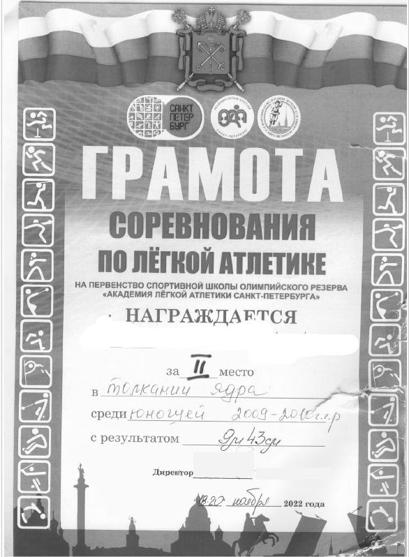
Reference
грамота соревнования по легкой атлетике на первенство спортивной школы олимпийского резерва академия легкой атлетики санкт петербурга награждается за ii место в толкании ядра среди юношей 2009 2010 г р с результатом 9м 43см директор подпись 18 20 ноября 2022 года
Hypothesis
no полено АТЛЕТИКЕ
НА ПЕРВЕНСТВО СПОРТИВНОЙ ШКОЛЫ ОЛИМПИЙСКОГО РЕЗЕРВА
АКАДЕМИЯ ЛЁГКОЙ АТЛЕТИКИ САНКТ-ПЕТЕРБУРГА»
НАГРАЖДАЕТСЯ
за М. место
в ббикании
среди оное
с результатом
_Дироктор.
Alignment
[-грамота]
[-соревнования]
[-по]
[легкой → no]
[атлетике → полено]
[на → АТЛЕТИКЕ]
[первенство → НА]
[спортивной → ПЕРВЕНСТВО]
[школы → СПОРТИВНОЙ]
[олимпийского → ШКОЛЫ]
[резерва → ОЛИМПИЙСКОГО]
[академия → РЕЗЕРВА]
[легкой → АКАДЕМИЯ]
[атлетики → ЛЁГКОЙ]
[санкт → АТЛЕТИКИ]
[петербурга → САНКТ-ПЕТЕРБУРГА»]
[награждается → НАГРАЖДАЕТСЯ]
за
[ii → М.]
место
в
[-толкании]
[ядра → ббикании]
среди
[-юношей]
[-2009]
[-2010]
[-г]
[р → оное]
с
результатом
[-9м]
[-43см]
[-директор]
[-подпись]
[-18]
[-20]
[-ноября]
[-2022]
[года → _Дироктор.]
mws-1053-bb68e4f9ff9d__grayscale
Status: ocr_error
CER: 0.7720
WER: 0.9658
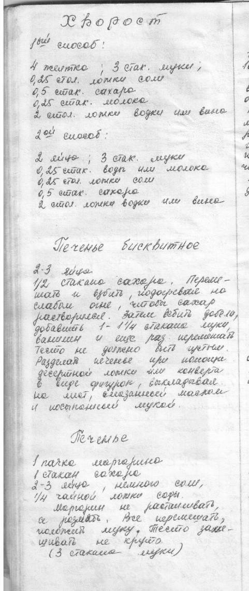
Reference
хворост 1ый способ 4 желтка 3 стак муки 0 25 стол ложки соли 0 5 стак сахара 0 25 стак молока 2 стол ложки водки или вина 2ой способ 2 яйца 3 стак муки 0 25 стак воды или молока 0 25 стол ложки соли 0 5 стак сахара 2 стол ложки водки или вина печенье бисквитное 2 3 яйца 1 2 стакана сахара перемешать и взбить подогревая на слабом огне чтобы сахар растворился затем взбить добела добавить 1 1 1 4 стакана муки ванилин и еще раз перемешать тесто не должно быть густым разделать печенье при помощи десертной ложки или конверта в виде фигурок выкладывая на лист смазанный маслом и посыпанный мукой печенье 1 пачка маргарина 1 стакан сахара 2 3 яйца немного соли 1 4 чайной лодки соды маргарин не растапливать а размять все перемешать положить муку тесто замешивать не круто 3 стакана муки
Hypothesis
LRpopoem
4 necenite | 3 Cae, yer,
Od ей. ломки воли
OS бок. carafe
GAS wink. олово
4 egos. 20men воду dau barre
fb диче | 3 car.
О 5 ак. бор ци чеолоко.
фа ег домко COL
05 wer. eaxepe
д cmos ломка bogue “au buren
eg We |
Teremse Fier bumtoe
aI typo
Yk Сокаию ватой, Mepatil — |
шо u Yun , uogopibal Ko |
даетвариивей . Fata бий #042.)
abut Са же é
Кореи и ве педеейиеьй
Тевёр де филейо a were
Радий ereuebe afr Keeani
ft God аки ver xoHbepe-
a fe, Girkehe gba
ke дот, eS C5 чево.
Ц wetrnesucerd — чеке
Te ehche
t палке. eed ров fuctsed-
4-3 чо =, utunbwo Witt,
Yy waco” Lonee Capit
РИ
|
Г
Alignment
[-хворост]
[-1ый]
[способ → LRpopoem]
4
[-желтка]
[-3]
[-стак]
[муки → necenite]
[0 → |]
[25 → 3]
[стол → Cae,]
[ложки → yer,]
[соли → Od]
[0 → ей.]
[5 → ломки]
[стак → воли]
[сахара → OS]
[0 → бок.]
[25 → carafe]
[стак → GAS]
[молока → wink.]
[2 → олово]
[стол → 4]
[ложки → egos.]
[водки → 20men]
[или → воду]
[вина → dau]
[2ой → barre]
[способ → fb]
[2 → диче]
[яйца → |]
3
[-стак]
[-муки]
[-0]
[-25]
[-стак]
[-воды]
[-или]
[-молока]
[-0]
[-25]
[-стол]
[-ложки]
[соли → car.]
[0 → О]
5
[-стак]
[-сахара]
[2 → ак.]
[стол → бор]
[ложки → ци]
[водки → чеолоко.]
[или → фа]
[вина → ег]
[печенье → домко]
[бисквитное → COL]
[2 → 05]
[3 → wer.]
[яйца → eaxepe]
[1 → д]
[2 → cmos]
[стакана → ломка]
[сахара → bogue]
[перемешать → “au]
[и → buren]
[взбить → eg]
[подогревая → We]
[на → |]
[слабом → Teremse]
[огне → Fier]
[чтобы → bumtoe]
[сахар → aI]
[растворился → typo]
[затем → Yk]
[взбить → Сокаию]
[добела → ватой,]
[добавить → Mepatil]
[1 → —]
[1 → |]
[1 → шо]
[4 → u]
[стакана → Yun]
[муки → ,]
[ванилин → uogopibal]
[и → Ko]
[еще → |]
[раз → даетвариивей]
[перемешать → .]
[тесто → Fata]
[не → бий]
[должно → #042.)]
[быть → abut]
[густым → Са]
[разделать → же]
[печенье → é]
[при → Кореи]
[помощи → и]
[десертной → ве]
[ложки → педеейиеьй]
[или → Тевёр]
[конверта → де]
[в → филейо]
[виде → a]
[фигурок → were]
[выкладывая → Радий]
[на → ereuebe]
[лист → afr]
[смазанный → Keeani]
[маслом → ft]
[и → God]
[посыпанный → аки]
[мукой → ver]
[печенье → xoHbepe-]
[1 → a]
[пачка → fe,]
[маргарина → Girkehe]
[1 → gba]
[стакан → ke]
[сахара → дот,]
[2 → eS]
[3 → C5]
[яйца → чево.]
[немного → Ц]
[соли → wetrnesucerd]
[1 → —]
[4 → чеке]
[чайной → Te]
[лодки → ehche]
[соды → t]
[маргарин → палке.]
[не → eed]
[растапливать → ров]
[а → fuctsed-]
[размять → 4-3]
[все → чо]
[перемешать → =,]
[положить → utunbwo]
[муку → Witt,]
[тесто → Yy]
[замешивать → waco”]
[не → Lonee]
[круто → Capit]
[3 → РИ]
[стакана → |]
[муки → Г]
mws-1062-a397ec13b637__grayscale
Status: ocr_error
CER: 0.8405
WER: 0.9825
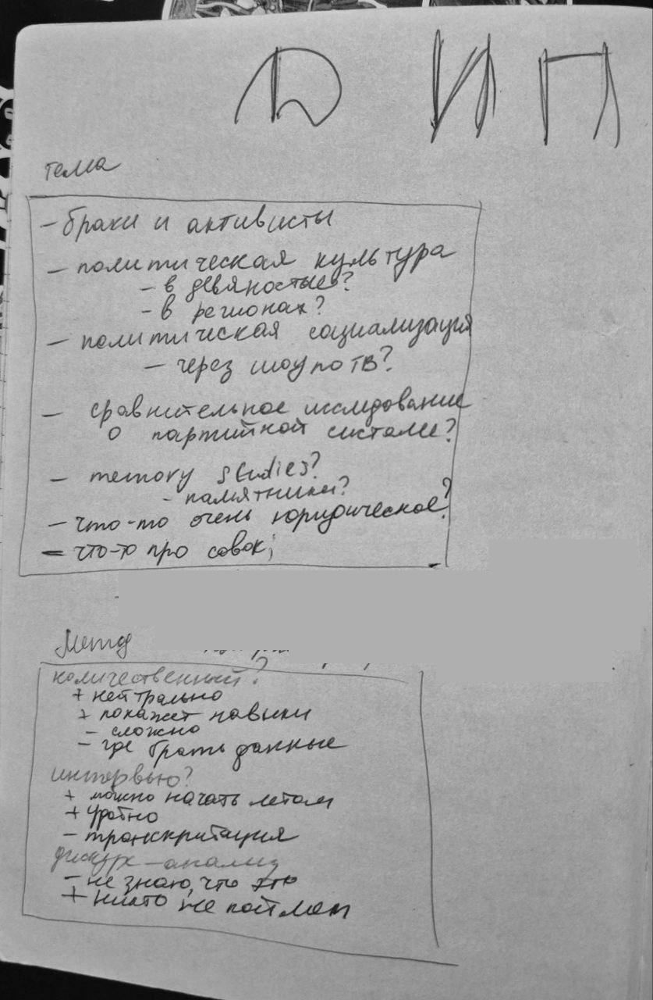
Reference
дип тема браки и активисты политическая культура в девяностые в регионах политическая социализация через шоу по тв сравнительное исследование и партийной системе memory studies памятники что то очень юридическое что то про совок метод количественный нейтрально покажет навыки сложно где брать данные интервью можно начать летом удобно транскрибация дискурс анализ не знаю что это никто не поймет
Hypothesis
Taste
}
| Space и пати деи
чат ee |
фи
ре U0 Har. ?
| — nor mA UCAS подоле
— Upeg ung no 76%
|_— opoknuxertnet име дни.
A eee prnssnn ЮО сета
nnn и
he ..
fg. Greet
| +72 обеим
оо ;
oe
Alignment
[-дип]
[-тема]
[-браки]
[-и]
[-активисты]
[-политическая]
[-культура]
[-в]
[-девяностые]
[-в]
[регионах → Taste]
[политическая → }]
[социализация → |]
[через → Space]
[шоу → и]
[по → пати]
[тв → деи]
[сравнительное → чат]
[исследование → ee]
[и → |]
[партийной → фи]
[системе → ре]
[memory → U0]
[studies → Har.]
[памятники → ?]
[что → |]
[то → —]
[очень → nor]
[юридическое → mA]
[что → UCAS]
[то → подоле]
[про → —]
[совок → Upeg]
[метод → ung]
[количественный → no]
[нейтрально → 76%]
[покажет → |_—]
[навыки → opoknuxertnet]
[сложно → име]
[где → дни.]
[брать → A]
[данные → eee]
[интервью → prnssnn]
[можно → ЮО]
[начать → сета]
[летом → nnn]
[удобно → и]
[транскрибация → he]
[дискурс → ..]
[анализ → fg.]
[не → Greet]
[знаю → |]
[что → +72]
[это → обеим]
[никто → оо]
[не → ;]
[поймет → oe]
mws-107-3770f8ccac19__grayscale
Status: ocr_error
CER: 0.0467
WER: 0.1329
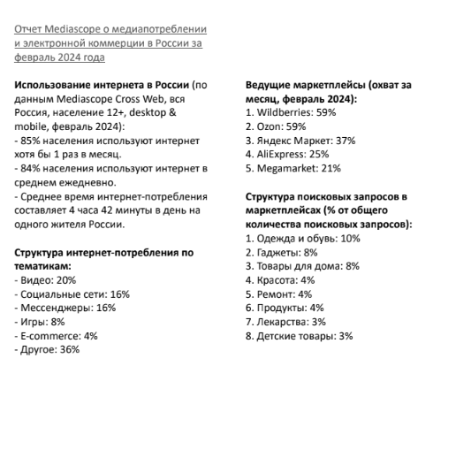
Reference
отчет mediascope о медиапотреблении и электронной коммерции в россии за февраль 2024 года использование интернета в россии по данным mediascope cross web вся россия население 12 desktop mobile февраль 2024 85 населения используют интернет хотя бы 1 раз в месяц 84 населения используют интернет в среднем ежедневно среднее время интернет потребления составляет 4 часа 42 минуты в день на одного жителя россии структура интернет потребления по тематикам видео 20 социальные сети 16 мессенджеры 16 игры 8 e commerce 4 другое 36 ведущие маркетплейсы охват за месяц февраль 2024 1 wildberries 59 2 ozon 59 3 яндекс маркет 37 4 aliexpress 25 5 megamarket 21 структура поисковых запросов в маркетплейсах от общего количества поисковых запросов 1 одежда и обувь 10 2 гаджеты 8 3 товары для дома 8 4 красота 4 5 ремонт 4 6 продукты 4 7 лекарства 3 8 детские товары 3
Hypothesis
Отчет Mediascope о медиапотреблении
и электронной номмерции в России за
‘февраль 2024 года
‘использование интернета в России (по
‘данным Mediascope Cross Web, вся
Россия, население 12+, desktop &
mobile, февраль 2024):
- 85% населения используют интернет
хотя бы 1 pas в месяц.
- 84% населения используют интернет 6
cpeanem ежедневно.
= Среднее время интернет-потребления
составляет 4 часа 42 минуты в день на
одного жителя России.
Структура интернет-потребления no
тематикам:
= Видео: 20%
- Социальные сети: 16%
- Мессенджеры: 16%
Игры: 8%
- Ecommerce: 4%
- Другое: 36%
Ведущие маркетплейсы (охват за
‘mecau, февраль 2024):
1. Wildberries: 59%
2. Oz0n: 59%
3. Яндекс Маркет: 37%
4. AliExpress: 25%
5. Megamarket: 21%
Структура поисковых запросов:
`маркетплейсах (% от общего
ноличества поисковых запросов):
- Одежда и обувь: 10%
. Гаджеты: 8%
. Товары для дома: 8%
Красота: 4%
. Ремонт: 4%
. Продукты: 4%
. Лекарства: 3%
. Детские товары: 3%
Alignment
[отчет → Отчет]
[mediascope → Mediascope]
о
медиапотреблении
и
электронной
[коммерции → номмерции]
в
[россии → России]
за
[февраль → ‘февраль]
2024
года
[использование → ‘использование]
интернета
в
[россии → России]
[по → (по]
[данным → ‘данным]
[mediascope → Mediascope]
[cross → Cross]
[web → Web,]
вся
[россия → Россия,]
население
[12 → 12+,]
desktop
[+&]
[mobile → mobile,]
февраль
[+2024):]
[2024 → -]
[85 → 85%]
населения
используют
интернет
хотя
бы
1
[раз → pas]
в
[+месяц.]
[месяц → -]
[84 → 84%]
населения
используют
интернет
[в → 6]
[среднем → cpeanem]
[ежедневно → ежедневно.]
[среднее → =]
[время → Среднее]
[интернет → время]
[потребления → интернет-потребления]
составляет
4
часа
42
минуты
в
день
на
одного
жителя
[+России.]
[+Структура]
[+интернет-потребления]
[россии → no]
[структура → тематикам:]
[интернет → =]
[потребления → Видео:]
[по → 20%]
[тематикам → -]
[видео → Социальные]
[20 → сети:]
[социальные → 16%]
[сети → -]
[16 → Мессенджеры:]
[мессенджеры → 16%]
[16 → Игры:]
[игры → 8%]
[8 → -]
[e → Ecommerce:]
[commerce → 4%]
[4 → -]
[другое → Другое:]
[36 → 36%]
[ведущие → Ведущие]
маркетплейсы
[охват → (охват]
за
[месяц → ‘mecau,]
февраль
[2024 → 2024):]
[1 → 1.]
[wildberries → Wildberries:]
[59 → 59%]
[2 → 2.]
[ozon → Oz0n:]
[59 → 59%]
[3 → 3.]
[яндекс → Яндекс]
[маркет → Маркет:]
[37 → 37%]
[4 → 4.]
[aliexpress → AliExpress:]
[25 → 25%]
[5 → 5.]
[megamarket → Megamarket:]
[21 → 21%]
[структура → Структура]
поисковых
[запросов → запросов:]
[в → `маркетплейсах]
[маркетплейсах → (%]
от
общего
[количества → ноличества]
поисковых
[запросов → запросов):]
[1 → -]
[одежда → Одежда]
и
[обувь → обувь:]
[10 → 10%]
[2 → .]
[гаджеты → Гаджеты:]
[8 → 8%]
[3 → .]
[товары → Товары]
для
[-дома]
[8 → дома:]
[4 → 8%]
[красота → Красота:]
[4 → 4%]
[5 → .]
[ремонт → Ремонт:]
[4 → 4%]
[6 → .]
[продукты → Продукты:]
[4 → 4%]
[7 → .]
[лекарства → Лекарства:]
[3 → 3%]
[8 → .]
[детские → Детские]
[товары → товары:]
[3 → 3%]
mws-1070-3eb2edcd0fc2__grayscale
Status: ocr_error
CER: 1.0000
WER: 1.0000
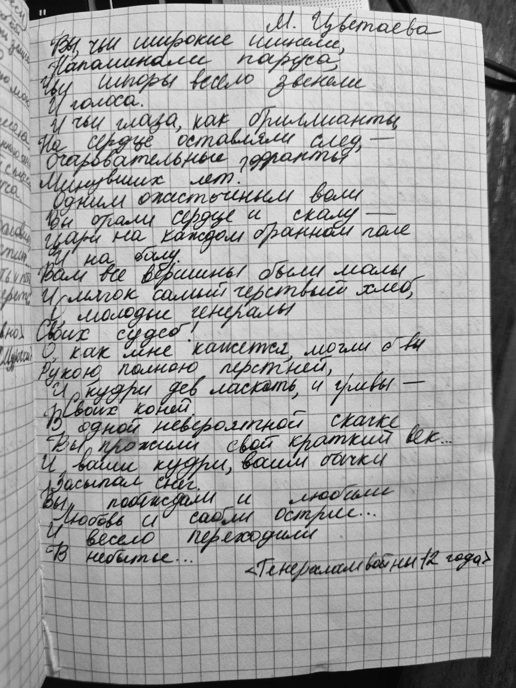
Reference
м цветаева вы чьи широкие шинели напоминали паруса чьи шпоры весело звенели и голоса и чьи глаза как бриллианты на сердце оставляли след очаровательные франты минувших лет одним ожесточеньем воли вы брали сердце и скалу цари на каждом бранном поле и на балу вам все вершины были малы и мягок самый черствый хлеб о молодые генералы своих судеб о как мне кажется могли б вы рукою полною перстней и кудри дев ласкать и гривы своих коней в одной невероятной скачке вы прожили свой краткий век и ваши кудри ваши бачки засыпал снег вы побеждали и любили любовь и сабли острие и весело переходили в небытье генералам войны 12 года
Hypothesis
Alignment
[-м]
[-цветаева]
[-вы]
[-чьи]
[-широкие]
[-шинели]
[-напоминали]
[-паруса]
[-чьи]
[-шпоры]
[-весело]
[-звенели]
[-и]
[-голоса]
[-и]
[-чьи]
[-глаза]
[-как]
[-бриллианты]
[-на]
[-сердце]
[-оставляли]
[-след]
[-очаровательные]
[-франты]
[-минувших]
[-лет]
[-одним]
[-ожесточеньем]
[-воли]
[-вы]
[-брали]
[-сердце]
[-и]
[-скалу]
[-цари]
[-на]
[-каждом]
[-бранном]
[-поле]
[-и]
[-на]
[-балу]
[-вам]
[-все]
[-вершины]
[-были]
[-малы]
[-и]
[-мягок]
[-самый]
[-черствый]
[-хлеб]
[-о]
[-молодые]
[-генералы]
[-своих]
[-судеб]
[-о]
[-как]
[-мне]
[-кажется]
[-могли]
[-б]
[-вы]
[-рукою]
[-полною]
[-перстней]
[-и]
[-кудри]
[-дев]
[-ласкать]
[-и]
[-гривы]
[-своих]
[-коней]
[-в]
[-одной]
[-невероятной]
[-скачке]
[-вы]
[-прожили]
[-свой]
[-краткий]
[-век]
[-и]
[-ваши]
[-кудри]
[-ваши]
[-бачки]
[-засыпал]
[-снег]
[-вы]
[-побеждали]
[-и]
[-любили]
[-любовь]
[-и]
[-сабли]
[-острие]
[-и]
[-весело]
[-переходили]
[-в]
[-небытье]
[-генералам]
[-войны]
[-12]
[-года]
mws-1074-97b8ca325d6b__grayscale
Status: ocr_error
CER: 0.8088
WER: 0.9781
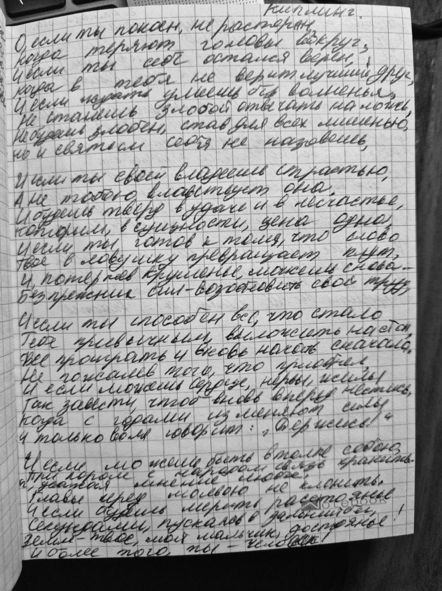
Reference
киплинг о если ты спокоен не растерян когда теряют головы вокруг и если ты себе остался верен когда в тебя не верит лучший друг и если ждать умеешь без волненья не станешь злобой отвечать на ложь не будешь злобен став для всех мишенью но и святым себя не назовешь и если ты своей владеешь страстью а не тобою властвует она и будешь тверд в удаче и в несчастье которым в сущности цена одна и если ты готов к тому что слово твое в ловушку превращает плут и потерпев крушенье можешь снова без прежних сил возобновить свой труд и если ты способен все что стало тебе привычным выложить на стол все проиграть и вновь начать сначала не пожалев того что приобрел и если можешь сердце нервы жилы так завести чтобы вперед нестись когда с годами изменяют силы и только воля говорит держись и если можешь быть в толпе собою при короле с народом связь хранить и уважая мнение любое главы перед молвою не клонить и если будешь мерить расстоянье секундами пускаясь в дальний бег земля твое мой мальчик достоянье и более того ты человек
Hypothesis
ое, Я исх
о ПИ te РЕ
pads | 22 | одеяние? д *,
АУ W2E РИ. ев tip, 42727 ed IO le
и myers telly Sth bo РН
77722. 7 Своей РАЯ 202 ое,
Сре ЗАРЕ АЙ ei ед
7 еды CEO coy SCL, И
ОР Meee Seg 222224 Cy pdt Pg LO
НР Olt gyn Sete,
777772 Е AF the РАЙ,
(Za те Ce. 44 277 IZ
ae г, Е ВЕ wd Ар
ИЕ. ticég eed, eZ Ze
т bly oacab ier Choe GB
Weta ab? БеЗ д Vib Р-Р О
7.2 РОНС: cee ined дер lh,
Vel Yoorgp ant yy Geebe Haris Cele tld,
РЖ Bech, Uae, Yt,
й Е А а и 2 рр
| А bic hb Gh Atlee tHe,
aa де
ИЯ деле =
whe & WEEE |
ий: ия ты
Е 4
SR
ка x
We ee sae
epee!
Alignment
[-киплинг]
[-о]
[-если]
[-ты]
[-спокоен]
[-не]
[-растерян]
[-когда]
[-теряют]
[-головы]
[-вокруг]
[-и]
[-если]
[-ты]
[-себе]
[-остался]
[-верен]
[-когда]
[-в]
[-тебя]
[-не]
[-верит]
[-лучший]
[-друг]
[-и]
[-если]
[ждать → ое,]
[умеешь → Я]
[без → исх]
[волненья → о]
[не → ПИ]
[станешь → te]
[злобой → РЕ]
[отвечать → pads]
[на → |]
[ложь → 22]
[не → |]
[будешь → одеяние?]
[злобен → д]
[став → *,]
[для → АУ]
[всех → W2E]
[мишенью → РИ.]
[но → ев]
[и → tip,]
[святым → 42727]
[себя → ed]
[не → IO]
[назовешь → le]
и
[если → myers]
[ты → telly]
[своей → Sth]
[владеешь → bo]
[страстью → РН]
[а → 77722.]
[не → 7]
[тобою → Своей]
[властвует → РАЯ]
[она → 202]
[и → ое,]
[будешь → Сре]
[тверд → ЗАРЕ]
[в → АЙ]
[удаче → ei]
[и → ед]
[в → 7]
[несчастье → еды]
[которым → CEO]
[в → coy]
[сущности → SCL,]
[цена → И]
[одна → ОР]
[и → Meee]
[если → Seg]
[ты → 222224]
[готов → Cy]
[к → pdt]
[тому → Pg]
[что → LO]
[слово → НР]
[твое → Olt]
[в → gyn]
[ловушку → Sete,]
[превращает → 777772]
[плут → Е]
[и → AF]
[потерпев → the]
[крушенье → РАЙ,]
[можешь → (Za]
[снова → те]
[без → Ce.]
[прежних → 44]
[сил → 277]
[возобновить → IZ]
[свой → ae]
[труд → г,]
[и → Е]
[если → ВЕ]
[ты → wd]
[способен → Ар]
[все → ИЕ.]
[что → ticég]
[стало → eed,]
[тебе → eZ]
[привычным → Ze]
[выложить → т]
[на → bly]
[стол → oacab]
[все → ier]
[проиграть → Choe]
[и → GB]
[вновь → Weta]
[начать → ab?]
[сначала → БеЗ]
[не → д]
[пожалев → Vib]
[того → Р-Р]
[что → О]
[приобрел → 7.2]
[и → РОНС:]
[если → cee]
[можешь → ined]
[сердце → дер]
[нервы → lh,]
[жилы → Vel]
[так → Yoorgp]
[завести → ant]
[чтобы → yy]
[вперед → Geebe]
[нестись → Haris]
[когда → Cele]
[с → tld,]
[годами → РЖ]
[изменяют → Bech,]
[силы → Uae,]
[и → Yt,]
[только → й]
[воля → Е]
[говорит → А]
[держись → а]
и
[-если]
[-можешь]
[-быть]
[-в]
[-толпе]
[-собою]
[-при]
[-короле]
[-с]
[-народом]
[-связь]
[хранить → 2]
[и → рр]
[уважая → |]
[мнение → А]
[любое → bic]
[главы → hb]
[перед → Gh]
[молвою → Atlee]
[не → tHe,]
[клонить → aa]
[и → де]
[если → ИЯ]
[будешь → деле]
[мерить → =]
[расстоянье → whe]
[секундами → &]
[пускаясь → WEEE]
[в → |]
[дальний → ий:]
[бег → ия]
[земля → ты]
[твое → Е]
[мой → 4]
[мальчик → SR]
[достоянье → ка]
[и → x]
[более → We]
[того → ee]
[ты → sae]
[человек → epee!]
mws-1078-277f3a9ee996__grayscale
Status: ocr_error
CER: 0.8533
WER: 0.9850
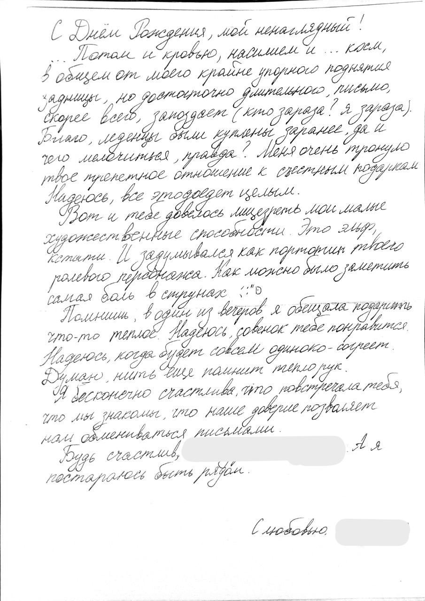
Reference
с днем рождения мой ненаглядный потом и кровью насилием и кхм в общем от моего крайне упорного поднятия задницы но достаточно длительного письмо скорее всего запоздает кто зараза я зараза благо леденцы были куплены заранее да и чего мелочиться правда меня очень тронуло твое трепетное отношение к съестным подаркам надеюсь все это доедет целым вот и тебе довелось лицезреть мои малые художественные способности это эльф кстати и задумывался как портотип твоего ролевого персонажа как можно было заметить самая боль в струнах помнишь в один из вечеров я обещала подарить что то теплое надеюсь совенок тебе понравится надеюсь когда будет совсем одиноко согреет думаю нить еще помнит тепло рук я бесконечно счастлива что повстречала тебя что мы знакомы что наше доверие позволяет нам обмениваться письмами будь счастлив а я постараюсь быть рядом с любовью
Hypothesis
‚Фот № Md, Hilti le... Keb,
Ke ee)
dence bach, ит наи gg)
ip реа
ие mponembce орибеиание # onan обр
A gga he et oe иди
LYGOPCEEL 4. Loe Z
ee
ид Imo РР
Y pay uubater Kak PQ
и Де ори идет
Teupuun , $0 Вер 2 ohare зо Ne |
Ly bape, ив аи plo Е.
Я ВАСРАО ppactecide, 0 еее ress,
yuo At jpeacowier, ip Halil popbasdirr
HAM bases РАН
Page рее, Aa
VOC nA AOC Sur ик
71997
Alignment
[-с]
[-днем]
[-рождения]
[-мой]
[-ненаглядный]
[-потом]
[-и]
[-кровью]
[-насилием]
[-и]
[-кхм]
[-в]
[-общем]
[-от]
[-моего]
[-крайне]
[-упорного]
[-поднятия]
[-задницы]
[-но]
[-достаточно]
[-длительного]
[-письмо]
[-скорее]
[-всего]
[-запоздает]
[кто → ‚Фот]
[зараза → №]
[я → Md,]
[зараза → Hilti]
[благо → le...]
[леденцы → Keb,]
[были → Ke]
[куплены → ee)]
[заранее → dence]
[да → bach,]
[и → ит]
[чего → наи]
[мелочиться → gg)]
[правда → ip]
[меня → реа]
[очень → ие]
[тронуло → mponembce]
[твое → орибеиание]
[трепетное → #]
[отношение → onan]
[к → обр]
[съестным → A]
[подаркам → gga]
[надеюсь → he]
[все → et]
[это → oe]
[доедет → иди]
[целым → LYGOPCEEL]
[вот → 4.]
[и → Loe]
[тебе → Z]
[довелось → ee]
[лицезреть → ид]
[мои → Imo]
[малые → РР]
[художественные → Y]
[способности → pay]
[это → uubater]
[эльф → Kak]
[кстати → PQ]
и
[-задумывался]
[-как]
[-портотип]
[-твоего]
[-ролевого]
[-персонажа]
[-как]
[-можно]
[-было]
[-заметить]
[-самая]
[-боль]
[-в]
[-струнах]
[-помнишь]
[-в]
[-один]
[-из]
[-вечеров]
[-я]
[-обещала]
[-подарить]
[-что]
[-то]
[теплое → Де]
[надеюсь → ори]
[совенок → идет]
[тебе → Teupuun]
[понравится → ,]
[надеюсь → $0]
[когда → Вер]
[будет → 2]
[совсем → ohare]
[одиноко → зо]
[согреет → Ne]
[думаю → |]
[нить → Ly]
[еще → bape,]
[помнит → ив]
[тепло → аи]
[рук → plo]
[я → Е.]
[бесконечно → Я]
[счастлива → ВАСРАО]
[что → ppactecide,]
[повстречала → 0]
[тебя → еее]
[что → ress,]
[мы → yuo]
[знакомы → At]
[что → jpeacowier,]
[наше → ip]
[доверие → Halil]
[позволяет → popbasdirr]
[нам → HAM]
[обмениваться → bases]
[письмами → РАН]
[будь → Page]
[счастлив → рее,]
[а → Aa]
[я → VOC]
[постараюсь → nA]
[быть → AOC]
[рядом → Sur]
[с → ик]
[любовью → 71997]
mws-1083-3ceedfa0056c__grayscale
Status: ocr_error
CER: 0.8480
WER: 0.9773
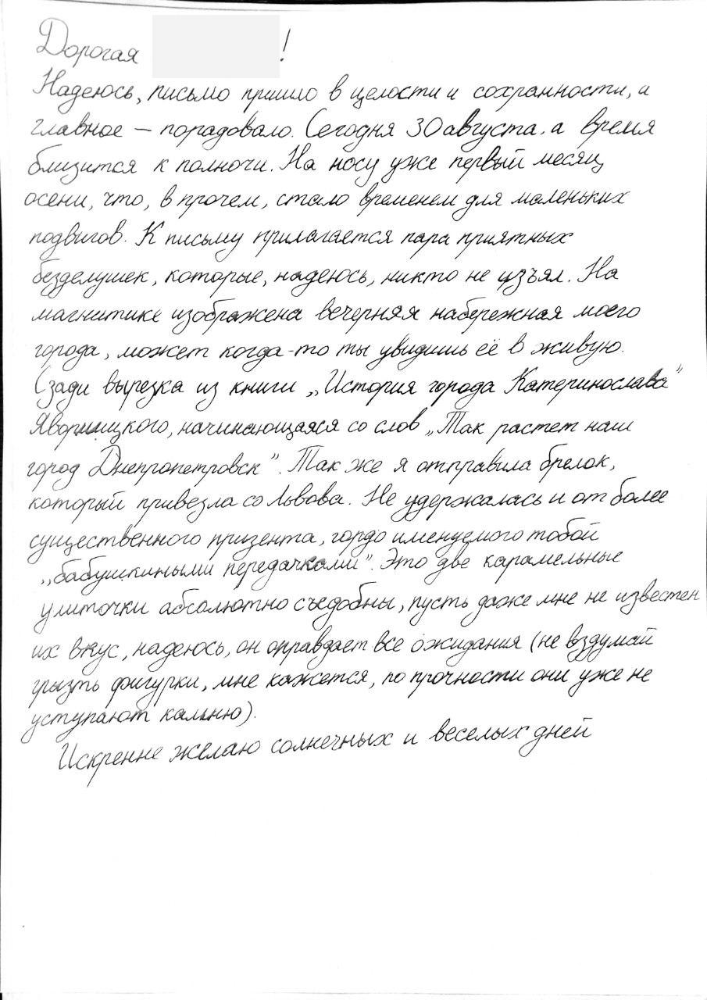
Reference
дорогая надеюсь письмо пришло в целости и сохранности и главное порадовало сегодня 30 августа а время близится к полночи на носу уже первый месяц осени что впрочем стало временем для маленьких подвигов к письму прилагается пара приятных безделушек которые надеюсь никто не изъял на магнитике изображена вечерняя набережная моего города может когда то ты увидишь ее в живую сзади вырезка из книги история города катеринослава яворницкого начинающаяся со слов так растет наш город днепропетровск так же я отправила брелок который привезла со львова не удержалась и от более существенного призента гордо именуемого тобой бабушкиными передачками это две карамельные улиточки абсолютно съедобны пусть даже мне не известен их вкус надеюсь он оправдает все ожидания не вздумай грызть фигурки мне кажется по прочности они уже не уступают камню искренне желаю солнечных и веселых дней
Hypothesis
пи 1 оао HA SOabuycpia, a
Sueyumnes ра 2 ha ce ool продид Hecht,
ФА, Urb, nz, Credo braid, guid dadihiifde®
рады, PUY tit, НЕА aegis, ера He yp ise. Fea
соленое Wrst Hee Aergesian wadzeeriiah Meio
ie „рост ep Oe fled её OIG
и Я пни Ucmeyuer иг Niangeipocivee
Dade crap cl cob, Mak pacrien Hai
ar me Mae ee отрава феи,
и 207 .
ий ee aa
роли абон с пей ychns ре ние He Gh pote,
Wa ус, cp 2 и (ie Gygpuccie
Alignment
[-дорогая]
[-надеюсь]
[-письмо]
[-пришло]
[-в]
[-целости]
[-и]
[-сохранности]
[-и]
[-главное]
[-порадовало]
[-сегодня]
[-30]
[-августа]
[-а]
[-время]
[-близится]
[-к]
[-полночи]
[-на]
[-носу]
[-уже]
[-первый]
[-месяц]
[-осени]
[-что]
[-впрочем]
[-стало]
[-временем]
[-для]
[-маленьких]
[-подвигов]
[-к]
[-письму]
[-прилагается]
[-пара]
[-приятных]
[-безделушек]
[-которые]
[-надеюсь]
[-никто]
[не → пи]
[изъял → 1]
[на → оао]
[магнитике → HA]
[изображена → SOabuycpia,]
[вечерняя → a]
[набережная → Sueyumnes]
[моего → ра]
[города → 2]
[может → ha]
[когда → ce]
[то → ool]
[ты → продид]
[увидишь → Hecht,]
[ее → ФА,]
[в → Urb,]
[живую → nz,]
[сзади → Credo]
[вырезка → braid,]
[из → guid]
[книги → dadihiifde®]
[история → рады,]
[города → PUY]
[катеринослава → tit,]
[яворницкого → НЕА]
[начинающаяся → aegis,]
[со → ера]
[слов → He]
[так → yp]
[растет → ise.]
[наш → Fea]
[город → соленое]
[днепропетровск → Wrst]
[так → Hee]
[же → Aergesian]
[я → wadzeeriiah]
[отправила → Meio]
[брелок → ie]
[который → „рост]
[привезла → ep]
[со → Oe]
[львова → fled]
[не → её]
[удержалась → OIG]
и
[-от]
[-более]
[-существенного]
[-призента]
[-гордо]
[именуемого → Я]
[тобой → пни]
[бабушкиными → Ucmeyuer]
[передачками → иг]
[это → Niangeipocivee]
[две → Dade]
[карамельные → crap]
[улиточки → cl]
[абсолютно → cob,]
[съедобны → Mak]
[пусть → pacrien]
[даже → Hai]
[мне → ar]
[не → me]
[известен → Mae]
[их → ee]
[вкус → отрава]
[надеюсь → феи,]
[он → и]
[оправдает → 207]
[все → .]
[ожидания → ий]
[не → ee]
[вздумай → aa]
[грызть → роли]
[фигурки → абон]
[мне → с]
[кажется → пей]
[по → ychns]
[прочности → ре]
[они → ние]
[уже → He]
[не → Gh]
[уступают → pote,]
[камню → Wa]
[искренне → ус,]
[желаю → cp]
[солнечных → 2]
и
[веселых → (ie]
[дней → Gygpuccie]
mws-1085-d78d87ac803c__grayscale
Status: ocr_error
CER: 0.8172
WER: 1.0796
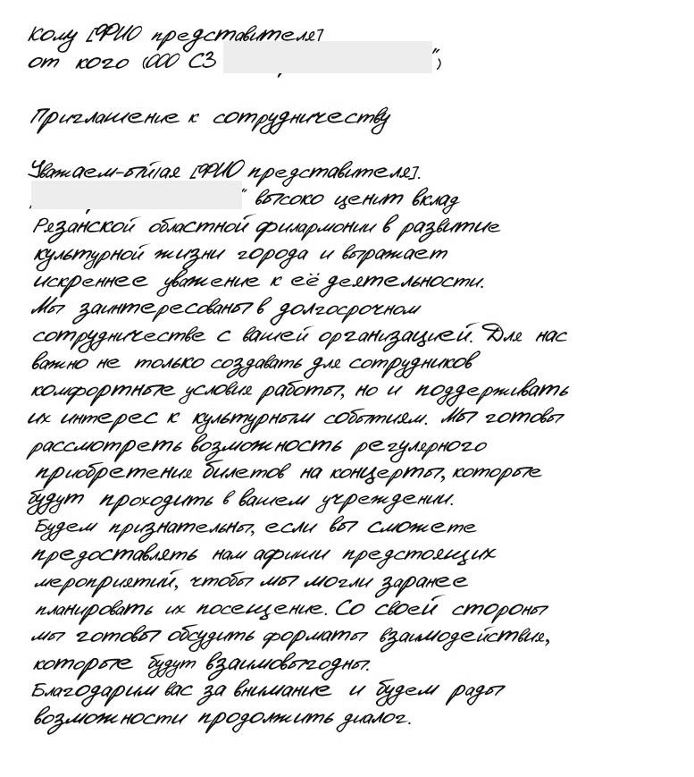
Reference
кому фио представителя от кого ооо сз приглашение к сотрудничеству уважаем ый ая фио представителя высоко ценит вклад рязанской областной филармонии в развитие культурной жизни города и выражает искреннее уважение к ее деятельности мы заинтересованы в долгосрочном сотрудничестве с вашей организацией для нас важно не только создавать для сотрудников комфортные условия работы но и поддерживать их интерес к культурным событиям мы готовы рассмотреть возможность регулярного приобретения билетов на концерты которые будут проходить в вашем учреждении будем признательны если вы сможете предоставлять нам афиши предстоящих мероприятий чтобы мы могли заранее планировать их посещение со своей стороны мы готовы обсудить форматы взаимодействия которые будут взаимовыгодны благодарим вас за внимание и будем рады возможности продолжить диалог
Hypothesis
А LFW преси ителей
om коее C0 C3 , )
Uppvr2daele Hue © compygureeciny
komaca-r7ijae [FW npegcrabiameAdl.
| й * Brow цены? бу
Peganctott осн gppuisypuitctiar 6 paghiintre
т ей 2 2Opapa uv bpamaen
wciypemee еле. Kee = MEHOCV IL.
Mr Bane pe CAME? $ ремегереено
compypnrtectibe. C ие? prangaiucl, Rute Hac
лено ne mosého содрать fe сотр”
MOpgpVIHEre gerbe. PQECINE?, ИФ перрерне к
ик итерес © MYA YPHEAM соб, M67 гот
раеаметуретте bogetiote нося резфбриете
wciperme tiie binemol Ha Kotlige pIIE7, KoInapere
eo repoxopiine b baited убретрени:
Буре Ap GilaleMHe?, ect 7 CuOmeme
APE POCIIEALINE Wat AGDIMEIL Mifp2ZCIIOLEL UK
wcponpusnit, 070057 MEP MODAL Bpuce
ndatlypolite wk поселение. Co се chapons
cr Lorne? cbeygeané pyran вание деть,
womapsre брут Cpainucter2og Her,
5.422294 ac ga Gundqnre # Igo рат
И Е
Alignment
[+А]
[+LFW]
[+преси]
[+ителей]
[+om]
[+коее]
[кому → C0]
[фио → C3]
[представителя → ,]
[от → )]
[кого → Uppvr2daele]
[ооо → Hue]
[сз → ©]
[приглашение → compygureeciny]
[к → komaca-r7ijae]
[сотрудничеству → [FW]
[уважаем → npegcrabiameAdl.]
[ый → |]
[ая → й]
[фио → *]
[представителя → Brow]
[высоко → цены?]
[ценит → бу]
[вклад → Peganctott]
[рязанской → осн]
[областной → gppuisypuitctiar]
[филармонии → 6]
[в → paghiintre]
[развитие → т]
[культурной → ей]
[жизни → 2]
[города → 2Opapa]
[и → uv]
[выражает → bpamaen]
[искреннее → wciypemee]
[уважение → еле.]
[к → Kee]
[ее → =]
[деятельности → MEHOCV]
[мы → IL.]
[заинтересованы → Mr]
[в → Bane]
[долгосрочном → pe]
[сотрудничестве → CAME?]
[с → $]
[вашей → ремегереено]
[организацией → compypnrtectibe.]
[для → C]
[нас → ие?]
[важно → prangaiucl,]
[не → Rute]
[только → Hac]
[создавать → лено]
[для → ne]
[сотрудников → mosého]
[комфортные → содрать]
[условия → fe]
[работы → сотр”]
[но → MOpgpVIHEre]
[и → gerbe.]
[поддерживать → PQECINE?,]
[их → ИФ]
[интерес → перрерне]
к
[+ик]
[+итерес]
[+©]
[+MYA]
[+YPHEAM]
[+соб,]
[+M67]
[+гот]
[+раеаметуретте]
[+bogetiote]
[+нося]
[культурным → резфбриете]
[событиям → wciperme]
[мы → tiie]
[готовы → binemol]
[рассмотреть → Ha]
[возможность → Kotlige]
[регулярного → pIIE7,]
[приобретения → KoInapere]
[билетов → eo]
[на → repoxopiine]
[концерты → b]
[которые → baited]
[будут → убретрени:]
[проходить → Буре]
[в → Ap]
[вашем → GilaleMHe?,]
[учреждении → ect]
[будем → 7]
[признательны → CuOmeme]
[если → APE]
[вы → POCIIEALINE]
[сможете → Wat]
[предоставлять → AGDIMEIL]
[нам → Mifp2ZCIIOLEL]
[афиши → UK]
[предстоящих → wcponpusnit,]
[мероприятий → 070057]
[чтобы → MEP]
[мы → MODAL]
[могли → Bpuce]
[заранее → ndatlypolite]
[планировать → wk]
[их → поселение.]
[посещение → Co]
[со → се]
[своей → chapons]
[стороны → cr]
[мы → Lorne?]
[готовы → cbeygeané]
[обсудить → pyran]
[форматы → вание]
[взаимодействия → деть,]
[которые → womapsre]
[будут → брут]
[взаимовыгодны → Cpainucter2og]
[благодарим → Her,]
[вас → 5.422294]
[за → ac]
[внимание → ga]
[и → Gundqnre]
[будем → #]
[рады → Igo]
[возможности → рат]
[продолжить → И]
[диалог → Е]
mws-111-284c9b160131__grayscale
Status: ocr_error
CER: 0.0078
WER: 0.0382
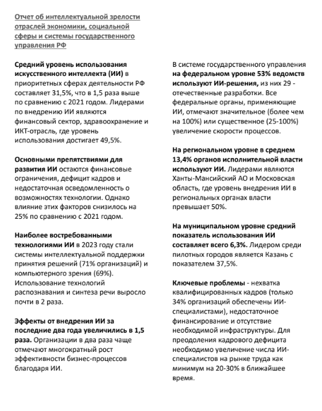
Reference
отчет об интеллектуальной зрелости отраслей экономики социальной сферы и системы государственного управления рф средний уровень использования искусственного интеллекта ии в приоритетных сферах деятельности рф составляет 31 5 что в 1 5 раза выше по сравнению с 2021 годом лидерами по внедрению ии являются финансовый сектор здравоохранение и икт отрасль где уровень использования достигает 49 5 основными препятствиями для развития ии остаются финансовые ограничения дефицит кадров и недостаточная осведомленность о возможностях технологии однако влияние этих факторов снизилось на 25 по сравнению с 2021 годом наиболее востребованными технологиями ии в 2023 году стали системы интеллектуальной поддержки принятия решений 71 организаций и компьютерного зрения 69 использование технологий распознавания и синтеза речи выросло почти в 2 раза эффекты от внедрения ии за последние два года увеличились в 1 5 раза организации в два раза чаще отмечают многократный рост эффективности бизнес процессов благодаря ии в системе государственного управления на федеральном уровне 53 ведомств используют ии решения из них 29 отечественные разработки все федеральные органы применяющие ии отмечают значительное более чем на 100 или существенное 25 100 увеличение скорости процессов на региональном уровне в среднем 13 4 органов исполнительной власти используют ии лидерами являются ханты мансийский ао и московская область где уровень внедрения ии в региональных органах власти превышает 50 на муниципальном уровне средний показатель использования ии составляет всего 6 3 лидером среди пилотных городов является казань с показателем 37 5 ключевые проблемы нехватка квалифицированных кадров только 34 организаций обеспечены ии специалистами недостаточное финансирование и отсутствие необходимой инфраструктуры для преодоления кадрового дефицита необходимо увеличение числа ии специалистов на рынке труда как минимум на 20 30 в ближайшее время
Hypothesis
‘отчет 06 интеллектуальной зрелости
‘отраслей экономики, социальной
сферы и системы государственного
управления РФ
Средний уровень использования
искусственного интеллекта (ИИ) в
приоритетных сферах деятельности PO
составляет 31,5%, что в 1,5 pasa выше
по сравнению с 2021 годом. Лидерами
повнедрению ИИ являются
финансовый сектор, здравоохранение и
ИКТ-отрасль, где уровень
использования достигает 49,5%.
Основными препятствиями для
развития ИИ остаются финансовые:
ограничения, дефицит кадров и
недостаточная осведомленность о
возможностях технологии. Однако.
влияние этих факторов снизилось на
25% по сравнению с 2021 годом.
Наиболее востребованными
технологиями ИИ в 2023 году стали.
системы интеллектуальной поддержки
принятия решений (71% организаций) и
компьютерного зрения (69%).
Использование технологий
распознавания и синтеза речи выросло.
почти в2 раза.
эффекты от внедрения ИИ за
последние два года увеличились в 1,5
раза. Организации в два раза чаще
отмечают многократный рост
эффективности бизнес-процессов
благодаря ИИ.
В системе государственного управления
на федеральном уровне 53% ведомств
‘используют ИИ-решения, из них 29 -
отечественные разработки. Все
федеральные органы, применяющие
ИИ, отмечают значительное (более чем
на 100%) или существенное (25-10%)
увеличение скорости процессов.
Ha региональном уровне в среднем,
13,4% органов исполнительной власти
‘используют ИИ. Лидерами являются
Ханты-Мансийский AO и Московская
область, где уровень внедрения ИИ в
региональных органах власти,
превышает 50%.
на муниципальном уровне средний
показатель использования ИИ
составляет всего 6,3%. Лидером среди
пилотных городов является Казань с
показателем 37,5%.
Ключевые проблемы - нехватка
квалифицированных кадров (только
34% организаций обеспечены ИИ-
специалистами), недостаточное
финансирование и отсутствие
необходимой инфраструктуры. Для
преодоления кадрового дефицита
необходимо увеличение числа ИИ-
специалистов на рынке труда как.
минимум на 20-30% в ближайшее
время,
Alignment
[отчет → ‘отчет]
[об → 06]
интеллектуальной
зрелости
[отраслей → ‘отраслей]
[экономики → экономики,]
социальной
сферы
и
системы
государственного
управления
[рф → РФ]
[средний → Средний]
уровень
использования
искусственного
интеллекта
[ии → (ИИ)]
в
приоритетных
сферах
деятельности
[рф → PO]
составляет
[-31]
[5 → 31,5%,]
что
в
[-1]
[5 → 1,5]
[раза → pasa]
выше
по
сравнению
с
2021
[-годом]
[лидерами → годом.]
[по → Лидерами]
[внедрению → повнедрению]
[ии → ИИ]
являются
финансовый
[сектор → сектор,]
здравоохранение
и
[-икт]
[отрасль → ИКТ-отрасль,]
где
уровень
использования
достигает
[-49]
[5 → 49,5%.]
[основными → Основными]
препятствиями
для
развития
[ии → ИИ]
остаются
[финансовые → финансовые:]
[ограничения → ограничения,]
дефицит
кадров
и
недостаточная
осведомленность
о
возможностях
[технологии → технологии.]
[однако → Однако.]
влияние
этих
факторов
снизилось
на
[25 → 25%]
по
сравнению
с
2021
[годом → годом.]
[наиболее → Наиболее]
востребованными
технологиями
[ии → ИИ]
в
2023
году
[стали → стали.]
системы
интеллектуальной
поддержки
принятия
решений
[71 → (71%]
[организаций → организаций)]
и
компьютерного
зрения
[69 → (69%).]
[использование → Использование]
технологий
распознавания
и
синтеза
речи
[выросло → выросло.]
почти
[-в]
[2 → в2]
[раза → раза.]
эффекты
от
внедрения
[ии → ИИ]
за
последние
два
года
увеличились
в
[-1]
[5 → 1,5]
[раза → раза.]
[организации → Организации]
в
два
раза
чаще
отмечают
многократный
рост
эффективности
[-бизнес]
[процессов → бизнес-процессов]
благодаря
[ии → ИИ.]
[в → В]
системе
государственного
управления
на
федеральном
уровне
[53 → 53%]
ведомств
[-используют]
[ии → ‘используют]
[решения → ИИ-решения,]
из
них
29
[+-]
отечественные
[разработки → разработки.]
[все → Все]
федеральные
[органы → органы,]
применяющие
[ии → ИИ,]
отмечают
значительное
[более → (более]
чем
на
[100 → 100%)]
или
существенное
[-25]
[100 → (25-10%)]
увеличение
скорости
[процессов → процессов.]
[на → Ha]
региональном
уровне
в
[-среднем]
[13 → среднем,]
[4 → 13,4%]
органов
исполнительной
власти
[используют → ‘используют]
[ии → ИИ.]
[лидерами → Лидерами]
являются
[-ханты]
[мансийский → Ханты-Мансийский]
[ао → AO]
и
[московская → Московская]
[область → область,]
где
уровень
внедрения
[ии → ИИ]
в
региональных
органах
[власти → власти,]
превышает
[50 → 50%.]
на
муниципальном
уровне
средний
показатель
использования
[ии → ИИ]
составляет
всего
[-6]
[3 → 6,3%.]
[лидером → Лидером]
среди
пилотных
городов
является
[казань → Казань]
с
показателем
[37 → 37,5%.]
[5 → Ключевые]
[ключевые → проблемы]
[проблемы → -]
нехватка
квалифицированных
кадров
[только → (только]
[34 → 34%]
организаций
обеспечены
[ии → ИИ-]
[специалистами → специалистами),]
недостаточное
финансирование
и
отсутствие
необходимой
[инфраструктуры → инфраструктуры.]
[для → Для]
преодоления
кадрового
дефицита
необходимо
увеличение
числа
[ии → ИИ-]
специалистов
на
рынке
труда
[как → как.]
минимум
на
[-20]
[30 → 20-30%]
в
ближайшее
[время → время,]
mws-1129-cc46a6f7b2ba__grayscale
Status: ocr_error
CER: 1.0000
WER: 1.0000
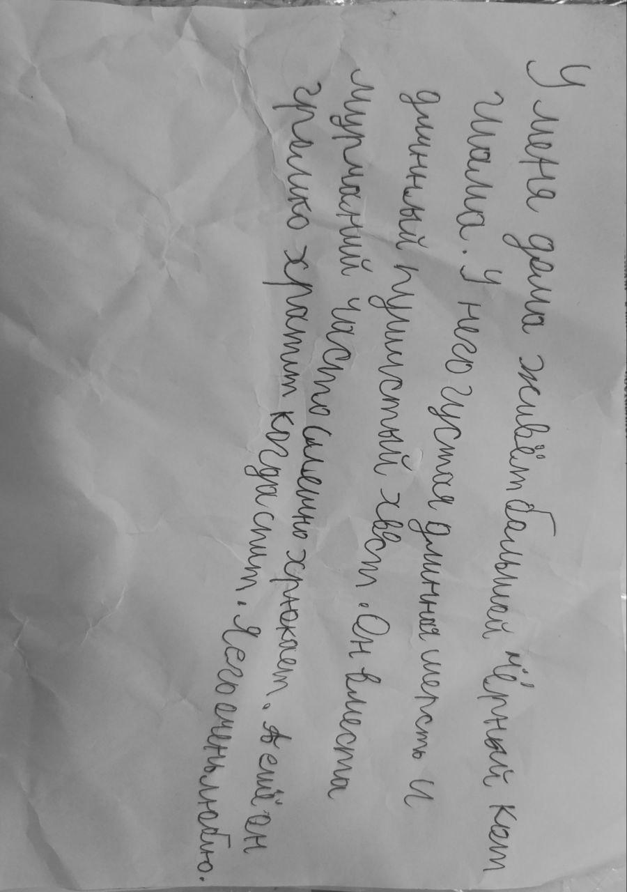
Reference
у меня дома живет большой черный кот шама у него густая длинная шерсть и длинный пушистый хвост он вместа мурчаний часто смешно хрюкает а еще он громко храпит когда спит я его очень люблю
Hypothesis
Alignment
[-у]
[-меня]
[-дома]
[-живет]
[-большой]
[-черный]
[-кот]
[-шама]
[-у]
[-него]
[-густая]
[-длинная]
[-шерсть]
[-и]
[-длинный]
[-пушистый]
[-хвост]
[-он]
[-вместа]
[-мурчаний]
[-часто]
[-смешно]
[-хрюкает]
[-а]
[-еще]
[-он]
[-громко]
[-храпит]
[-когда]
[-спит]
[-я]
[-его]
[-очень]
[-люблю]
mws-1140-84bb883fe960__grayscale
Status: ocr_error
CER: 4.1280
WER: 6.4286
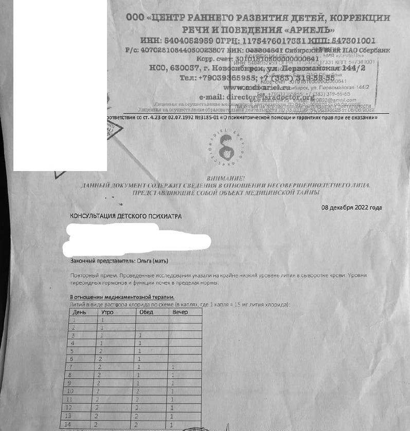
Reference
внимание данный документ содержит сведения в отношении несовершеннолетнего лица представляющие собой объект медицинской тайны
Hypothesis
| 000«ЦЕНТР РАННЕГО РАЗВИТИЯ ДЕТЕЙ, КОРРЕКЦИИ
РЕЧИ И ПОВЕДЕНИЯ «АРИЕЛЬ»
ИНН: 5404052959 ОГРН: 1175476017351 КПП: 547301001
`'Р/с: 407028 10844050025807
Ko Eee ite т.
— MPI 331 ИИ 54730 1001
CO, ot г. Новдсиб: a ул eee
}
= ое
=
т
м вИИМАНИЕ?
ДАННЫЙ ДОКУМЕНТ СОДЕРЖИТ СВЕШЕНИЯ 8 ОТНОШЕНИИ НЕСОПЕРИИЕИНОЛЕТИЕГО ЛИЦ
ПРЕДСТАВАЯКИЦИЕ СОБОЙ OBERT МЕДИЦИНСКОЙ TAUB!
ь 08 декабря 2022 года
"КОНСУЛЬТАЦИЯ ДЕТСКОГО ПСИХИАТРА,
ЗЗНОНИНИ представитель: Ольга (мать)
A osioprei при, Проведенные ибследозания узазалинонрайде низкий уровень rviyn's cosbpoive spot. Уровни
Пирарнанык орменов и функции почек пределах норы
тозной
Е ЕО ОбАЛЬТО Ken (KANN
vane = 1S mr nvews snooze
Alignment
[+|]
[+000«ЦЕНТР]
[+РАННЕГО]
[+РАЗВИТИЯ]
[+ДЕТЕЙ,]
[+КОРРЕКЦИИ]
[+РЕЧИ]
[+И]
[+ПОВЕДЕНИЯ]
[+«АРИЕЛЬ»]
[+ИНН:]
[+5404052959]
[+ОГРН:]
[+1175476017351]
[+КПП:]
[+547301001]
[+`'Р/с:]
[+407028]
[+10844050025807]
[+Ko]
[+Eee]
[+ite]
[+т.]
[+—]
[+MPI]
[+331]
[+ИИ]
[+54730]
[+1001]
[+CO,]
[+ot]
[+г.]
[+Новдсиб:]
[+a]
[+ул]
[+eee]
[+}]
[+=]
[+ое]
[+=]
[+т]
[+м]
[+вИИМАНИЕ?]
[+ДАННЫЙ]
[+ДОКУМЕНТ]
[+СОДЕРЖИТ]
[+СВЕШЕНИЯ]
[+8]
[+ОТНОШЕНИИ]
[+НЕСОПЕРИИЕИНОЛЕТИЕГО]
[+ЛИЦ]
[+ПРЕДСТАВАЯКИЦИЕ]
[+СОБОЙ]
[+OBERT]
[+МЕДИЦИНСКОЙ]
[+TAUB!]
[+ь]
[+08]
[+декабря]
[+2022]
[+года]
[+"КОНСУЛЬТАЦИЯ]
[+ДЕТСКОГО]
[+ПСИХИАТРА,]
[+ЗЗНОНИНИ]
[+представитель:]
[+Ольга]
[+(мать)]
[+A]
[+osioprei]
[+при,]
[+Проведенные]
[+ибследозания]
[+узазалинонрайде]
[+низкий]
[+уровень]
[+rviyn's]
[+cosbpoive]
[+spot.]
[+Уровни]
[+Пирарнанык]
[+орменов]
[+и]
[+функции]
[+почек]
[внимание → пределах]
[данный → норы]
[документ → тозной]
[содержит → Е]
[сведения → ЕО]
[в → ОбАЛЬТО]
[отношении → Ken]
[несовершеннолетнего → (KANN]
[лица → vane]
[представляющие → =]
[собой → 1S]
[объект → mr]
[медицинской → nvews]
[тайны → snooze]
mws-1145-717d0ee53887__grayscale
Status: ocr_error
CER: 0.3824
WER: 0.6919
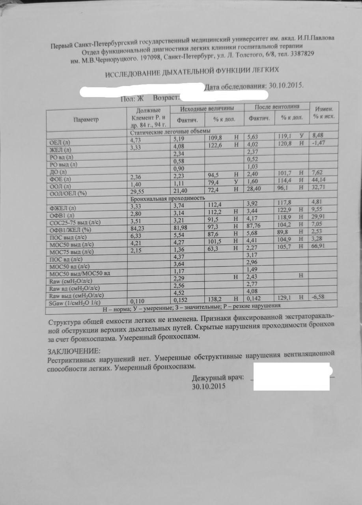
Reference
первый санкт петербургский государственный медицинский университет им акад и п павлова отдел функциональной диагностики легких клиники госпитальной терапии им м в черноруцкого 197098 санкт петербург ул л толстого 6 8 тел 3387829 исследование дыхательной функции легких дата обследования 30 10 2015 пол ж возраст параметр должные исходные величины после вентолина измен клемент р и др 84 г 94 г фактич в дол фактич в дол статические легочные объемы оел л 4 73 5 18 109 8 н 5 63 119 1 у 8 48 жел л 3 33 4 08 122 6 н 4 02 120 8 н 1 47 ро вд л 2 54 ро выд л 2 64 до л 0 50 0 93 186 0 н 0 82 164 0 н 11 83 фое л 2 36 2 54 107 6 н 2 40 101 7 н 5 51 оол 49 9 49 0 98 2 н 42 6 96 1 н 44 14 бронхиальная проходимость фжел л 3 33 3 74 112 4 н 3 92 117 8 у 4 81 офв1 л 2 84 2 14 75 4 3 2 47 87 0 у 15 42 сос25 75 выд л с 3 14 1 92 61 1 3 2 43 77 4 у 26 56 офв1 жел 84 23 51 98 87 5 3 62 9 61 4 3 21 15 пос выд л с 5 34 3 87 72 5 3 4 41 82 6 у 13 95 мос50 выд л с 3 64 1 47 40 4 3 2 43 66 7 у 65 31 мос75 выд л с 2 15 0 34 15 8 3 0 41 19 1 3 20 59 пос вд л с 3 47 мос50 вд л с 3 64 мос50 выд мос50 вд 2 17 1 49 raw смh2o л с 2 29 2 43 н raw вд смh2o л с 2 56 2 77 н raw выд смh2o л с 2 02 2 08 н sgaw 1 смh2o 1 с 0 110 0 152 138 2 н 0 142 129 1 н 6 58 н норма у умеренные 3 значительные p резкие нарушения структура общей емкости легких не изменена признаки фиксированной экстраторакальной обструкции верхних дыхательных путей скрытые нарушения проходимости бронхов за счет бронхоспазма умеренный бронхоспазм заключение рестриктивных нарушений нет умеренные обструктивные нарушения вентиляционной способности легких умеренный бронхоспазм дежурный врач 30 10 2015
Hypothesis
ре и +4 ен Ватан
И государственный медицинский университет им. акад. И.П. Павлова
легких клиники госпитальной терапии
того, 6/8, тел, 3387829
Первый Санкт-Петербургски
Отдел функциональной диагностики
нм. МВ Черноруцкого, 197098, Санкт-Петербург, ул, JI. Ton
ИССЛЕДОВАНИЕ ДЫХА ТЕЛЬНОЙ ФУНКЦИИ ЛЕГКИХ
Дата обследования: 30.10.2015.
Пол: Ж Возраст:
Должные Исходные величины. После вентолина Ивиен.
нее ме "| Фики, [| %x aon. | Факт, | %x aon | ких
‘Crarmecxate легочные объемы ]
| ЕЛ 473 59 0 Не 119,1_¥ [848
| ЖЕ (a) 333 4,08 726 Н | 402 [1208 | -1,47
POs) 2,34 227
PO вых (a) 058 0.52
TO@), 0,90 1,03
ФЕ) 236 223 а но ел [72
`ООЛ (a) 1,40. Lu 79,4 У | 160 114,4_Н | 44,14 ]
`ООЛ/ОЕЛ (%) 29,55, 21,40 72,4 Н 1 28,40 96.1 н [3271
Бронхиальная проходимость
ФЖЕЛ (a) 3,33 3,74 112,4 3,92 117,8. 4,81
ОФВ] (x) 2,80. 3,14 112,2 Н | 3,44 122,9 Н | 9,55
COC25-75 выл (a/c) 3,51 3,21 91,5 Н [4,17 118,9 Н | 29,91
`ОФВИЖЕЛ (%) 84,23 81,98 97,3 Н | 87,76 1042 Н [7.05
TIOC выд (a/c) 6,33 5,54 87,6 Н | 5,68 89,8 H [| 253
MOCS50 выд (a/c) 421 427 101,5 H [441 1049 H | 3,28
MOC75 выд (a/c) 2,15 1,36. 63,3 Н | 227 105,7_Н | 66,91
[HOC sa ©) 437 317
MOCSO вд (75) 3,64 2.96
`МОС50 выл/МОС50 Ba 17. 149
‘Raw (cmH;O/a/c) 2,29 H | 2,43 H
‘Raw вл (cMH;O/n/c) 2,56 2,77
‘Raw выд (cMH;O/n/c) 4,52 4,08
‘SGaw (ИсмН:О Ме) 0,110 0,152, 138,2 H [0,142 129.1 H | -6,58
Н порма; ¥ — умеренные: 3 = значительные; P— резкие нарушения. a
не изменена. Признаки фиксированной экстраторакаль-
Структура общей емкости легких
ния проходимости бронхов
ной обструкции верхних дыхательных путей. Скрытые наруше!
за счет бронхоспазма. Умеренный бронхоспазм.
ЗАКЛЮЧЕНИЕ:
Рестриктивных нарушений нет, `Умеренные обструктивные нарушения вентиляционной
способности легких. Умеренный бронхоспазм,
Дежурный врач: _ é
30.10.2015
Alignment
[-первый]
[санкт → ре]
[петербургский → и]
[государственный → +4]
[медицинский → ен]
[университет → Ватан]
[им → И]
[акад → государственный]
[и → медицинский]
[п → университет]
[павлова → им.]
[отдел → акад.]
[функциональной → И.П.]
[диагностики → Павлова]
легких
клиники
госпитальной
терапии
[+того,]
[им → 6/8,]
[м → тел,]
[в → 3387829]
[черноруцкого → Первый]
[197098 → Санкт-Петербургски]
[санкт → Отдел]
[петербург → функциональной]
[ул → диагностики]
[л → нм.]
[толстого → МВ]
[6 → Черноруцкого,]
[8 → 197098,]
[тел → Санкт-Петербург,]
[3387829 → ул,]
[исследование → JI.]
[дыхательной → Ton]
[функции → ИССЛЕДОВАНИЕ]
[легких → ДЫХА]
[дата → ТЕЛЬНОЙ]
[обследования → ФУНКЦИИ]
[30 → ЛЕГКИХ]
[10 → Дата]
[2015 → обследования:]
[пол → 30.10.2015.]
[ж → Пол:]
[возраст → Ж]
[параметр → Возраст:]
[должные → Должные]
[исходные → Исходные]
[величины → величины.]
[после → После]
вентолина
[измен → Ивиен.]
[клемент → нее]
[р → ме]
[и → "|]
[др → Фики,]
[84 → [|]
[г → %x]
[94 → aon.]
[г → |]
[фактич → Факт,]
[в → |]
[дол → %x]
[фактич → aon]
[в → |]
[дол → ких]
[статические → ‘Crarmecxate]
легочные
объемы
[-оел]
[-л]
[-4]
[-73]
[-5]
[-18]
[-109]
[-8]
[-н]
[-5]
[-63]
[-119]
[-1]
[-у]
[-8]
[-48]
[-жел]
[-л]
[-3]
[-33]
[-4]
[-08]
[-122]
[-6]
[-н]
[-4]
[-02]
[-120]
[-8]
[-н]
[-1]
[-47]
[-ро]
[-вд]
[-л]
[-2]
[-54]
[-ро]
[-выд]
[л → ]]
[2 → |]
[64 → ЕЛ]
[до → 473]
[л → 59]
0
[50 → Не]
[0 → 119,1_¥]
[93 → [848]
[186 → |]
[0 → ЖЕ]
[н → (a)]
[0 → 333]
[82 → 4,08]
[164 → 726]
[0 → Н]
[н → |]
[11 → 402]
[83 → [1208]
[фое → |]
[л → -1,47]
[2 → POs)]
[36 → 2,34]
[2 → 227]
[54 → PO]
[107 → вых]
[6 → (a)]
[н → 058]
[2 → 0.52]
[40 → TO@),]
[101 → 0,90]
[7 → 1,03]
[н → ФЕ)]
[5 → 236]
[51 → 223]
[оол → а]
[49 → но]
[9 → ел]
[49 → [72]
[0 → `ООЛ]
[98 → (a)]
[2 → 1,40.]
[н → Lu]
[42 → 79,4]
[6 → У]
[96 → |]
[1 → 160]
[н → 114,4_Н]
[44 → |]
[14 → 44,14]
[бронхиальная → ]]
[проходимость → `ООЛ/ОЕЛ]
[фжел → (%)]
[л → 29,55,]
[3 → 21,40]
[33 → 72,4]
[3 → Н]
[74 → 1]
[112 → 28,40]
[4 → 96.1]
н
[-3]
[-92]
[-117]
[-8]
[-у]
[-4]
[-81]
[-офв1]
[-л]
[-2]
[-84]
[-2]
[14 → [3271]
[75 → Бронхиальная]
[4 → проходимость]
[3 → ФЖЕЛ]
[2 → (a)]
[47 → 3,33]
[87 → 3,74]
[0 → 112,4]
[у → 3,92]
[15 → 117,8.]
[42 → 4,81]
[сос25 → ОФВ]]
[75 → (x)]
[выд → 2,80.]
[л → 3,14]
[с → 112,2]
[3 → Н]
[14 → |]
[1 → 3,44]
[92 → 122,9]
[61 → Н]
[1 → |]
[3 → 9,55]
[2 → COC25-75]
[43 → выл]
[77 → (a/c)]
[4 → 3,51]
[у → 3,21]
[26 → 91,5]
[56 → Н]
[офв1 → [4,17]
[жел → 118,9]
[84 → Н]
[23 → |]
[51 → 29,91]
[98 → `ОФВИЖЕЛ]
[87 → (%)]
[5 → 84,23]
[3 → 81,98]
[62 → 97,3]
[9 → Н]
[61 → |]
[4 → 87,76]
[3 → 1042]
[21 → Н]
[15 → [7.05]
[пос → TIOC]
выд
[-л]
[-с]
[-5]
[-34]
[-3]
[87 → (a/c)]
[72 → 6,33]
[5 → 5,54]
[3 → 87,6]
[4 → Н]
[41 → |]
[82 → 5,68]
[6 → 89,8]
[у → H]
[13 → [|]
[95 → 253]
[мос50 → MOCS50]
выд
[-л]
[-с]
[-3]
[-64]
[-1]
[-47]
[40 → (a/c)]
[4 → 421]
[3 → 427]
[2 → 101,5]
[43 → H]
[66 → [441]
[7 → 1049]
[у → H]
[65 → |]
[31 → 3,28]
[мос75 → MOC75]
выд
[-л]
[-с]
[-2]
[-15]
[-0]
[-34]
[-15]
[-8]
[-3]
[-0]
[-41]
[-19]
[-1]
[-3]
[-20]
[59 → (a/c)]
[пос → 2,15]
[вд → 1,36.]
[л → 63,3]
[с → Н]
[3 → |]
[47 → 227]
[мос50 → 105,7_Н]
[вд → |]
[л → 66,91]
[с → [HOC]
[3 → sa]
[64 → ©)]
[мос50 → 437]
[выд → 317]
[мос50 → MOCSO]
вд
[-2]
[-17]
[-1]
[49 → (75)]
[raw → 3,64]
[смh2o → 2.96]
[л → `МОС50]
[с → выл/МОС50]
[2 → Ba]
[29 → 17.]
[2 → 149]
[43 → ‘Raw]
[н → (cmH;O/a/c)]
[raw → 2,29]
[вд → H]
[смh2o → |]
[л → 2,43]
[с → H]
[2 → ‘Raw]
[56 → вл]
[2 → (cMH;O/n/c)]
[77 → 2,56]
[н → 2,77]
[raw → ‘Raw]
выд
[-смh2o]
[-л]
[-с]
[-2]
[02 → (cMH;O/n/c)]
[2 → 4,52]
[08 → 4,08]
[н → ‘SGaw]
[sgaw → (ИсмН:О]
[1 → Ме)]
[смh2o → 0,110]
[1 → 0,152,]
[с → 138,2]
[0 → H]
[110 → [0,142]
[0 → 129.1]
[152 → H]
[138 → |]
[2 → -6,58]
[н → Н]
[0 → порма;]
[142 → ¥]
[129 → —]
[1 → умеренные:]
[н → 3]
[6 → =]
[58 → значительные;]
[н → P—]
[норма → резкие]
[у → нарушения.]
[умеренные → a]
[3 → не]
[значительные → изменена.]
[p → Признаки]
[резкие → фиксированной]
[нарушения → экстраторакаль-]
[структура → Структура]
общей
емкости
легких
[-не]
[изменена → ния]
[признаки → проходимости]
[фиксированной → бронхов]
[экстраторакальной → ной]
обструкции
верхних
дыхательных
[-путей]
[-скрытые]
[нарушения → путей.]
[проходимости → Скрытые]
[бронхов → наруше!]
за
счет
[бронхоспазма → бронхоспазма.]
[умеренный → Умеренный]
[бронхоспазм → бронхоспазм.]
[заключение → ЗАКЛЮЧЕНИЕ:]
[рестриктивных → Рестриктивных]
нарушений
[нет → нет,]
[умеренные → `Умеренные]
обструктивные
нарушения
вентиляционной
способности
[легких → легких.]
[умеренный → Умеренный]
[бронхоспазм → бронхоспазм,]
[дежурный → Дежурный]
[врач → врач:]
[30 → _]
[10 → é]
[2015 → 30.10.2015]
mws-1148-e48f6fb47528__grayscale
Status: ocr_error
CER: 2.3668
WER: 2.6068
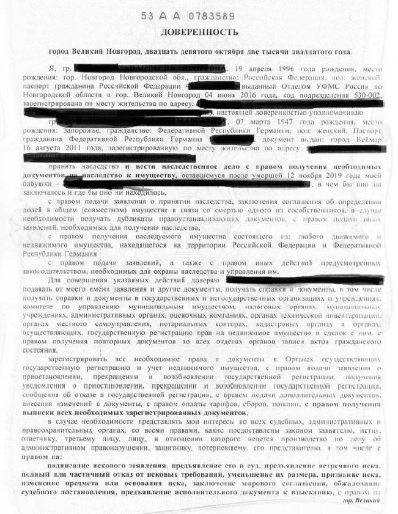
Reference
принять наследство и вести наследственное дело с правом получения необходимых документов на наследство к имуществу оставшихся после умершей 12 ноября 2019 года моей бабушки фио бабушки в чем бы они ни заключалось и где бы оно ни находилось с правом подачи заявления о принятии наследства заключения соглашения об определении долей в общем совместном имуществе в связи со смертью одного из сособственников в случае необходимости получать дубликаты правоустанавливающих документов с правом подачи иных заявлений необходимых для получения наследства с правом получения наследуемого имущества состоящего из любого движимого и недвижимого имущества находящегося на территории российской федерации и федеративной республики германия с правом подачи заявлений а также с правом иных действий предусмотренных законодательством необходимых для охраны наследства и управления им
Hypothesis
53 АА 0783589
ДОВЕРЕННОСТЬ
горох Великий Новгород, двалиать левятого октября две тысячи лвалиатого го.
Новгородской области в гор. Великий Новгород_04 июня 2016 года. код подразделения 530-002
зарегистрирована по месту жительства по адресу
иизстоящей доверенностью уполномочиавю
тр 07 март 1947 года рожления. м
рождения: Запорояк
ракданииа Федеративной Pe
16 августа 2011 гол, зарегистрированную по месту xl
приждаиство: Федератньной Республики Германии, пол’ женский
публики Германия докумен" вылаи: горо,
наследственное дело © правом получения и
ославшемуся после умершей 12 ноября 2019 тода моей
принять Наследство и’ все
‘ледетво к имущеетьз,
алось и гдз бы оно ни нахбДИлось,
правом подачи заявления © принятии наследства,
тей в общем (совместном) имуществе в саязи со смертью одного из тоенииковы Bc
вобходимости получать дубликаты правоустанавливающих документи. © ираном Ah Е
правом получения наследуемого имущества состоящего
недвижимого имущества. находяшегося на территории Российской Фелераини
и Федеративной
вом подачи заявасний, а также © правом нньх
зконодательством, необходимых для охраны наследства и управления им.
ершения указанных действий доверяю
‘заявления и другие документы. получать CHEER T
котвенных и негосударсовенных организациях и учрежлления
имуществом, налоговых органах. мун
‘ействий предусмотрен
Для со
олучать справки и документы в госу
тете по управлению муниципальным
реклениях, административных органах, оценочных компаниях. органах пехической нивеитаринаии
местного самоуправления, нотариальных конторах. кадастровых орпиах п орган
'вляющих, госуларственную регистрацию прав на недвижимое имущество и слелок
Pex отделах органов запиеи актов граждамек
правом получения пояторных документов во
зарегистрировать ace необходимые права и докуметы # Органах осущесткаян
`осуларственную регистрацию и учет недвижимого имущества. © прмюм подачи звяплении
приостановлении, прекращении и возобновлении государственной регистрации. получении
› приостановлении, прекращении н воюбновленин тосударстненной регистраии
бщения 06 отказе в говударстьсиной регистрации, © правом, подачи
онесения намонений © документы, © правом оплаты, тарифов, сборов, п
‘ки всех иеобходимых зарегистрированных документов,
в случае необходимости представлять мои интересы во всех судебных
равоохранительных органах, со вусми правами, какис предоставлены законом зальителю, нет
произволетно по делу 08
административных и
отаетиику, третьему лицу, лицу, и отношении которого пелется
алминистративном правонарушении, зашитнику. потерпевшему. его ппелстаяителю, в том числе с
не сто п вул, предуявление встречного Wer:
У ные их размера, приди:
Ka, Заключение мирового соглашении, обжаловани
ур. Великий
предмета
останопления, предъявление исполнитель
Alignment
[+53]
[+АА]
[+0783589]
[+ДОВЕРЕННОСТЬ]
[+горох]
[+Великий]
[+Новгород,]
[+двалиать]
[+левятого]
[+октября]
[+две]
[+тысячи]
[+лвалиатого]
[+го.]
[+Новгородской]
[+области]
[+в]
[+гор.]
[+Великий]
[+Новгород_04]
[+июня]
[+2016]
[+года.]
[+код]
[+подразделения]
[+530-002]
[+зарегистрирована]
[+по]
[+месту]
[+жительства]
[+по]
[+адресу]
[+иизстоящей]
[+доверенностью]
[+уполномочиавю]
[+тр]
[+07]
[+март]
[+1947]
[+года]
[+рожления.]
[+м]
[+рождения:]
[+Запорояк]
[+ракданииа]
[+Федеративной]
[+Pe]
[+16]
[+августа]
[+2011]
[+гол,]
[+зарегистрированную]
[+по]
[+месту]
[+xl]
[+приждаиство:]
[+Федератньной]
[принять → Республики]
[наследство → Германии,]
[и → пол’]
[вести → женский]
[наследственное → публики]
[дело → Германия]
[с → докумен"]
[правом → вылаи:]
[получения → горо,]
[необходимых → наследственное]
[документов → дело]
[на → ©]
[наследство → правом]
[к → получения]
[имуществу → и]
[оставшихся → ославшемуся]
после
умершей
12
ноября
2019
[года → тода]
моей
[-бабушки]
[фио → принять]
[бабушки → Наследство]
[в → и’]
[чем → все]
[бы → ‘ледетво]
[они → к]
[ни → имущеетьз,]
[заключалось → алось]
и
[где → гдз]
бы
оно
ни
[-находилось]
[с → нахбДИлось,]
правом
подачи
заявления
[о → ©]
принятии
[-наследства]
[-заключения]
[-соглашения]
[-об]
[определении → наследства,]
[долей → тей]
в
общем
[совместном → (совместном)]
имуществе
в
[связи → саязи]
со
смертью
одного
из
[-сособственников]
[в → тоенииковы]
[случае → Bc]
[необходимости → вобходимости]
получать
дубликаты
правоустанавливающих
[+документи.]
[+©]
[+ираном]
[документов → Ah]
[с → Е]
правом
[+получения]
[+наследуемого]
[+имущества]
[+состоящего]
[+недвижимого]
[+имущества.]
[+находяшегося]
[+на]
[+территории]
[+Российской]
[+Фелераини]
[+и]
[+Федеративной]
[+вом]
подачи
[+заявасний,]
[+а]
[+также]
[+©]
[+правом]
[иных → нньх]
[заявлений → зконодательством,]
необходимых
для
[получения → охраны]
наследства
[+и]
[+управления]
[+им.]
[+ершения]
[+указанных]
[+действий]
[+доверяю]
[+‘заявления]
[+и]
[+другие]
[+документы.]
[+получать]
[+CHEER]
[+T]
[+котвенных]
[+и]
[+негосударсовенных]
[+организациях]
[+и]
[+учрежлления]
[+имуществом,]
[+налоговых]
[+органах.]
[+мун]
[+‘ействий]
[+предусмотрен]
[+Для]
[+со]
[+олучать]
[+справки]
[+и]
[+документы]
[+в]
[+госу]
[+тете]
[+по]
[+управлению]
[+муниципальным]
[+реклениях,]
[+административных]
[+органах,]
[+оценочных]
[+компаниях.]
[+органах]
[+пехической]
[+нивеитаринаии]
[+местного]
[+самоуправления,]
[+нотариальных]
[+конторах.]
[+кадастровых]
[+орпиах]
[+п]
[+орган]
[+'вляющих,]
[+госуларственную]
[+регистрацию]
[+прав]
[+на]
[+недвижимое]
[+имущество]
[+и]
[+слелок]
[+Pex]
[+отделах]
[+органов]
[+запиеи]
[+актов]
[с → граждамек]
правом
получения
[+пояторных]
[+документов]
[+во]
[+зарегистрировать]
[+ace]
[+необходимые]
[+права]
[+и]
[наследуемого → докуметы]
[имущества → #]
[состоящего → Органах]
[из → осущесткаян]
[любого → `осуларственную]
[движимого → регистрацию]
и
[+учет]
недвижимого
[+имущества.]
[имущества → ©]
[находящегося → прмюм]
[на → подачи]
[территории → звяплении]
[российской → приостановлении,]
[федерации → прекращении]
и
[+возобновлении]
[+государственной]
[+регистрации.]
[+получении]
[+›]
[+приостановлении,]
[+прекращении]
[+н]
[+воюбновленин]
[+тосударстненной]
[+регистраии]
[+бщения]
[+06]
[+отказе]
[федеративной → в]
[республики → говударстьсиной]
[германия → регистрации,]
[с → ©]
[правом → правом,]
подачи
[+онесения]
[заявлений → намонений]
[а → ©]
[также → документы,]
[с → ©]
правом
[+оплаты,]
[+тарифов,]
[+сборов,]
[+п]
[+‘ки]
[+всех]
[+иеобходимых]
[+зарегистрированных]
[+документов,]
[+в]
[+случае]
[+необходимости]
[+представлять]
[+мои]
[+интересы]
[+во]
[+всех]
[+судебных]
[+равоохранительных]
[+органах,]
[+со]
[+вусми]
[+правами,]
[+какис]
[+предоставлены]
[+законом]
[+зальителю,]
[+нет]
[+произволетно]
[+по]
[иных → делу]
[действий → 08]
[предусмотренных → административных]
[законодательством → и]
[необходимых → отаетиику,]
[для → третьему]
[охраны → лицу,]
[наследства → лицу,]
и
[+отношении]
[+которого]
[+пелется]
[+алминистративном]
[+правонарушении,]
[+зашитнику.]
[+потерпевшему.]
[+его]
[+ппелстаяителю,]
[+в]
[+том]
[+числе]
[+с]
[+не]
[+сто]
[+п]
[+вул,]
[+предуявление]
[+встречного]
[+Wer:]
[+У]
[+ные]
[+их]
[+размера,]
[+приди:]
[+Ka,]
[+Заключение]
[+мирового]
[+соглашении,]
[+обжаловани]
[+ур.]
[+Великий]
[+предмета]
[+останопления,]
[управления → предъявление]
[им → исполнитель]
mws-115-e065603f66f1__grayscale
Status: ocr_error
CER: 0.2371
WER: 0.2923
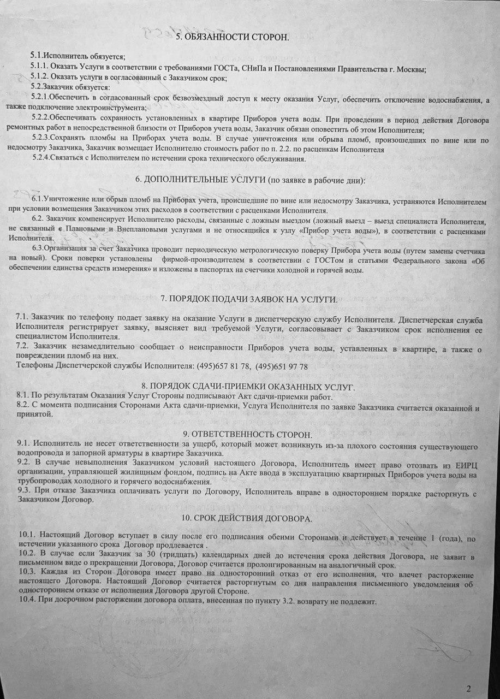
Reference
5 обязанности сторон 5 1 исполнитель обязуется 5 1 1 оказать услуги в соответствии с требованиями госта снипа и постановлениями правительства г москвы 5 1 2 оказать услуги в согласованный с заказчиком срок 5 2 заказчик обязуется 5 2 1 обеспечить в согласованный срок безвозмездный доступ к месту оказания услуг обеспечить отключение водоснабжения а также подключение электроинструмента 5 2 2 обеспечить сохранность установленных в квартире приборов учета воды при проведении в период действия договора ремонтных работ непосредственно близости от приборов учета воды заказчик обязан оповестить об этом исполнителя 5 2 3 сохранять пломбы на приборах учета воды в случае уничтожения или обрыва пломб произошедших по вине или по недосмотру заказчика заказчик возмещает исполнителю стоимость работ по п 2 2 по расценкам исполнителя 5 2 4 связаться с исполнителем по истечении срока технического обслуживания 6 дополнительные услуги по заявке в рабочие дни 6 1 уничтожение или обрыв пломб на приборах учета происшедшие по вине или недосмотру заказчика устраняются исполнителем при условии возмещения заказчиком этих расходов в соответствии с расценками исполнителя 6 2 заказчик компенсирует исполнителю расходы связанные с ложным выездом ложный выезд вызов специалиста исполнителя не связанный с плановыми и внеплановыми услугами и не относящийся к узлу прибор учета воды в соответствии с расценками исполнителя 6 3 организация за счет заказчика проводит периодическую метрологическую поверку прибора учета воды путем замены счетчика на новый сроки поверки установлены фирмой производителем в соответствии с гостом и статьями федерального закона об обеспечении единства средств измерения и изложены в паспортах на счетчики холодной и горячей воды 7 порядок подачи заявок на услуги 7 1 заказчик по телефону подает заявку на оказание услуги в диспетчерскую службу исполнителя диспетчерская служба исполнителя регистрирует заявку выясняет вид требуемой услуги согласовывает с заказчиком срок исполнения ее специалистом исполнителя 7 2 заказчик незамедлительно сообщает о неисправности приборов учета воды установленных в квартире а также о повреждении пломб на них телефоны диспетчерской службы исполнителя 495 651 81 78 495 651 97 78 8 порядок сдачи приемки оказанных услуг 8 1 по результатам оказания услуг стороны подписывают акт сдачи приемки работ 8 2 с момента подписания сторонами акта сдачи приемки услуга исполнителя по заявке заказчика считается оказанной и принятой 9 ответственность сторон 9 1 исполнитель не несет ответственности за ущерб который может возникнуть из за плохого состояния существующего водопровода и запорной арматуры в квартире заказчика 9 2 в случае невыполнения заказчиком условий настоящего договора исполнитель имеет право отозвать из еирц организации управляющей жилищным фондом подпись на акте ввода в эксплуатацию квартирных приборов учета воды на трубопроводах холодного и горячего водоснабжения 9 3 при отказе заказчика оплачивать услуги по договору исполнитель вправе в одностороннем порядке расторгнуть с заказчиком договор 10 срок действия договора 10 1 настоящий договор вступает в силу после его подписания обеими сторонами и действует в течение 1 года по истечении указанного срока договор продлевается 10 2 в случае если заказчик за 30 тридцать календарных дней до истечения срока действия договора не заявит в письменном виде о прекращении договора договор считается пролонгированным на аналогичный срок 10 3 каждая из сторон договора имеет право на односторонний отказ от его исполнения что влечет расторжение настоящего договора настоящий договор считается расторгнутым со дня направления письменного уведомления об одностороннем отказе от исполнения договора другой стороне 10 4 при досрочном расторжении договора оплата внесенная по пункту 3 2 возврату не подлежит 2
Hypothesis
`5. ОБЯЗАНЙОСТИ СТОРОН.
5-1.Исполнитель обязуется;
5-1. Оказать Услуги в соответствии с требованиями ГОСТа, СНиПа и Постановлениями Правительства г. Москвы; $
5.1.2. Оказать услуги в согласованный с Заказчиком срок; ие
5.2 Заказчик обязуется:
5.2.1.Обеспечить в согласованный срок безвозмездный доступ к месту оказания Услуг, обеспечить отключение водоснабжения, а.
также подключение электроинструмента; Е
$-2.2.Обеспечивать сохранность установленных в квартире Приборов учета воды. При проведении в период действия Договора
ремонтных работ в непосредственной близости от Приборов учета воды, Заказчик обязан оповестить об этом Исполнителя;
5.2.3.Сохранять пломбы на Приборах учета воды. В случае уничтожения или обрыва пломб, произошедших по вине или nO
ведосмотру Заказчика, Заказчик возмещает Исполнителю стоимость работ no п. 2.2. по расценкам Исполнителя
5.2.4. Связаться © Исполнителем по истечении срока технического обслуживания.
6. ДОПОЛНИТЕЛЬНЫЕ УСЛУГИ (по заявке в рабочие дни):
6.1. Уничтожение или обрыв пломб на Приборах учета, проиёшедшие по вине или недосмотру Заказчика, устраняются Исполнителем.
при условии возмещения Заказчиком этих расходов в соответствии с расценками Исполнителя. р
62. Заказчик компенсирует Исполнителю расходы, связанные с ложным выездом (ложный выезд — выезд специалиста Исполнителя,
не связанный ¢ Плановыми-и Внеплановыми услугами и не относящийся к узлу «Прибор учета воды»), в соответствии © расценками |
'Испойнителя. < * coe = z
6.3.Opraiinanis sa! caer Заказчика проводит периодическую метрологическую поверку Прибора учета воды (путем замены счетчика:
на новый). Сроки поверки установлены фирмой-производителем в соответствии с TOCTos и статьями Федерального закона «0б
‘обеспечении единства средств измерения» и изложены в. ‘паспортах на счетчики холодной и горячей воды.
7. ПОРЯДОК ПОДАЧИ ЗАЯВОК НА УСЛУГИ.
7-1. Заказчик по телефону подает заявку на оказание Услуги в диспетчерскую службу Исполнителя. Диспетчерская служба.
Исполнителя регистрирует заявку, выясняет вид требуемой Услуги, согласовывает © Заказчиком срок исполнения ее.
специалистом Исполнителя.
72. Заказчик незамедлительно сообщает © неисправности Приборов учета воды, уставленных в квартире, а также о.
повреждении пломб на них. |
Телефоны Диспетчерской службы Исполнителя: (495)657 81 78, (495)651 97 78 ba
8. ПОРЯДОК СДАЧИ-ПРИЕМКИ ОКАЗАННЫХ УСЛУГ.
8.1, По результатам Оказания Услуг Стороны подписывают Акт сдачи-приемки работ.
82. С момента подписания Сторонами Акта сдачи-приемки, Услуга Исполнителя по заявке Заказчика считается 01
принятой,
9. ОТВЕТСТВЕННОСТЬ СТОРОН. >
9.1. Исполнитель не несет ответственности за ущерб, который может возникнуть из-за плохого состояния
водопровода и запорной арматуры в квартире Заказчика. й
92. В случае невыполнения Заказчиком условий настоящего Договора, Исполнитель имеет право
организации, управляющей жилищным фондом, подпись на Акте ввода в эксплуатацию квартирных При
трубопроводах холодного и горячего водоснабжения. s
9.3. При отказе Заказчика оплачивать услуги по Договору, Исполнитель вправе в одностороннем порядке.
Заказчиком Договор. i
Alignment
[-5]
[-обязанности]
[-сторон]
[-5]
[1 → `5.]
[исполнитель → ОБЯЗАНЙОСТИ]
[обязуется → СТОРОН.]
[5 → 5-1.Исполнитель]
[1 → обязуется;]
[1 → 5-1.]
[оказать → Оказать]
[услуги → Услуги]
в
соответствии
с
требованиями
[госта → ГОСТа,]
[снипа → СНиПа]
и
[-постановлениями]
[правительства → Постановлениями]
[г → Правительства]
[москвы → г.]
[5 → Москвы;]
[1 → $]
[2 → 5.1.2.]
[оказать → Оказать]
услуги
в
согласованный
с
[-заказчиком]
[-срок]
[-5]
[2 → Заказчиком]
[заказчик → срок;]
[обязуется → ие]
[5 → 5.2]
[2 → Заказчик]
[1 → обязуется:]
[обеспечить → 5.2.1.Обеспечить]
в
согласованный
срок
безвозмездный
доступ
к
месту
оказания
[услуг → Услуг,]
обеспечить
отключение
[водоснабжения → водоснабжения,]
[а → а.]
также
подключение
[-электроинструмента]
[-5]
[2 → электроинструмента;]
[2 → Е]
[обеспечить → $-2.2.Обеспечивать]
сохранность
установленных
в
квартире
[приборов → Приборов]
учета
[воды → воды.]
[при → При]
проведении
в
период
действия
[договора → Договора]
ремонтных
работ
[+в]
[непосредственно → непосредственной]
близости
от
[приборов → Приборов]
учета
[воды → воды,]
[заказчик → Заказчик]
обязан
оповестить
об
этом
[-исполнителя]
[-5]
[-2]
[3 → Исполнителя;]
[сохранять → 5.2.3.Сохранять]
пломбы
на
[приборах → Приборах]
учета
[воды → воды.]
[в → В]
случае
уничтожения
или
обрыва
[пломб → пломб,]
произошедших
по
вине
или
[по → nO]
[недосмотру → ведосмотру]
[заказчика → Заказчика,]
[заказчик → Заказчик]
возмещает
[исполнителю → Исполнителю]
стоимость
работ
[-по]
[п → no]
[2 → п.]
[2 → 2.2.]
по
расценкам
[-исполнителя]
[-5]
[2 → Исполнителя]
[4 → 5.2.4.]
[связаться → Связаться]
[с → ©]
[исполнителем → Исполнителем]
по
истечении
срока
технического
[обслуживания → обслуживания.]
[6 → 6.]
[дополнительные → ДОПОЛНИТЕЛЬНЫЕ]
[услуги → УСЛУГИ]
[по → (по]
заявке
в
рабочие
[-дни]
[6 → дни):]
[1 → 6.1.]
[уничтожение → Уничтожение]
или
обрыв
пломб
на
[приборах → Приборах]
[учета → учета,]
[происшедшие → проиёшедшие]
по
вине
или
недосмотру
[заказчика → Заказчика,]
устраняются
[исполнителем → Исполнителем.]
при
условии
возмещения
[заказчиком → Заказчиком]
этих
расходов
в
соответствии
с
расценками
[исполнителя → Исполнителя.]
[6 → р]
[2 → 62.]
[заказчик → Заказчик]
компенсирует
[исполнителю → Исполнителю]
[расходы → расходы,]
связанные
с
ложным
выездом
[ложный → (ложный]
выезд
[+—]
[вызов → выезд]
специалиста
[исполнителя → Исполнителя,]
не
связанный
[-с]
[плановыми → ¢]
[и → Плановыми-и]
[внеплановыми → Внеплановыми]
услугами
и
не
относящийся
к
узлу
[прибор → «Прибор]
учета
[воды → воды»),]
в
соответствии
[с → ©]
расценками
[+|]
[+'Испойнителя.]
[+<]
[+*]
[исполнителя → coe]
[6 → =]
[3 → z]
[организация → 6.3.Opraiinanis]
[за → sa!]
[счет → caer]
[заказчика → Заказчика]
проводит
периодическую
метрологическую
поверку
[прибора → Прибора]
учета
воды
[путем → (путем]
замены
[счетчика → счетчика:]
на
[новый → новый).]
[сроки → Сроки]
поверки
установлены
[-фирмой]
[производителем → фирмой-производителем]
в
соответствии
с
[гостом → TOCTos]
и
статьями
[федерального → Федерального]
закона
[об → «0б]
[обеспечении → ‘обеспечении]
единства
средств
[измерения → измерения»]
и
изложены
[в → в.]
[паспортах → ‘паспортах]
на
счетчики
холодной
и
горячей
[-воды]
[7 → воды.]
[порядок → 7.]
[подачи → ПОРЯДОК]
[заявок → ПОДАЧИ]
[на → ЗАЯВОК]
[услуги → НА]
[7 → УСЛУГИ.]
[1 → 7-1.]
[заказчик → Заказчик]
по
телефону
подает
заявку
на
оказание
[услуги → Услуги]
в
диспетчерскую
службу
[исполнителя → Исполнителя.]
[диспетчерская → Диспетчерская]
[служба → служба.]
[исполнителя → Исполнителя]
регистрирует
[заявку → заявку,]
выясняет
вид
требуемой
[услуги → Услуги,]
согласовывает
[с → ©]
[заказчиком → Заказчиком]
срок
исполнения
[ее → ее.]
специалистом
[-исполнителя]
[7 → Исполнителя.]
[2 → 72.]
[заказчик → Заказчик]
незамедлительно
сообщает
[о → ©]
неисправности
[приборов → Приборов]
учета
[воды → воды,]
[установленных → уставленных]
в
[квартире → квартире,]
а
также
[о → о.]
повреждении
пломб
на
[них → них.]
[телефоны → |]
[диспетчерской → Телефоны]
[службы → Диспетчерской]
[исполнителя → службы]
[495 → Исполнителя:]
[651 → (495)657]
81
[-78]
[495 → 78,]
[651 → (495)651]
97
78
[-8]
[порядок → ba]
[сдачи → 8.]
[приемки → ПОРЯДОК]
[оказанных → СДАЧИ-ПРИЕМКИ]
[услуг → ОКАЗАННЫХ]
[8 → УСЛУГ.]
[1 → 8.1,]
[по → По]
результатам
[оказания → Оказания]
[услуг → Услуг]
[стороны → Стороны]
подписывают
[-акт]
[-сдачи]
[приемки → Акт]
[работ → сдачи-приемки]
[8 → работ.]
[2 → 82.]
[с → С]
момента
подписания
[-сторонами]
[акта → Сторонами]
[сдачи → Акта]
[приемки → сдачи-приемки,]
[услуга → Услуга]
[исполнителя → Исполнителя]
по
заявке
[заказчика → Заказчика]
считается
[-оказанной]
[и → 01]
[принятой → принятой,]
[9 → 9.]
[ответственность → ОТВЕТСТВЕННОСТЬ]
[сторон → СТОРОН.]
[9 → >]
[1 → 9.1.]
[исполнитель → Исполнитель]
не
несет
ответственности
за
[ущерб → ущерб,]
который
может
возникнуть
[-из]
[за → из-за]
плохого
состояния
[-существующего]
водопровода
и
запорной
арматуры
в
квартире
[заказчика → Заказчика.]
[9 → й]
[2 → 92.]
[в → В]
случае
невыполнения
[заказчиком → Заказчиком]
условий
настоящего
[договора → Договора,]
[исполнитель → Исполнитель]
имеет
право
[-отозвать]
[-из]
[-еирц]
[организации → организации,]
управляющей
жилищным
[фондом → фондом,]
подпись
на
[акте → Акте]
ввода
в
эксплуатацию
квартирных
[-приборов]
[-учета]
[-воды]
[на → При]
трубопроводах
холодного
и
горячего
[водоснабжения → водоснабжения.]
[9 → s]
[3 → 9.3.]
[при → При]
отказе
[заказчика → Заказчика]
оплачивать
услуги
по
[договору → Договору,]
[исполнитель → Исполнитель]
вправе
[-в]
[-одностороннем]
[-порядке]
[-расторгнуть]
[-с]
[-заказчиком]
[-договор]
[-10]
[-срок]
[-действия]
[-договора]
[-10]
[-1]
[-настоящий]
[-договор]
[-вступает]
[-в]
[-силу]
[-после]
[-его]
[-подписания]
[-обеими]
[-сторонами]
[-и]
[-действует]
[-в]
[-течение]
[-1]
[-года]
[-по]
[-истечении]
[-указанного]
[-срока]
[-договор]
[-продлевается]
[-10]
[-2]
[-в]
[-случае]
[-если]
[-заказчик]
[-за]
[-30]
[-тридцать]
[-календарных]
[-дней]
[-до]
[-истечения]
[-срока]
[-действия]
[-договора]
[-не]
[-заявит]
в
[-письменном]
[-виде]
[-о]
[-прекращении]
[-договора]
[-договор]
[-считается]
[-пролонгированным]
[-на]
[-аналогичный]
[-срок]
[-10]
[-3]
[-каждая]
[-из]
[-сторон]
[-договора]
[-имеет]
[-право]
[-на]
[-односторонний]
[-отказ]
[-от]
[-его]
[-исполнения]
[-что]
[-влечет]
[-расторжение]
[-настоящего]
[-договора]
[-настоящий]
[-договор]
[-считается]
[-расторгнутым]
[-со]
[-дня]
[-направления]
[-письменного]
[-уведомления]
[-об]
одностороннем
[-отказе]
[-от]
[-исполнения]
[-договора]
[-другой]
[-стороне]
[-10]
[-4]
[-при]
[-досрочном]
[-расторжении]
[-договора]
[-оплата]
[-внесенная]
[-по]
[-пункту]
[-3]
[-2]
[возврату → порядке.]
[не → Заказчиком]
[подлежит → Договор.]
[2 → i]
mws-1153-55c2a21e2cd0__grayscale
Status: ocr_error
CER: 1.9444
WER: 2.3600
Reference
номер карты 2439 срок действия карты 08 22 имя держателя карты платежная система mastercard номер ссылки 000959580659 код авторизации 017476 a код ответа хоста 00
Hypothesis
ПАО
ОСКОВСКИЙ КРЕДИТНЫЙ БАН!
(121471), Москва г, Петра Алексеева 2-й пер, 2, стр. 1
то 61804812
мо 618000000003902
НОМЕР ЗАКАЗА. 101621
ВРЕМЯ И ДАТА ТРАНЗАКЦИИ 21.01.2020 02:41:35
Одобрено
НОМЕР КАРТЫ sence mene 2430)
СРОК ДЕЙСТВИЯ КАРТЫ 08/22
ИМЯ ДЕРЖАТЕЛЯ КАРТЫ
ПЛАТЕЖНАЯ СИСТЕМА MASTERCARD
НОМЕР ССЫЛКИ 000959580659
КОД АВТОРИЗАЦИИ 017476 А
КОД ОТВЕТА ХОСТА 00
СУММА 10,639.00 руб
КОМИССИЯ C КЛИЕНТА НЕ ВЗИМАЕТСЯ
КОД ВАЛЮТЫ ОПЕРАЦИИ 643
САЙТ MEPUAHTA
htips:/just-tea.ru/
ПОЧТА КЛИЕНТА
Alignment
[+ПАО]
[+ОСКОВСКИЙ]
[+КРЕДИТНЫЙ]
[+БАН!]
[+(121471),]
[+Москва]
[+г,]
[+Петра]
[+Алексеева]
[+2-й]
[+пер,]
[+2,]
[+стр.]
[+1]
[+то]
[+61804812]
[+мо]
[+618000000003902]
[+НОМЕР]
[+ЗАКАЗА.]
[+101621]
[+ВРЕМЯ]
[+И]
[+ДАТА]
[+ТРАНЗАКЦИИ]
[+21.01.2020]
[+02:41:35]
[+Одобрено]
[+НОМЕР]
[номер → КАРТЫ]
[карты → sence]
[2439 → mene]
[срок → 2430)]
[действия → СРОК]
[карты → ДЕЙСТВИЯ]
[08 → КАРТЫ]
[22 → 08/22]
[имя → ИМЯ]
[держателя → ДЕРЖАТЕЛЯ]
[карты → КАРТЫ]
[платежная → ПЛАТЕЖНАЯ]
[система → СИСТЕМА]
[mastercard → MASTERCARD]
[номер → НОМЕР]
[ссылки → ССЫЛКИ]
000959580659
[код → КОД]
[авторизации → АВТОРИЗАЦИИ]
017476
[a → А]
[код → КОД]
[ответа → ОТВЕТА]
[хоста → ХОСТА]
00
[+СУММА]
[+10,639.00]
[+руб]
[+КОМИССИЯ]
[+C]
[+КЛИЕНТА]
[+НЕ]
[+ВЗИМАЕТСЯ]
[+КОД]
[+ВАЛЮТЫ]
[+ОПЕРАЦИИ]
[+643]
[+САЙТ]
[+MEPUAHTA]
[+htips:/just-tea.ru/]
[+ПОЧТА]
[+КЛИЕНТА]